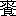

| 平凡 | |
| 二葉亭 四迷 | |
| (2012) | |
平凡
二葉亭四迷
一
私は今年
三十九になる。人世
五十が通相場
なら、まだ今日明日
穴へ入ろうとも思わぬが、しかし未来は長いようでも短いものだ。過去って了えば実に呆気
ない。まだまだと云ってる中
にいつしか此世の隙
が明いて、もうおさらばという時節が来る。其時になって幾ら足搔
いたって藻搔
いたって追付
かない。覚悟をするなら今の中
だ。
いや、しかし私も老込んだ。三十九には老込みようがチト早過ぎるという人も有ろうが、気の持方
は年よりも老
けた方が好い。それだと無難だ。
如何
して此様
な老人
じみた心持になったものか知らぬが、強
ち苦労をして来た所為
では有るまい。私位
の苦労は誰でもしている。尤も苦労しても一向苦労に負
げぬ何時迄
も元気な人もある。或は苦労が上辷
りをして心に浸
みないように、何時迄
も稚気
の失せぬお坊さん質
の人もあるが、大抵は皆私のように苦労に負
げて、年よりは老込んで、意久地
なく所帯染
みて了い、役所の帰りに鮭
を二切
竹の皮に包んで提
げて来る気になる、それが普通だと、まあ、思って自ら慰めている。
もう斯
うなると前途が見え透く。もう如何様
に藻搔
たとて駄目だと思う。残念と思わぬではないが、思ったとて仕方がない。それよりは其隙
で内職の賃訳
の一枚も余計にして、もう、これ、冬が近いから、家内中に綿入れの一枚も引張
らせる算段を為
なければならぬ。
もう私は大した慾もない。どうか忰
が中学を卒業する迄首尾よく役所を勤めて居たい、其迄に小金の少しも溜めて、いつ何時
私に如何
な事が有っても、妻子が路頭に迷わぬ程にして置きたいと思うだけだが、それが果して出来るものやら、出来ぬものやら、甚だ覚束
ないので心細い......
が、考えると、昔は斯うではなかった。人並に血気は壮
だったから、我より先に生れた者が、十年二十年世の塩を踏むと、百人が九十九人まで、皆
じめじめと所帯染
みて了うのを見て、意久地
の無い奴等だ。そんな平凡な生活をする位なら、寧
そ首でも縊
って死ン了
え、などと蔭では嘲けったものだったが、嘲けっている中
に、自分もいつしか所帯染
みて、人に嘲けられる身の上になって了った。
こうなって見ると、浮世は夢の如しとは能
く言ったものだと熟々
思う。成程人の一生は夢で、而も夢中に夢とは思わない、覚めて後
其と気が附く。気が附いた時には、夢はもう我を去って、千里万里
を相隔てている。もう如何
する事も出来ぬ。
もう十年早く気が附いたらとは誰
しも思う所だろうが、皆判で捺
したように、十年後れて気が附く。人生は斯うしたものだから、今私共を嗤
う青年達も、軈
ては矢張
り同じ様に、後
の青年達に嗤
われて、残念がって穴に入る事だろうと思うと、私は何となく人間というものが、果敢
ないような、味気ないような、妙な気がして、泣きたくなる......
あッ、はッ、は！ ......いや、しかし、私も老込んだ。こんな愚痴が出る所を見ると、愈
老込んだに違いない。
二
老込んだ証拠には、近頃は少し暇だと直ぐ過去を憶出
す。いや憶出
しても一向憶出
し栄
のせぬ過去で、何一つ仕出来
した事もない、どころじゃない、皆碌でもない事ばかりだ。が、それでいて、其
失敗の過去が、私に取っては何処か床しい処がある、後悔慚愧腸
を断
つ想
が有りながら、それでいて何となく心を惹付
けられる。
日曜に妻子を親類へ無沙汰見舞に遣った跡で、長火鉢の側
で徒然
としていると、半生
の悔しかった事、悲しかった事、乃至
嬉しかった事が、玩具
のカレードスコープを見るように、紛々
と目まぐるしく心の上面
を過ぎて行く。初は面白半分に目を瞑
って之に対
っている中
に、いつしか魂
が藻脱
けて其中へ紛れ込んだように、恍惚
として暫く夢現
の境を迷っていると、
「今日
は！ 桝屋
でございます！」
と、ツイ障子一重
其処の台所口で、頓狂な酒屋の御用の声がする。これで、私は夢の覚めたような面
になる。で、ぼやけた声で、
「まず好かったよ。」
酒屋の御用を逐返
してから、おお、斯うしてもいられん、と独言
を言って、机を持出して、生計
の足しの安翻訳を始める。外国の貯蓄銀行の条例か何ぞに、絞ったら水の出そうな頭を散々悩ませつつ、一枚二枚は余所目
を振らず一心に筆を運ぶが、其中
に曖昧
な処に出会
してグッと詰ると、まず一服と旧式の烟管
を取上げる。と、又忽然として懐かしい昔が眼前に浮ぶから、不覚
其に現
を脱かし、肝腎の翻訳がお留守になって、晩迄に二十枚は仕上げる積
の所を、十枚も出来ぬ事が折々ある。
こうどうも昔ばかりを憶出していた日には、内職の邪魔になるばかりで、卑
しいようだが、銭
にならぬ。寧
そのくされ、思う存分書いて見よか、と思ったのは先達
ての事だったが、其後
――矢張
り書く時節が到来したのだ――内職の賃訳が弗
と途切れた。此暇
を遊
んで暮すは勿体ない。私は兎に角書いて見よう。
実は、極く内々
の話だが、今でこそ私は腰弁当と人の数にも算
まえられぬ果敢
ない身の上だが、昔は是れでも何の某
といや、或るサークルでは一寸
名の知れた文士だった。流石
に今でも文壇に昔馴染
が無いでもない。恥を忍んで泣付いて行ったら、随分一肩入れて、原稿を何処かの本屋へ嫁
けて、若干
かに仕て呉れる人が無いとは限らぬ。そうすりゃ、今年の暮は去年のような事もあるまい。何も可愛
い妻子
の為だ。私は兎に角書いて見よう。
さて、題だが......題は何としよう？ 此奴
には昔から附倦
んだものだッけ......と思案の末、礑
と膝を拊
って、平凡！ 平凡に、限る。平凡な者が平凡な筆で平凡な半生を叙するに、平凡という題は動かぬ所だ、と題が極
る。
次には書方だが、これは工夫するがものはない。近頃は自然主義とか云って、何でも作者の経験した愚にも附かぬ事を、聊
かも技巧を加えず、有
の儘に、だらだらと、牛の涎
のように書くのが流行
るそうだ。好
い事が流行
る。私も矢張
り其で行く。
で、題は「平凡」、書方は牛の涎
。
さあ、是からが本文
だが、此処らで回を改めたが好かろうと思う。
三
私は地方生れだ。戸籍を並べても仕方がないから、唯某県の某市として置く。其処で生れて其処で育ったのだ。
子供の時分の事は最う大抵忘れて了ったが、不思議なもので、覚えている事だと、判然
と昨日
の事のように想われる事もある。中にも是ばかりは一生目の底に染付
いて忘れられまいと思うのは十の時死別れた祖母の面
だ。
今でも目を瞑
ると、直ぐ顕然
と目の前に浮ぶ。面長
の、老人だから無論皺
は寄っていたが、締った口元で、段鼻で、なかなか上品な面相
だったが、眼が大きな眼で、女には強過
る程権
が有って、古屋の――これが私の家
の姓だ――古屋の隠居の眼といったら、随分評判の眼だったそうだ。成程然ういえば、何か気に入らぬ事が有って祖母が白眼
でジロリと睨
むと、子供心にも何だか無気味だったような覚
がまだ有る。
大抵の人は気象が眼へ出ると云う。祖母が矢張
り其だった。全く眼色
のような気象で、勝気で、鋭くて、能
く何かに気の附く、口も八丁手も八丁という、一口に言えば男勝
り......まあ、そういった質
の人だったそうな、――私は子供の事で一向夢中だったが。
生長後親類などの話で聞くと、それというが幾分か境遇の然らしめた所も有ったらしい――というのは、早く祖父に死なれて若い時から後家を徹
して来た。後家という者はいつの世でも兎角人に影口
言れ勝の、割の悪いものだから、勝気の祖母はこれが悔しくて堪
らない。それで、何の、女でこそあれ、と気を張る。気を張て油断をしなかったから、一生人に後指
を差されるような過失はなかった代り、余り人に愛しもされずに年を取って了って、父の代となった。
父は祖母とは全
で違っていた。如何
して此人の腹に此様
な人がと怪しまれる程の好人物で、面
も薩張
り似ていなかった。大きな、笑うと目元に小皺
の寄る、豊頰
した如何
にも愛嬌のある円顔で、形
も大柄だったが、何処か円味が有り、心も其通り角
が無かった。快活で、蟠
りがなくて、話が好きで、碁が好きで、暇
さえ有れば近所を打ち歩き、大きな嚏
を自慢にする程の罪のない人だった。祖父が矢張
然うであったと云うから、大方其気象を受継いだのであろう。
父は此様
な人だし、母は――私の子供の時分の母は、手拭を姉様冠
りにして襷掛
けで能
くクレクレ働く人だった。其頃の事を誰
に聞いても、皆阿母
さんは能く辛抱なすったとばかりで、其他
に何も言わぬから、私の記憶に残る其時分の母は、何時迄
経
っても矢張
り手拭を姉様冠
りにして、襷掛
けで能
くクレクレ働く人で、格別如何
いう人という事もない。
斯ういう家庭だったから、自然祖母が一家の実権を握っていた。家内中の事一から十迄祖母の方寸に捌
かれて、母は下女か何ぞの様に逐使
われる。父も一向家事には関係しないで、形式的に相談を受ければ、好うがしょう、とばかり言っている。然う言っていないと、祖母の機嫌が悪い、面倒だ。
母方の伯父で在方
で村長をしていた人があった。如何
したのだか、祖母とは仲悪で、死後迄余り好くは言わなかったが、何かの話の序
に、阿母
さんもお祖母
さんには随分泣されたものだよ、と私に言った事がある。成る程折々母が物蔭で泣いていると、いつも元気な父が其時ばかりは困った顔をして何か密々
言っているのを、子供心にも不審に思った事があったが、それが伯父の謂うお祖母
さんに泣かされていたのだったかも知れぬ。
兎に角祖母は此通り気難かし家であったが、その気難かし家の、死んだ後迄
噂に残る程の祖母が、如何
いうものだか、私に掛ると、から意久地がなかった。
四
何で祖母が私に掛ると、意久地が無くなるのだか、其は私には分らなかった。が、兎に角意久地の無くなるのは事実で、評判の気難かし家が、如何
にでも私の思う様になって了う。
まず何か欲しい物がある。それも無い物ねだりで、有る結構な干菓子は厭で、無い一文菓子が欲しいなどと言出して、母に強求
るが、許されない。祖母に強求
る、一寸
渋る、首玉
へ嚙
り付
いて、ようようと二三度鼻声で甘垂
れる、と、もう祖母は海鼠
の様になって、お由
――母の名だ――彼様
に言うもんだから、買って来てお遣りよ、という。祖母の声掛りだから、母も不承々々起
って、雨降
でも私の口のお使に番傘傾
げて出懸けようとする。斯うなると、流石
の父も最う笑ってばかりは居られなくなって、小言をいう。私が泣く、祖母の機嫌が悪い。
「此様
小さい者を其様
に苛
めて育てて、若しか俊坊
の様な事にでもなったら、如何
おしだ？ 可哀
そうじゃないか。」
というのが口切で、ボツリボツリと始める。俊坊というのは私の兄で、私も虚弱だったが、矢張
虚弱で、六ツの時偸
られたのだそうだ。それも急性胃加答児
で偸
られたのだと云うから、事に寄ると祖母が可愛がりごかしに口を慎ませなかった祟
かも知れぬ。併し虚弱な児
は大食させ付ると達者になると言われて、然うかなと思う程の父だから、祖母の矛盾には気が附かない。矢張
有触れた然う我儘をさせ付けては位
の所で切脱
けようとする。祖母も其は然う思わぬでもないから、内々
自分が無理だと思うだけに激する、言葉が荒くなる。もう此上憤
らせると、又三日も物を言わなかった挙句、ぷいと家
を出て在
の親類へ行った切
帰らぬという騒も起りかねまじい景色なので、父は黙って了う。母も黙って出て行く。と、もう廿分も経
つと、私が両手に豆捩
を持って雀躍
して喜ぶ顔を、祖母が眺めてほくほくする事になって了う。
斯うして私の小さいけれど際限の無い慾が、毎
も祖母を透
して遂げられる。それは子供心にも薄々了解
るから、自然家内中で私の一番好
なのは祖母で、お祖母
さんお祖母さんと跡を慕う。何となく祖母を味方のように思っているから、祖母が内に居る時は、私は散々我儘を言って、悪たれて、仕度三昧
を仕散らすが、留守だと、萎靡
るのではないが、余程
温順
しくなる。
其癖
私は祖母を小馬鹿にしていた。何となく奥底が見透
されるから、祖母が何と言ったって、些
とも可怕
くない。
それを又勝気の祖母が何とも思っていない。反
て馬鹿にされるのが嬉しいように、人が来ると、其話をして、憎い奴でございますと言って、ほくほくしている。
両親も其は同じ事で、散々私に悩まされながら、矢張
何とも思っていない。唯影でお祖母
さんにも困ると、お祖母
さんの愚痴を零
すばかり。
私は何方
へ廻っても、矢張
好
い児
だ。
五
親馬鹿と一口に言うけれど、親の馬鹿程有難い物はない。祖母は勿論、両親とても決して馬鹿ではなかったが、その馬鹿でなかった人達が、私の為には馬鹿になって呉れた。勿体ないと言わずには居られない。
私に何の取得がある？ 親が身の油を絞って獲た金を、私の教育に惜気
もなく掛けて呉れたのは、私を天晴
れ一人前の男に仕立てたいが為であったろうけれど、私は今眇
たる腰弁当で、浮世の片影
に潜んでいる。私が生きていたとて、世に寸益もなければ、死んだとて、妻子の外に損を受ける者もない。世間から見れば有っても無くても好
い余計な人間だ。財産なり、学問なり、技能なり、何か人より余計に持っている人は、其余計に持っている物を挟
んで、傲然として空嘯
いていても、人は皆其足下
に平伏する。私のように何も無い者は、生活に疲れて路傍
に倒れて居ても、誰一人
振向いて見ても呉れない。皆素通
して匇々
と行って了う。偶
立止る者が有るかと思えば、熟
ら視て、金持なら、うう、貧乏人だと云う、学者なら、うう、無学な奴だと云う、詩人なら、うう、俗物だと云う、而
して匇々
と行って了う。平生
尤も親しらしい面
をして親友とか何とか云っている人達でも、斯うなると寄って集
って、手
ン手
ンに腹
散々
私の欠点を算え立てて、それで君は斯うなったんだ、自業自得だ、諦め玉え々々と三度回向
して、彼方
向いて匇々
と行って了う。私は斯ういう価値の無い平凡な人間だ。それを二つとない宝のように、人に後指を差されて迄も愛して呉れたのは、生れて以来今日迄
何万人となく人に出会ったけれど、其中
で唯祖母と父母あるばかりだ。偉い人は之を動物的の愛だとか言って擯斥
されるけれど、平凡な私の身に取っては是程有難い事はない。
若し私の親達に所謂
教育が有ったら、斯うはなかったろう。必ず、動物的の愛なんぞは何処かの隅に窃
と蔵
って置き、例の霊性の愛とかいうものを担
ぎ出
て来て、薄気味悪い上眼を遣って、天から振垂
った曖昧
な理想の玉を睨
めながら、親の権威を笠に被
ぬ面
をして笠に被
て、其処ン処は体裁よく私を或型へ推込
もうと企らむだろう。私は子供の天性の儘に、そんなふやけた人間が、古本
なんぞと首引
して、道楽半分に拵
えた、其癖無暗
に窮屈な型なんぞへ入る事を拒んで、隙を見て逃出そうとする。どッこいと取捉
まえて厭がる者を無理無体に、シャモを鶏籠
へ推込むように推込む。私は型の中で出ようと藻搔
く。知らん面
している。泣いて、喚
いて、引搔いて出ようとする。知らん面
している。欺して出ようとする。其手に乗らない。百計尽きて、仕様がないと観念して、性を矯
め、情を矯
め、生
ながら木偶
の様な生気のない人間になって了えば、親達は始めて満足して、漸く善良な傾向が見えて来たと曰う。世間の所謂
家庭教育というものは皆是ではないか。私は幸いにして親達が無教育無理想であったばかりに、型に推込まれる憂目
を免
れて、野育ちに育った。野育ちだから、生来具有の百の欠点を臆面もなく暴
け出して、所謂
教育ある人達を顰蹙
せしめたけれど、其代り子供の時分は、今の様に矯飾
はしなかった。皆
無教育な親達のお蔭だ。難有
い事だと思う。真
に難有
い事だと思う。
しかし内拡
がりの外窄
まりと昔から能
く俗人が云う。哲人の深遠な道理よりも、詩人の徹底した見識よりも、平凡な私共の耳には此方が入
り易い。不思議な事には、無理想の俗人の言う事は皆活きて聞える。
私が矢張
其内拡
りの外窄
まりであった。
六
内ン中の鮑
ッ貝、外へ出りゃ蜆
ッ貝、と友達に囃
されて、私は悔しがって能
く泣いたッけが、併し全く其通りであった。
如何
いうものだか、内でお祖母
さんが舐
るようにして可愛がって呉れるが、一向嬉しくない。反
て蒼蠅
くなって、出るなと制
める袖の下を潜って外へ駈出す。
しかし一歩門外
へ出れば、最う浮世の荒い風が吹く。子供の時分の其は、何処にも有る苛
めッ児
という奴だ。私の近処にも其が居た。
勘
ちゃんと云って、私より二ツ三ツ年上で、獅子ッ鼻の、色の真黒けな児
だったが、斯ういうのに限って乱暴だ。親仁
は郵便局の配達か何かで、大酒呑で、阿母
はお引摺
と来ているから、常
も鍵裂
だらけの着物を着て、踵
の切れた冷飯草履
を突掛け、片手に貧乏徳利を提げ、子供の癖に尾籠
な流行歌
を大声に唱
いながら、飛んだり、跳ねたり、曲駈
というのを遣り遣り使に行く。始終使にばかり行っても居なかったろうが、私は勘ちゃんの事を憶出すと、何故だか常
も其使に行く姿を想出
す。
勘ちゃんは家
では何も貰えぬから、人が何か持ってさえいれば、屹度
欲しがって、卒直にお呉ンなと云う。機嫌好く遣れば好し、厭だと頭振
を振ると、顋
を突出して、好
いよ好いよと云う。薄気味
悪くなって遣ろうとするが、最う受取らない。好
いよ、呉れないと云ったね、好
いよと、其許
りを反覆
して行って了う。何となく気になるが、子供の事だ、遊びに耋
けて忘れていると、何時
の間にか勘ちゃんが、使の帰りに何処かで蛇の死んだのを拾って来て、窃
と背後
から忍び寄て、卒然
ピシャリと叩き付ける。ワッと泣き声揚げて此方
は逃出す、其後姿を勘ちゃんは白眼
で見送って、「様
ア見やがれ！」
私は散々此勘ちゃんに苛
められた。初こそ悔しがって武者振り付いても見たが、勘ちゃんは喧嘩の名人だ。直
と足搦
掛けて推倒
して置いて、馬乗りに乗ってピシャピシャ打
つ。私にはお祖母
さんが附いてるから、内では親にさえ滅多に打
たれた事のない頭だ。その大切にせられている頭を、勘ちゃんは遠慮せずにピシャピシャ打
つ。
一度
酷
い目に遭ってから、私は勘ちゃんが可怕
くて可怕くてならなくなった。勘ちゃんが側
へ来ると、最う私は恟々
して、呉れと言わない中
から持ってる物を遣り、勘ちゃん、あの、賢ちゃんがね、お前の事を泥棒だッて言ってたよと、余計な事迄告口
して、勉めて御機嫌を取っていた。斯うしていれば大抵は無難だが、それでも時々何の理由もなく、通りすがりに大切の頭をコツリと打
って行くこともある。
外
は面白いが、勘ちゃんが厭だ。と云って、内でお祖母
さんと睨
めッこも詰らない。そこで、お隣のお光
ちゃんにお向うのお芳
ちゃんを呼んで来る。お光
ちゃんは外歯
のお出額
で河童のような児
だったけれど、お芳
ちゃんは色白の鈴を張ったような眼で、好児
だった。私は飯事
でお芳
ちゃんの旦那様になるのが大好だった。お烟草盆
のお芳
ちゃんが真面目腐って、貴方
、御飯をお上ンなさいなと云う。アイと私が返事をする。アイじゃ可笑
いわ、ウンというンだわ、と教えられて、じゃ、ウンと言って、可笑
くなって、不覚
笑い出す。此方が勘ちゃんに頭を打
られるより余程
面白い。それに女の児
はこましゃくれているから、子供でも人の家
だと遠慮する。私一人
威張っていられる。間違って喧嘩になっても、屹度
敵手
が泣く。然うすればお祖母
さんが謝罪
って呉れる。
女の児
と遊ぶのは無難で面白いが、併しそう毎日も遊びに来て呉れない。すると、私は退屈するから、平地
に波瀾を起して、拗
て、じぶくッて、大泣に泣いて、而
してお祖母
さんに御機嫌を取って貰う。
七
......が、待てよ。何ぼ自然主義だと云って、斯う如何
もダラダラと書いていた日には、三十九年の半生
を語るに、三十九年掛るかも知れない。も少し省略
ろう。
で、唐突ながら、祖母は病死した。
其時の事は今に覚えているが、平常
の積
で何心なく外
から帰って見ると、母が妙な顔をして奥から出て来て、常
になく小声で、お前は、まあ、何処へ行ッていたい？ お祖母
さんがお亡
なンなすッたよ、という。お亡
なンなすッたよが一寸
分らなかったが、死んだのだと聞くと、吃驚
すると同時に、急に何だか可怕
なって来た。無論まだ死ぬという事が如何
な事だか能
くは分らなかったが、唯何となく斯う奥の知れぬ真暗な穴のような処へ入る事のように思われて、日頃から可怕
がっていたのだが、子供も人間だから矛盾を免れない。お祖母
さんが死んだのは可怕
いが、その可怕
い処を見たいような気もする。
で、母が来いと云うから、跟
に随
いて怕々
奥へ行って見ると、父は未だ居る医者と何か話をしていたが、私の面
を見るより、何処へ行って居た。もう一足早かったらなあ......と、何だか甚
く残念がって、此処へ来てお祖母
さんにお辞儀しろという。
改まってお祖母
さんにお辞儀しろと言われた事は滅多に無いので、死ぬと変な事をするものだ、と思って、おッかな恟
り側
へ行くと、小屛風を逆
にした影に祖母が寝ていて、面
に白い布片
が掛けてある。父が徐
かに其を取除
けると、眼を閉じて少し口を開
いた眠ったような祖母の面
が見える......一目見ると厭な色だと思った。長いこと煩
っていたから、窶
れた顔は看慣
れていたが、此様
な色になっていたのを見た事がない。厭に白けて、光沢
がなくて、死の影に曇っているから、顔中が何処となく薄暗い。もう家
のお祖母
さんでは無いような気がする。といって、余処
のお祖母
さんでもないが、何だか其処に薄気味の悪い区劃
が出来て、此方
は明るくて暖かだが、向うは薄暗くて冷たいようで、何がなしに怕
かった。
「お辞儀をしないか。」
と父に催促されて、私は莞爾々々
となった。何故だか知らんが、莞爾々々
となって、ドサンと膝を突いて、遠方からお辞儀して、急いで次の間へ逃げて来て、矢張
莞爾々々
していた。
其中
に親類の人達が集まって来る、お寺から坊さんが来る、其晩はお通夜
で、翌日は葬式と、何だか家内
が混雑
するのに、覩
る物聞く事皆珍らしいので、私は其に紛れて何とも思わなかったが、軈
て葬式が済んで寺から帰って来ると、手伝の人も一人帰り二人帰りして、跡は又家
の者ばかりになる。薄暗いランプの蔭でト面
を合せて見ると、お祖母
さんが一人足りない。ああ、お祖母
さんは先刻
穴へ入って了ったが、もう何時迄
待ても帰って来ぬのだと思うと、急に私は悲しくなってシクシク泣出した。
私の泣くのを見て母も泣いた。父も到頭泣いた。親子三人向合
って、黙って暫く泣いていた。
八
祖母に死別れて悲しかったが、其頃はまだ子供だったから、十分に人間死別の悲しみを汲分け得なかった。その悲しみの底を割ったと思われるのは、其後
両親
に死なれた時である。
去る者日々に疎
しとは一わたりの道理で、私のような浮世の落伍者は反
て年と共に死んだ親を慕う心が深く、厚く、濃
かになるようだ。
去年の事だ。私は久振
で展墓
の為帰省した。寺の在る処は旧
は淋しい町端
れで、門前の芋畠を吹く風も悲しい程だったが、今は可なりの町並になって居て、昔能
く憩
んだ事のある門脇
の掛茶屋は影も形も無くなり、其跡がBarber's
Shop
と白ペンキの奇抜な看板を揚げた理髪店になっている。
が、寺は其反対に荒れ果てて、門は左程
でもなかったが、突当りの本堂も、其側
の庫裏
も、多年の風雨
に曝
れて、処々壁が落ち、下地
の骨が露
われ、屋根には名も知れぬ草が生えて、甚
く淋
れていた。私は台所口で寺男が内職に売っている樒
を四五本買って、井戸へ掛って、釣瓶縄
が腐って切れそうになっているのを心配しながら、漸く水を汲上げた。手桶片手に、樒
を提
げて、本堂をグルリと廻
って、後
の墓地へ来て見ると、新仏
が有ったと見えて、地尻
に高い杉の木の下
に、白張
の提灯が二張
ハタハタと風に揺
いでいる。流石
に微
に覚えが有るから、確か彼
の辺
だなと見当を附けて置いて、さて昨夜
の雨でぬかる墓場道を、蹴揚
の泥を厭
い厭い、度々
下駄を取られそうになりながら、それでも迷わずに先祖代々の墓の前へ出た。
祠堂金
も納めてある筈、僅ばかりでも折々の附け届も怠らなかった積
だのに、是はまた如何な事！ 何時
掃除した事やら、台石は一杯に青苔
が蒸して石塔も白い痂
のような物に蔽
われ、天辺
に二処三処
ベットリと白い鳥の糞
が附ている。勿論木葉
は堆
く積って、雑草も生えていたが、花立の竹筒は何処へ行った事やら、影さえ見えなかった。
私は掃除する方角もなく、之に対して暫く悵然
としていた。
祖母の死後数年
、父母
も其跡を追うて此墓の下
に埋
まってから既に幾星霜を経ている。墓石
は戒名も読め難
る程苔蒸して、黙然として何も語らぬけれど、今来
って面
りに之に対すれば、何となく生きた人と面
を合せたような感がある。懐かしい人達が未だ達者でいた頃の事が、夫
から夫
と止度
なく想出されて、祖母が縁先に円くなって日向ぼッこをしている格構
、父が眼も鼻も一つにして大
な嚔
を為
ようとする面相
、母が襷掛
で張物をしている姿などが、顕然
と目の前に浮ぶ。
颯
と風が吹いて通る。木
の葉がざわざわと騒ぐ。木
の葉の騒ぐのとは思いながら、澄んだ耳には、聴き覚えのある皺嗄
れた声や、快活な高声
や、低い繊弱
い声が紛々
と絡み合って、何やら切
りに慌
しく話しているように思われる。一しきりして礑
と其が止むと、跡は寂然
となる。
と、私の心も寂然
となる。その寂然
となった心の底から、ふと恋しいが勃々
と湧いて出て、私は我知らず泪含
んだ。ああ、成ろう事なら、此儘此墓の下へ入って、もう浮世へは戻り度
ないと思った。
九
先刻
旧友の一人が尋ねて来た。此人は今でも文壇に籍を置いてる人で、人の面
さえ見れば、君ねえ、ナチュラリーズムがねえと、グズリグズリを始める人だ。
神経衰弱を標榜している人だから耐
らない。来ると、ニチャニチャと飴を食ってるような弁で、直
と自分の噂を始める。やあ、僕の理想は多角形で光沢があるの、やあ、僕の神経は錐
の様に尖
がって来たから、是で一つ神秘の門を突
いて見る積
だのと、其様
事ばかり言う。でなきゃ、文壇の噂で人の全盛に修羅
を燃
し、何かしらケチを附けたがって、君、何某
のと、近頃評判の作家の名を言って、姦通一件を聞いたかという。また始まったと、うんざりしながら、いやそんな事僕は知らんと、ぶっきらぼうに言うけれど、文士だから人の腹なんぞは分らない。人が知らんというのに反って調子づいて、秘密の話だよ、此場限りだよと、私が十人目の聴手かも知れぬ癖に、悪念
を推して、その何某
が友の何某
の妻と姦通している話を始める。何とかが如何
とかして、掃溜
の隅で如何
とかしている処を、犬に吠付かれて蒼くなって逃げたとか、何とか、その醜穢
なること到底筆には上せられぬ。それも唯其丈の話で、夫だから如何
という事もない。君、モーパッサンの捉まえどこだね、という位
が落だ。
これで最う帰るかと思うと、なかなか以て！ 君ねえ、僕はねえと、また僕の事になって、其中
に世間の俗物共を眼中に措
かないで、一つ思う存分な所を書いて見ようと思うという様な事を饒舌
って、文士で一生貧乏暮しをするのだもの、ねえ、君、責
て後世にでも名を残さなきゃアと、堪
らない事をいう。プスリプスリと燻
るような気燄
を吐いて、散々人を厭がらせた揚句に、僕は君に万斛
の同情を寄せている、今日は一つ忠告を試みようと思う、というから、何を言うかと思うと、「君も然う所帯染みて了わずと、一つ奮発して、何か後世へ残し玉え。」
こんなのは文壇でも流石
に屑の方であろう。しかし不幸にして私の友人は大抵屑ばかりだ。こんな人のこんな風袋
ばかり大きくても、割れば中から鉛の天神様が出て来るガラガラのような、見掛倒しの、内容に乏しい、信切な忠告なんぞは、私は些
とも聞き度
ない。私の願は親の口から今一度、薄着して風邪をお引きでない、お腹が減
いたら御飯にしようかと、詰らん、降
らん、意味の無い事を聞きたいのだが......
その親達は最う此世に居ない。若し未だ生きていたら、私は......孝行をしたい時には親はなしと、又しても俗物は旨い事を言う。ああ、嬉しいにつけ、悲しいにつけ、憶出すのは親の事......それにポチの事だ。
十
ポチは言う迄もなく犬だ。
来年は四十だという、もう鬢
に大分白髪
も見える、汚ない髭の親仁
の私が、親に継いでは犬の事を憶い出すなんぞと、余
り馬鹿気ていてお話にならぬ――と、被仰
るお方が有るかも知れんが、私に取っては、ポチは犬だが......犬以上だ。犬以上で、一寸
まあ、弟......でもない、弟以上だ。何と言ったものか？ ......そうだ、命だ、第二の命だ。恥を言わねば理
が聞こえぬというから、私は理
を聞かせる為に敢て耻を言うが、ポチは全く私の第二の命であった。其癖初めを言えば、欲しくて貰った犬ではない、止むことを得ず......いや、矢張
あれが天から授かったと云うのかも知れぬ。
忘れもせぬ、祖母の亡
なった翌々年
の、春雨のしとしとと降る薄ら寒い或夜の事であった。宵惑
の私は例の通り宵の口から寝て了って、いつ両親
は寝
に就いた事やら、一向知らなかったが、ふと目を覚すと、有明
が枕元を朦朧
と照して、四辺
は微暗
く寂然
としている中で、耳元近くに妙な音がする。ゴウというかとすれば、スウと、或は高く或は低く、単調ながら拍子を取って、宛然
大鋸
で大丸太を挽割
るような音だ。何だろうと思って耳を澄していると、時々其音が自分と自分の単調に饜
いたように、忽ちガアと慣れた調子を破り、凄じい、障子の紙の共鳴りのする程の音を立てて、勢込んで何処へか行きそうにして、忽ち物に行当ったように、礑
と止む。と、しばらく闃寂
となる――その側
から、直ぐ又穏かにスウスウという音が遠方に聞え出して、其が次第に近くなり、荒くなり、又耳元で根気よくゴウ、スウ、ゴウ、スウと鳴る。
私は夜中に滅多に目を覚した事が無いから、初は甚
く吃驚
したが、能
く研究して見ると、なに、父の鼾
なので、漸
と安心して、其儘再び眠ろうとしたが、壮
なゴウゴウスウスウが耳に附いて中々眠付
れない。仕方がないから、聞える儘に其音に聴入っていると、思做
しで種々
に聞える。或は遠雷
のように聞え、或は浪の音のようでもあり、又は火吹達磨
が火を吹いてるようにも思われれば、ゴロタ道を荷馬車が通る音のようにも思われる。と、ふと昼間見た絵本の天狗が酒宴を開いている所を憶出して、阿爺
さんが天狗になってお囃子
を行
ってるのじゃないかと思うと、急に何だか薄気味
悪くなって来て、私は頭からスポッと夜着
を冠
って小さくなった。けれども、天狗のお囃子
は夜着の襟から潜り込んで来て、耳元に纏
り付いて離れない。私は凝然
と固くなって其に耳を澄ましていると、何時
からとなくお囃子
の手が複雑
で来て、合の手に遠くで幽
かにキャンキャンというような音が聞える。ゴウという凄じい音の時には、それに消圧
されて聞えぬが、スウという溜息のような音になると、其が判然
と手に取るように聞える。不思議に思って益
耳を澄ましていると、合の手のキャンキャンが次第に大きく、高くなって、遂には鼾
の中を脱け出し、其とは離ればなれに、確に門前
に聞える。
こうなって見ると、疑もなく小狗
の啼き声だ。時々咽喉
でも締
られるように、消魂
しく唁々
と啼き立てる其の声尻
が、軈
てかぼそく悲し気になって、滅入るように遠い遠い処へ消えて行く――かとすれば、忽ち又近くで堪
え切れぬように啼き出して、クンクンと鼻を鳴らすような時もあり、ギャオと欠
びをするような時もある。
十一
私は元来動物好きで、就中
犬は大好だから、近所の犬は大抵馴染
だ。けれども、此様
繊細
い可愛
げな声で啼くのは一疋も無い筈だから、不思議に思って、窃
と夜着の中から首を出すと、
「如何
したの？ 寝られないのかえ？」
と、母が寝反りを打って此方
を向いた。私は此返答は差措
いて、
「あれは白じゃないねえ、阿母
さん？ 最
と小さい狗
の声だねえ？ 如何
したんだろう？」
「棄狗
さ。」
「棄狗
ッて何
？」
「棄狗
ッて......誰かが棄
てッたのさ。」
私はしばらく考えて、
「誰
が棄
てッたンだろう？」
「大方何処
かの......何処
かの人さ。」
何処
かの人が狗
を棄
てッたと、私は二三度反覆
して見たが、分らない。
「如何
して棄
てッたんだろう？」
蒼蠅
よ、などという母ではない。何処迄も相手になって、其意味を説明して呉れて、もう晩
いから黙ってお寐
と優しく言って、又彼方
向いて了った。
私も亦夜着を被
った。狗
は門前を去ったのか、啼声が稍
遠くなるに随
れて、父の鼾
が又蒼蠅
く耳に附く。寝られぬ儘に、私は夜着の中で今聴いた母の説明を反覆
し反覆し味
って見た。まず何処かの飼犬が椽の下で児
を生んだとする。小
ぽけなむくむくしたのが重なり合って、首を擡
げて、ミイミイと乳房を探している所へ、親犬が余処
から帰って来て、其側
へドサリと横になり、片端
から抱え込んでベロベロ舐
ると、小さいから舌の先で他愛もなくコロコロと転がされる。転がされては大騒ぎして起返り、又ヨチヨチと這
い寄って、ポッチリと黒い鼻面でお腹
を探り廻
り、漸く思う柔かな乳首
を探り当て、狼狽
てチュウと吸付いて、小さな両手で揉
み立
て揉み立て吸出すと、甘い温
かな乳汁
が滾々
と出て来て、咽喉
へ流れ込み、胸を下
って、何とも言えずお甘
しい。と、腋の下からまだ乳首に有附かぬ兄弟が鼻面で割込んで来る。奪
られまいとして、産毛
の生えた腕を突張り大騒ぎ行
ってみるが、到頭奪
られて了い、又其処らを尋ねて、他
の乳首に吸付く。其中
にお腹も満
くなり、親の肌で身体も温
まって、溶
けそうな好
い心持になり、不覚
昏々
となると、含
んだ乳首が抜けそうになる。夢心地にも狼狽
て又吸付いて、一しきり吸立てるが、直
に又他愛なく昏々
となって、乳首が遂に口を脱ける。脱けても知らずに口を開
いて、小さな舌を出したなりで、一向正体がない......其時忽ち暗黒
から、茸々
と毛の生えた、節くれ立った大きな腕がヌッと出て、正体なく寝入っている所を無手
と引摑
み、宙に釣
す。驚いて目をポッチリ明き、いたいげな声で悲鳴を揚げながら、四足
を張って藻搔
く中
に、頭から何かで包まれたようで、真暗になる。窮屈で息気
が塞
りそうだから、出ようとするが、出られない。久
らく藻搔
いて居る中
に、ふと足搔
きが自由になる。と、領元
を撮
まれて、高い高い処からドサリと落された。うろうろとして其処らを視廻すけれど、何だか変な淋しい真暗な処で、誰も居ない。茫然としていると、雨に打れて見る間に濡しょぼたれ、怕
ろしく寒くなる。身慄
い一つして、クンクンと親を呼んで見るが、何処からも出て来ない。途方に暮れて、ヨチヨチと這出し、雨の夜中を唯一人、温
かな親の乳房を慕って悲し気に啼廻
る声が、先刻
一度門前へ来て、又何処へか彷徨
って行ったようだったが、其が何時
か又戻って来て、何処を如何
潜り込んだのか、今は啼声が正
しく玄関先に聞える。
十二
「阿母
さん阿母さん、門の中へ入って来たようだよ。」
と、私が何だか居堪
らないような気になって又母に言掛けると、母は気の無さそうな声で、
「そうだね。」
「出て見ようか？」
「出て見ないでも好
いよ。寒いじゃないかね。」
「だってえ......あら、彼様
に啼てる......」
と、折柄
絶入るように啼入る狗
の声に、私は我知らず勃然
起上ったが、何だか一人では可怕
いような気がして、
「よう、阿母
さん、行って見ようよう！」
「本当
に仕様がない児
だねえ。」
と、口小言を言い言い、母も渋々起きて、雪洞
を点
けて起上
ったから、私も其後
に随
いて、玄関――と云ってもツイ次の間だが、玄関へ出た。
母が履脱
へ降りて格子戸の掛金
を外し、ガラリと雨戸を繰ると、颯
と夜風が吹込んで、雪洞
の火がチラチラと靡
く。其時小さな鞠
のような物が衝
と軒下を飛退
いたようだったが、軈
て雪洞
の火先
が立直って、一道の光がサッと戸外
の暗黒
を破り、雨水の処々に溜った地面
を一筋細長く照出した所を見ると、ツイ其処に生後まだ一ヵ月も経
たぬ、むくむくと肥
った、赤ちゃけた狗児
が、小指程の尻尾
を千切れそうに掉立
って、此方
を瞻上
げている。形体
は私が寝ていて想像したよりも大きかったが、果して全身雨に濡れしょぼたれて、泥だらけになり、だらりと垂れた割合に大きい耳から雫
を滴
し、ぽっちりと両つの眼を青貝のように列べて光らせている。
「おやおや、まあ、可愛らしい！ ......」と、母も不覚
言って了った。
況
や私は犬好だ。凝
として視ては居られない。母の袖の下から首を出して、チョッチョッと呼んで見た。
と、左程畏
れた様子もなく、チョコチョコと側
へ来て流石
に少し平べったくなりながら、頭を撫
でてやる私の手を、下からグイグイ推上
げるようにして、ベロベロと舐廻
し、手を呉れる積
なのか、頻
に円い前足を挙げてバタバタやっていたが、果は和
りと痛まぬ程に小指を咬む。
私は可愛
くて可愛くて堪
まらない。母の面
を瞻上
げながら、少し鼻声を出し掛けて、
「阿母
さん、何か遣って。」
「遣るも好
いけど、居附いて了うと、仕方がないねえ。」
と、口では拒むような事を言いながら、それでも台所へ行って、欠茶碗
に冷飯を盛って、何かの汁を掛けて来て呉れた。
早速履脱
へ引入れて之を当がうと、小狗
は一寸
香
を嗅いで、直ぐ甘
そうに先ずピチャピチャと舐出
したが、汁が鼻孔
へ入ると見えて、時々クシンクシンと小さな嚔
をする。忽ち汁を舐尽
して、今度は飯に掛った。他
に争う兄弟も無いのに、切
に小言を言いながら、ガツガツと喫
べ出したが、飯は未だ食慣
れぬかして、兎角上顎に引附
く。首を掉
って見るが、其様
な事では中々取れない。果は前足で口の端
を引搔
くような真似をして、大藻搔
きに藻搔
く。
此隙
に私は母と談判を始めて、今晩一晩泊めて遣ってと、雪洞
を持った手に振垂
る。母は一寸
渋ったが、もう斯うなっては仕方がない。阿爺
さんに叱られるけれど、と言いながら、詰り桟俵法師
を捜して来て、履脱
の隅に敷いて遣った――は好かったが、其晩一晩啼通
されて、私は些
とも知らなんだが、お蔭で母は父に小言を言われたそうな。
十三
犬嫌
の父は泊めた其夜
を啼明
されると、うんざりして了って、翌日
は是非逐出
すと言出したから、私は小狗
を抱いて逃廻って、如何
しても放さなかった。父は困った顔をしていたが、併し其も一時
の事で、其中
に小狗
も独寝
に慣れて、夜も啼かなくなる。と、逐出
す筈の者に、如何
しかポチという名まで附いて、姿が見えぬと父までが一緒に捜すようになって了った。
父が斯うなったのも、無論ポチを愛したからではない。唯私に覊
されたのだ。私とてもポチを手放し得なかったのは、強
ちポチを愛したからではない。愛する愛さんは扨置
いて、私は唯可哀
そうだったのだ。親の乳房に縋
っている所を、無理に無慈悲な人間の手に引離されて、暗い浮世へ突放
された犬の子の運命が、子供心にも如何にも果敢
なく情けないように思われて、手放すに忍びなかったのだ。
此忍びぬ心と、その忍びぬ心を破るに忍びぬ心と、二つの忍びぬ心が搦
み合った処に、ポチは旨
く引掛
って、辛
くも棒石塊
の危ない浮世に彷徨
う憂目を免
れた。で、どうせ、それは、蜘蛛
の巣だらけでは有ったろうけれど、兎も角も雨露
を凌
ぐに足る椽の下の菰
の上で、甘
くはなくとも朝夕二度の汁掛け飯に事欠かず、まず無事に暢
びりと育った。
育つに随
れて、丸々と肥
って可愛らしかったのが、身長
に幅を取られて、ヒョロ長くなり、面
も甚
くトギスになって、一寸
狐のような犬になって了った。前足を突張って、尻をもったてて、弓のように反
って伸
をしながら、大きな口をアングリ開
いて欠
びをする所なぞは、誰
が眼にも余
まり見
とも好くもなかったから、父は始終厭な犬だ厭な犬だと言って私を厭がらせたが、私はそんな犬振りで情
を二三にするような、そんな軽薄な心は聊
かも無い。固
より玩弄物
にする気で飼ったのでないから、厭な犬だと言われる程、尚可愛
ゆい。
「ねえ、阿母
さん此様
な犬は何処へ行ったって可愛がられやしないやねえ。だから家
で可愛がって遣るんだねえ。」
と、いつも苦笑する母を無理に味方にして、調戯
う父と争った。
犬好
は犬が知る。私の此心はポチにも自然と感通していたらしい。其証拠には犬嫌いの父が呼んでも、ほんの一寸
お愛想
に尻尾を掉
るばかりで、振向きもせんで行って了う事がある。母が呼ぶと、不断食事の世話になる人だから、又何か貰えるかと思って眼を輝かして飛んで来る、而
して母の手中に其らしい物があれば、兎のように跳ねて喜ぶ。が、しかし、唯其丈の事で、其時のポチは矢張
犬に違いない。
その矢張
犬に違いないポチが、私に対
うと......犬でなくなる。それとも私が人間でなくなるのか？ ......何方
だか其は分らんが、兎に角互の熱情熱愛に、人畜
の差別
を撥無
して、渾然として一如
となる。
一如
となる。だから、今でも時々私は犬と一緒になって此様
な事を思う、ああ、儘になるなら人間の面
の見えぬ処へ行って、飯を食って生きてたいと。
犬も屹度
然う思うに違いないと思う。
十四
私は生来の朝寝坊だから、毎朝二度三度覚
されても、中々起きない。優しくしていては際限がないので、母が最終
には夜着を剝
ぐ。これで流石
の朝寝坊も不承々々に床を離れるが、しかし大不平
だ。額で母を睨
めて、津蟹
が泡を吐くように、沸々
言っている。ポチは朝起だから、もう其時分には疾
くに朝飯
も済んで、一切
り遊んだ所だが、私の声を聴き付けると、何処に居ても一目散に飛んで来る。
これで私の機嫌も直る。急に現金に莞爾々々
となって、急いで庭へ降りる所を、ポチが透
さず泥足で飛付く。細い人参程の赤ちゃけた尻尾を懸命に掉
り立って、嬉しそうに面
を瞻上
る。視下す。目と目と直
たりと合う。堪
まらなくなって私が横抱に引
ン抱
く。ポチは抱かれながら、身を藻搔
いて大暴れに暴れ、私の手を舐
め、胸を舐
め、顋
を舐
め、頰
を舐
め、舐めても舐めても舐め足らないで、悪くすると、口まで舐
める。父が面
を顰
めて汚い汚いと曰う。成程、考えて見れば、汚いようではあるけれども......しかし、私は嬉しい、止
められない。如何
して是が止
められるもんか！ 私が何も好
い物を持っているじゃなし、ポチも其は承知で為
る事だ。利害の念を離れて居るのだ、唯懐かしいという刹那の心になって居るのだ。毎朝これでは着物が堪
らないと、母は其を零
すけれど、着物なんぞの汚
れを厭
って、ポチの此志を無にする事が出来た話だか、話でないか、其処を一つ考えて貰いたい。
理窟は扨
置いて、この面舐
めの一儀が済むと、ポチも漸
と是で気が済んだという形で、また庭先をうろうろし出して、椽の下なぞを覗いて見る。と、其処に草鞋虫
の一杯依附
った古草履の片足
か何ぞが有る。好
い物を看附けたと言いそうな面
をして、其を咥
え出して来て、首を一つ掉
ると、草履は横飛にポンと飛ぶ。透
さず追蒐
けて行って、又咥
えてポンと抛
る。其様
な他愛
もない事をして、活潑に元気よく遊ぶ。
其隙
に私は面
を洗う、飯を食う。それが済むと、今度は学校
へ行く段取になるのだが、此時が一日中で一番私の苦痛の時だ。ポチが跟
を追う。うッかり出ようものなら、何処迄も何処迄も随
いて来て、逐
ったって如何
したって帰らない。こッそり出ようとしても、出掛ける時刻をチャンと知って居て、其時分になると、何時
の間にか玄関先へ廻って待っている。仕方がないから、最終
には取捉
まえて否応
なしに格子戸の内へ入れて置いては出るようにしていたが、然うすると前足で格子を引搔いて、悲しい悲しい血を吐きそうな啼声
を立てて後
を慕い、姿が見えなくなっても啼止
まない。私もそれは同じ想だ。泣出しそうな面
をして、バタバタと駆出し、声の聞えない処まで来て、漸くホッとして、普通
の歩調
になる、而
して常
も心の中
で反覆
し反覆し此様
な事を思う、
「僕が居ないと淋しいもんだから、それで彼様
に跟
を追うンだ。可哀そうだなあ......僕
ぁ学校なんぞへ行
きたか無いンだけど......行
かないと、阿父
さんがポチを棄
てッ了
うッて言うもんだから、それでシヨウがないから行
くンだけども......」
十五
ジャンジャンと放課の鐘が鳴る。今迄静かだった校舎内が俄
に騒がしくなって、彼方此方
の教室の戸が前後して慌
だしくパッパッと開
く。と、その狭い口から、物の真黒な塊りがドッと廊下へ吐出され、崩れてばらばらの子供になり、我勝
に玄関脇の昇降口を目蒐
けて駈出しながら、口々に何だか喚
く。只もう校舎を撼
ってワーッという声の中
に、無数の円い顔が黙って大きな口を開
いて躍っているようで、何を喚
いているのか分らない。で、それが一旦昇降口へ吸込まれて、此処で又紛々
と入乱れ重なり合って、腋の下から才槌頭
が偶然
と出たり、外歯
へ肱が打着
かったり、靴の踵
が生憎
と霜焼
の足を踏んだりして、上を下へと捏返
した揚句に、ワッと門外
へ押出して、東西へ散々
になる。
仲善
二人肩へ手を掛合って行く前に、弁当箱をポンと抛
り上げてはチョイと受けて行く頑童
がある。其隣りは往来の石塊
を蹴飛ばし蹴飛ばし行く。誰だか、後刻
で遊びに行
くよ、と喚
く。蝗
を取りに行
かないか、という声もする。君々と呼ぶ背後
で、馬鹿野郎と誰かが誰かを罵
る。あ、痛
たッ、何でい、わーい、という声が譟然
と入違って、友達は皆道草を喰っている中を、私一人は駈脱
けるようにして側視
もせずに切々
と帰って来る。
家
の横町の角迄来て擽
たいような心持になって、窃
と其方角を観る。果してポチが門前へ迎えに出ている。私を看附
るや、逸散
に飛んで来て、飛付く、舐
める。何だか「兄さん！」と言ったような気がする。若し本包
に、弁当箱に、草履袋で両手が塞
がっていなかったら、私は此時ポチを捉
まえて何を行
ったか分らないが、其が有るばかりで、如何
する事も出来ない。拠
どころなくほたほたしながら頭を撫
でて遣るだけで不承
して、又歩き出す。と、ポチも忽ち身を曲
らせて、横飛にヒョイと飛んで駈出すかと思うと、立止って、私の面
を看て滑稽
た眼色
をする。追付くと、又逃げて又其眼色
をする。こうして巫山戯
ながら一緒に帰る。
玄関から大きな声で、「只今！」といいながら、内へ駈込んで、卒然
本包を其処へ抛
り出し、慌
てて弁当箱を開けて、今日のお菜の残り――と称して、実は喫
べたかったのを我慢して、半分残して来た其物
をポチに遣
る。其れでも足らないで、お八ツにお煎を三枚貰ったのを、責
って五枚にして貰って、二枚は喫
べて、三枚は又ポチに遣る。
夫から庭で一しきりポチと遊ぶと、母が屹度
お温習
をお為
という。このお温習
程私の嫌いな事はなかったが、之をしないと、直
ポチを棄
ると言われるのが辛いので、渋々内へ入って、形
の如く本を取出し、少し許
おんにょごおんにょごと行
る。それでお終
だ。余
り早いねと母がいういのを、空耳
潰
して、衝
と外へ出て、ポチ来い、ポチ来いと呼びながら、近くの原へ一緒に遊びに行く。
これが私の日課で、ポチでなければ夜
も日も明けなかった。
十六
ポチは日増しにメキメキと大きくなる。大きくはなるけれど、まだ一向に孩児
で、垣の根方
に大きな穴を掘って見たり、下駄を片足門外
へ啣
え出したり、其様
悪戯
ばかりして喜んでいる。
それに非常に人懐こくて、門前を通掛りの、私のような犬好が、気紛れにチョッチョッと呼んでも、直
ともう尾を掉
って飛んで行く。況
して家
へ来た人だと、誰彼
の見界
はない、皆に喜んで飛付く。初ての人は驚いて、子供なんぞは泣出すのもある。すると、ポチは吃驚
して其面
を視ている。
人でさえ是だから同類は尚お恋しがる。犬が外を通りさえすれば屹度
飛んで出る。喧嘩するのかと、私がハラハラすれば、喧嘩はしない、唯壮
に尻尾を掉
って鼻を嗅合
う。大抵の犬は相手は子供だという面
をして、其儘匇々
と行
こうとする。どっこいとポチが追蒐
けて巫山戯
かかる。蒼蠅
いと言わぬばかりに、先の犬は歯を剝
いて叱る。すると、ポチは驚いて耳を伏せて逃げて来る。
ポチは此様
な無邪気な犬であったから、友達は直
出来た。
友達というのは黒と白との二匹で、いずれもポチよりは三ツ四ツも年上であった。歴とした家
の飼い犬でありながら、品性の甚だ下劣な奴等で、毎日々々朝から晩まで近所の掃溜
を
り歩き二度の食事の外
の間食
ばかり貪
っている。以前から私の家
の掃溜
へも能
く立廻
って来て、馴染
の犬共ではあるけれど、ポチを飼うようになってからは、尚お頻繁
に立廻って来る。ポチの喫剰
しを食いに来るので。
ポチは大様
だから、余処
の犬が自分の食器へ首を突込んだとて、怒
らない。黙って快く食わせて置く。が、他
の食うのを見て自分も食気附
く時がある。其様
な時には例の無邪気で、うッかり側
へ行って一緒に首を突込もうとする。無論先の犬は、馳走になっている身分を忘れて、大
に怒
って叱付ける。すると、ポチは驚いて飛退
いて、不思議そうに小首を傾
げて、其ガツガツと食うのを黙って見ている。
父は馬鹿だと言うけれど、馬鹿気て見える程無邪気なのが私は可愛
ゆい。尤も後
には悪友の悪感化を受けて、友達と一緒に近所の掃溜
へ首を突込み、鮭
の頭を舐
ったり、通掛
りの知らん犬と喧嘩したり、屑拾いの風体を怪しんで押取囲
んで吠付いたりした事も無いではないが、是れは皆友達を見よう見真似に其の尻馬に騎
って、訳も分らずに唯騒ぐので、ポチに些
っとも悪意はない。であるから、独りの時には、矢張
元の無邪気な人懐こい犬で、滑稽
た面
をして他愛のない事ばかりして遊んでいる。惟
うに、私等親子の愛
しみを受けて、曾て痛い目に遭
った事なく、暢気
に安泰に育ったから、それで此様
に無邪気であったのだろうが、ああ、想出しても無念でならぬ。何故私はポチを躾
けて、人を見たら皆悪魔と思い、一生世間を睨
め付けては居させなかったろう？ 憗
じ可愛がって育てた為に、ポチは此様
に無邪気な犬になり、無邪気な犬であった為に、遂に残忍な刻薄な人間の手に掛って、彼様
な非業の死を遂げたのだ。
十七
或日の事。卑
しい事を言うようだが、其日の弁当の菜
は母の手製の鰹節
でんぶで、私も好きだが、ポチの大好きな物だったから、我慢して半分以上残したのが、チャンと弁当箱に入っている。早く帰ってこれが喫
させたかったので、待憧
れた放課の鐘が鳴るや、大急ぎで学校の門を出て、友達は例の通り皆道草を喰っている中を、私一人は切々
と帰って来ると、俄
に行手がワッと騒がしくなって、先へ行く児
が皆雪崩
れて、ドッと道端
の杉垣へ片寄ったから、驚いてヒョイと向うを見ると、ツイ四五間先を荷車が来る。瞥
と見たばかりでは何の車とも分らなかった。何でも可なり大きな箱車
で、上から菰
を被
せてあったようだったが、其を若い土方風の草鞋穿
の男が、余り重そうにもなく、匇々
と引いて来る。車に引添
うてまだ一人、四十許りの、四角な面
の、茸々
と髭
の生えた、人相の悪い、矢張
草鞋穿
の土方風の男が、古ぼけて茶だか鼠だか分らなくなった、塵埃
だらけの鉢巻もない帽子を阿弥陀
に冠
って、手ぶらで何だか饒舌
りながら来る。
道端
の子供等は皆好奇の目を円くして此怪し気な車を見迎え見送って、何を言うのか、口々に譟然
と喚
いている中から、忽ち一段際立
って甲高
な、「犬殺しだい犬殺しだい！」という叫声
が其処此処から起る。と聞くより、私はハッとした。全身の血の通いが急に一時
に止ったような気がして、襟元から冷りとする、足が窘蹙
む......と、忽ち心臓が破裂せんばかりに鼓動し出す。「ポチは？ ......」という疑問が曇ったような頭の中で、ちらりと電光
のように閃いて又暗中に没する時、ガタガタと車が前を通る。
後で聞けば、菰
の下から犬の尻尾とか足とかが見えていたというけれど、私が其時佶
と目を据えて視たのでは、唯車が躍って菰
が魂の有るようにゆさゆさと揺
るのが見えたばかりで、他
には何も見えなかった。或は最う目も霞んでいたのかも知れぬ。
「おッそろしい餓鬼だなあ！ まだ彼様
に出て来やがら......」
と太い煤
けたような野良声
で、――確に年上の奴に違いないが、然う言うのが聞えた。
ガタンと一つ小石に躍って、車は行過ぎて了う。
跡は両側の子供が又続々
と動き出し、四辺
が大黒帽に飛白
の衣服
で紛々
となる中で、私一人は佇立
ったまま、茫然として轅棒
の先で子供の波を押分けて行くように見える車の影を見送っていた。
と、誰だか私の側
へ来て、何か言う。顔は見覚えのある家
の近所の何とかいう児だが、言ってる事が分らない。私は黙って其面
を視たばかりで、又窃
と車の行った方角を振向いて見ると、最う車は先の横町を曲ったと見えて、此方
を向いて来る沢山の子供の顔が見えるばかりだ。
「ねえ、君、君ン所
のポチも殺されたかも知れないぜ。」
という声が此時ふと耳に入って、私はハッと我に反
ると、
「啌
だい！ 殺されるもんか！ 札が附いてるもの......」
と狼狽
て打消てから、始めて木村の賢ちゃんという児と話をしている事が分った。
「やあ......札が附いてたって、殺されますから。へえ。僕ン所
の阿爺
さんが......」
と賢ちゃんが言掛けると、仲善
の友の言う事だが、私は何だか急に口惜
しくなって、赫
と急込
んで、
「何でい！ 大丈夫だい‼ ......」
と怒鳴り付けた。賢ちゃんが吃驚
して眼を円くした時、私は卒然
バタバタと駈出し、前へ行く児にトンと衝当
る。何しやがるンだいと、其児に突飛されて、又誰だかに衝当
る。二三度彼方此方
で小突かれて、蹌踉
として、危
うかったのを辛
と踏耐
えるや、後
をも見ずに逸散
に宙を飛で家
へ帰った。
十八
門は明放
し、草履は飛び飛びに脱棄てて、片足が裏返しになったのも知らず、「阿母
さん阿母さん！」と卒然
内へ喚
き込んだが、母の姿は見えないで、台所で返事がする。
誰だか来て居るようで、話声がしているけれど、其様
な事に頓着しては居られない。学校道具を座敷の中央
へ抛
り出して置いて台所へ飛んで行くなり、
「阿母
さん！ ......ポチは？ ......」
と喘
ぎ喘ぎまず聞いてみた。
母は黙って此方
を向いた。常は滅入ったような蒼い面
をしている人だったが、其時此方
を向いた顔を見ると、微
と紅
くなって、眼に潤
みを持ち、どうも尋常
の顔色
でない。私は急に何か物に行当ったようにうろうろして、
「殺されたかい？ ......」
と凝
と母の面
を視た時には、気息
が塞
りそうだった。
母は一寸
躊躇
ったようだったが、思切って投出すように、
「殺されたとさ......」
逸散
に駈て来て、ドカッと深い穴へ落ちたら、彼様
な気がするだろうと思う。私は然う聞くと、ハッと内へ気息
を引いた。と、張詰めて破裂
れそうになっていた気がサッと退
いて、何だか奥深い穴のような処へ滅入って行くようで、四辺
が濛
と暗くなると、母の顔が見えなくなった......
「炭屋さんが見て来なすッたンだッさ。」
という声がふと耳に入ると、クワッとまた其処らが明るくなって眼の前に丸髷が見える。母は又彼方
向いて了ったのだ。
「じゃ、木村さん処
の前で殺されたんですね？」と母の声がいう。
「へえ」、という者がある。機械的に其方へ面
を向けると、腰障子の蔭に、旧い馴染
の炭屋の爺やの、小鼻の脇に大きな黒子
のある、皺
だらけの面
が見えて、前歯の二本脱けた間から、チョコチョコ舌を出して饒舌
っている声が聞える。「丁度あの木村さんの前ン処
なんで。手前
は初めは何だと思いました。棒を背後
へ匿
してましたから、遠くで見たんじゃ、ほら、分りませんや。一寸
見ると何だか土方のような奴で、其奴
がこう手を背後
へ廻しましてな、お宅の犬の寝ている側
へ寄ってくから、はてな、何をするンだろう、と思って見ていますと、彼様
な人懐
っこい犬だから、其奴
の面
を見て、何にも知らずに尻尾を掉
ってましたよ。可哀
そうに！ 普通
の者なら、何ぼ何でも其様
なにされちゃ、手を下
せた訳合
のもんじゃございません、――ね、今日
人情としましても。それを、貴女
......いや、どうも、ああいう手合に逢っちゃ敵
いませんて、卒然
匿
してた棒を取直して、おやッと思う間に、ポンと一つ鼻面を打
ちました。そうするとな、お宅のは勃然
起きましてな、キリキリと二三遍廻って、パタリと倒れると、仰向きになってこう四足
を突張りましてな、尻尾でバタバタ地面
を叩いたのは、あれは大方苦
がったんでしょうが、傍
で見ていりゃ何だか喜んで尻尾を掉
ったようで、妙な塩梅
しきでしたがな、其処を、貴女
、またポカポカと三つ四つ咽喉
ン処
を打
ちますとな、もう其切
りで、ギャッともスウとも声を立て得ないで、貴女
......」
私はもう後
は聴いていなかった。誰
を憚
る必要もないのに、窃
と目立たぬように後方
へ退
って、狐鼠々々
と奥へ引込
んだ。ベタリと机の前へ坐った。キリキリと二三遍廻ったという今聞いた話が胸に浮ぶと、そのキリキリと廻ったポチの姿が、顕然
と目に見えるような気がする。熱い涙がほろほろ零
れる、手の甲で擦
っても擦っても、止度
なくほろほろ零
れる。
十九
ポチが殺されて、私は気脱けしたようになって、翌日は学校も休んだ。何も自分が罪を犯したでもないのに、何となく友達に顔を見られるのが辛くッて......
午過
にポチが殺されたという木村という家
の前へ行って見た。其処か此処かと尋ねて見たけれど、もう其らしい痕
もない。私は道端に彳
んで、茫然としていた。
炭屋の老爺
やの話だと、うッかり寝転んでいる所を殺されたのだと云う。大方昨日
も私の帰りを待ちかねて、此処らまで迎えに出ていたのであろう。待草臥
れて、ドタリと横になって、角
のポストの蔭から私の姿がヒョッコリ出て来はせぬかと、其方ばかりを余念なく眺
めている所へ、犬殺しが来たのだ。人間は皆私達親子のように自分を可愛がって呉れるものと思っているポチの事だから、犬殺しとは気が附かない。何心なく其面
を瞻上
げて尾を掉
る所を、思いも寄らぬ太い棍棒がブンと風を截
って来て......と思うと、又胸が一杯になる。
ヒュウと悲しい音を立てて、空風
が吹いて通る。跡からカラカラに乾いた往来の中央
を、砂烟
が濛
と力のない渦を巻いて、捩
れてひょろひょろと行く。
私は其行方を眺めて茫然としていた。と、何処でかキャンキャンと二声三声犬の啼声がする......佶
と耳を引立
って見たが、もう其切
で聞えない。隣町あたりで凍
けたような物売の声がする。
何だか今の啼声が気になる。ポチは殺されたのだから、もう此処らで啼いてる筈はない。余所の犬だ余所の犬だ、と思いながら、何だか其儘聞流して了うのが残惜しくて、思わずパタパタと駈出したが、余所の犬じゃ詰らないと思返して、又頽然
となると、足の運びも自然と遅
くなり、そろりそろりと草履を引摺
ながら、目的
もなく小迷
って行く。
小迷
って行きながら、又ポチの事を考えていると、ふッと気が変って、何だか昨日
からの事が皆
噓らしく思われてならぬ。私が余
りポチばかり可愛がって勉強をしなかったから、父が万一
したら懲
しめのため、ポチを何処かへ匿
したのじゃないかと思う。そうすると、今の啼声は矢張
ポチだったかも知れぬと、うろうろとする目の前を、土耳其帽
を冠
った十徳姿の何処かのお祖父
さんが通る。何だか深切そうな好
いお祖父
さんらしいので、此人に聞いたら、偶然
とポチの居処
を知っていて、教えて呉れるかも知れぬと思って、凝然
と其面
を視ると、先も振向いて私の面
を視て、莞爾
して行って了った。
向うから順礼の親子が来る。笈摺
も古ぼけて、旅窶
れのした風で、白の脚絆
も埃
に塗
れて狐色になっている。母の話で聞くと、順礼という者は行方知れずになった親兄弟や何かを尋ねて、国々を経巡
って歩くものだと云う。此人達も其様
な事で斯うして歩いているのかも知れぬ、と思うと、私も何だか此仲間へ入って一緒にポチを探して歩きたいような気がして、立止って其の後姿を見送っていると、忽ち背後
でガラガラと雷の落懸
るような音がしたから、驚いて振向こうとする途端
に、トンと突飛されて、私はコロコロと転がった。
「危ねい！ 往来の真ン中を彷徨
してやがって......」とせいせい息を逸
ませながら立止って怒鳴り付けたのは、目の怕
い車夫であった。
車には黒い高い帽子を冠
って、温
かそうな黄ろい襟の附いた外套を被
た立派な人が乗っていたが、私が面
を顰
めて起上
るのを尻眼に掛けて、髭
の中でニヤリと笑って、
「鎌蔵
、構わずに行
れ。」
「へい......本当
に冷りとさせやがった。気を付けろ、涕垂
らしめ！ ......」
と車夫は又トットッと曳出した。
紳士は犬殺しでない。が、ポチを殺した犬殺しと此人と何だか同じように思われて、クラクラと目が眩
むと、私はもう無茶苦茶になった。卒然
道端
の小石を拾って打着
けてやろうとしたら、車は先の横町へ曲ったと見えて、もう見えなかった。
パタリと小石を手から落した。と、何だか急に悲しくなって来て耐
らなくなって、往来の真中で私は到頭シクシク泣出した。
二十
ポチの殺された当座は、私は食が細って瘦せた程だった。が、其程の悲しみも子供の育つ勢には敵
わない。間もなく私は又毎日学校へ通って、友達を相手にキャッキャッとふざけて元気よく遊ぶようになった......
―――――――――――――――
今日は如何
したのか頭が重くて薩張
り書けん。徒書
でもしよう。
愛は総ての存在を一にす。
愛は味
うべくして知るべからず。
愛に住すれば人生に意義あり、愛を離るれば、人生は無意義なり。
人生の外
に出で、人生を望み見て、人生を思議する時、人生は遂に不可得
なり。
人生に目的ありと見、なしと見る、共に理智の作用のみ。理智の眼
を抉出
して目的を見ざる処に、至味
存す。
理想は幻影のみ。
凡人
は存在の中
に住す、其一生は観念なり。詩人哲学者は存在の外
に遊離す、観念は其一生なり。
凡人
は聖人の縮図なり。
人生の真味は思想に上らず、思想を超脱せる者は幸
なり。
二十世紀の文明は思想を超脱せんとする人間の努力たるべし。
此様
な事ならまだ幾らでも列べられるだろうが、列べたって詰らない。皆啌
だ。啌
でない事を一つ書いて置こう。
私はポチが殺された当座は、人間の顔が皆犬殺しに見えた。是丈
は本当の事だ。
二十一
小学から中学を終るまで、落第をも込めて前後十何年の間、毎日々々の学校通い、――考えて見れば面白くもない話だが、併し其を左程にも思わなかった。小学校の中
は、内で親に小蒼蠅
く世話を焼かれるよりも、学校へ行って友達と騒ぐ方が面白い位に思っていたし、中学へ移ってからも、人間は斯うしたものと合点
して、何とも思わなかった。
しかし、凡
そ学科に面白いというものは一つも無かった。何
の学科も何の学科も、皆
味も卒気もない顰蹙
する物ばかりだったが、就中
私の最も閉口したのは数学であった。小学時代から然うだったが、中学へ移ってからも、是ばかりは変らなかった。此次は代数の時間とか、幾何
の時間とかなると、もう其が胸に支
えて、溜息が出て、何となく世の中が悲観された。
算術は四則だけは如何
やら斯うやら了解
めたが、整数分数となると大分怪しくなって、正比例で一寸
息を吐
く。が、其お隣の反比例から又亡羊
し出して、按分比例で途方に暮れ、開平開立
求積となると、何が何だか無茶苦茶になって、詰り算術の長の道中を浮の空で通して了ったが、代数も矢張
り其通り。一次方程式、二次方程式、簡単なのは如何
にかなっても、少し複雑のになると、Ａ
とＢ
とが紛糾
かって、何時迄
経
ってもＸ
に膠着
いていて離れない。況
や不整方程式には、頭も乱次
になり、無理方程式を無理に強付
けられては、げんなりして、便所へ立ってホッと一息吐
く。代数も分らなかったが幾何
や三角術は尚分らなかった。初の中
は全く相合
せ得る物の大
さは相等しなどと真顔で教えられて、馬鹿
扱
にするのかと不平だったが、其中
に切売の西瓜
のような弓月形
や、二枚屛風を開いたような二面角が出て来て、大きなお供
に小さいお供
が附着
いてヤッサモッサを始める段になると、もう気が逆上
ッて了い、丸呑
にさせられたギゴチない定義や定理が、頭の中でしゃちこばって、其心持の悪いこと一通りでない。試験が済むと、早速咽喉
へ指を突込んで留飲
の黄水
と一緒に吐出せるものなら、吐出して了って清々
したくなる。
何の因果で此様
な可厭
な想
をさせられる事か、其は薩張
分らないが、唯此可厭
な想
を忍ばなければ、学年試験に及第させて貰えない。学年試験に及第が出来ぬと、最終の目的物の卒業証書が貰えないから、それで誠に止むことを得ず、眼を閉
って毒を飲む気で辛抱した。
尤も是は数学ばかりでない。何
の学科も皆多少とも此気味がある。味わって楽むなどいうのは一つもない、又楽んでいる暇
もない。後から後からと他の学科が急立
てるから、狼狽
てて片端
から及第のお呪
いの御符
の積
で鵜呑
にして、而
して試験が済むと、直ぐ吐出してケロリと忘れて了う。
二十二
今になって考えて見ると、無意味だった。何の為に学校へ通ったのかと聞かれれば、試験の為にというより外はない。全く其頃の私の眼中には試験の外に何物も無
った。試験の為に勉強し、試験の成績に一喜一憂し、如何
な事でも試験に関係の無い事なら、如何
なとなれと余処に見て、生命の殆ど全部を挙げて試験の上に繫
けていたから、若し其頃の私の生涯から試験というものを取去ったら、跡は他愛
のない烟
のような物になって了う。
これは、しかし、私ばかりというではなかった。級友という級友が皆然うで、平生
の勉強家は勿論、金箔附
の不勉強家も、試験の時だけは、言合せたように、一色
に血眼
になって......鵜の真似をやる、丸呑
に呑込めるだけ無暗
に呑込む。尤も此連中は流石
に平生を省みて、敢て多くを望まない、責めて及第点だけは欲しいが、貰えようかと心配する、而
して常は事毎に教師に抵抗して青年の意気の壮
なるに誇っていたのが、如何
した機
でか急に殊勝気
を起し、敬礼も成る丈気を附けて丁寧にするようにして、それでも尚お危険を感ずると、運動と称して、教師の私宅へ推懸
けて行って、哀れッぽい事を言って来る。
私は我儘者の常として、見栄坊
の、負嫌
だったから、平生も余り不勉強の方ではなかった。無論学科が面白くてではない、学科は何時迄
経
っても面白くも何ともないが、譬
えば競馬へ引出された馬のようなもので、同じような青年と一つ埒入
に鼻を列べて見ると、負
るのが可厭
でいきり出す、矢鱈
に無上
にいきり出す。
平生さえ然うだったから、況
や試験となると、宛然
の狂人
になって、手拭を捻
って向鉢巻
ばかりでは間怠
ッこい、氷囊を頭へ載
けて、其上から頰冠
りをして、夜
の目も眠
ずに、例の鵜呑
をやる。又鵜呑
で大抵間に合う。間に合わんのは作文に数学位
のものだが、作文は小学時代から得意の科目で、是は心配はない。心配なのは数学の奴だが、それをも無理に狼狽
てた鵜呑
式で押徹
そうとする、又不思議と或程度迄は押徹
される。尤も是はかね合
もので、そのかね合
を外すと、落
こちる。私も未だ試験慣れのせぬ中
、ふと其かね合
を外して落
こちた時には、親の手前、学友の手前、流石
に面目
なかったから、少し学校にも厭気が差して、其時だけは一寸
学校教育なんぞを齷促
して受けるのが、何となく馬鹿気た事のように思われた。が、世間を見渡すと、皆
此無意味な馬鹿気た事を平気で懸命に行
っている。一人として躊躇している者はない。其中で私一人其様
な事を思うのは何だか薄気味悪
かったから、狼狽
てて、いや、馬鹿気ているようでも、矢張
必要の事なんだろうと思直
して、素知
らん顔して、其からは落第の恥辱を雪
がねば措
かぬと発奮し、切歯
して、扼腕
して、果
し眼
になって、又鵜の真似を継続して行
った。
鵜の真似でも何でも、試験の成績さえ良ければ、先生方も満足せられる、内でも親達が満足するから、私は其で好
い事と思っていた。然うして多く学んで殆ど何も得
る所がない中
に、いつしか中学も卒業して、卒業式には知事さんも「諸君は今回卒業の名誉を荷うて......」といった。内でも赤飯
を焚
いて、お目出度いお目出度いと親達が右左から私を煽
がぬ許りにして呉れた。してみれば、矢張
名誉でお目出度いのに違いないと思って、私も大
に得意になっていた。
二十三
中学も卒業した。さて今後は如何
するという愈
胸の轟く問題になった。
まだ中学に居る頃からの宿題で、寐ても寤
めても是ばかりは忘れる暇
もなかったのだが、中学を卒業してもまだ極
らずに居たのだ。
極
らぬのは私ではない。私は疾
うに極
めていた、無論東京へ行くと。
東京は如何
な処だか人の噂に聞く許
で能
くは知らなかったが、私も地方育ちの青年だから、誰も皆思うように、東京へ出て何処
かの学校へ入りさえすれば、黙っていても自然と運が向いて来て、或は海外留学を命ぜられるようになるかも知れぬ。若し然うなったら......と目を開
いて夢を見ていたのも昨日
や今日の事でないから、何でも角
でも東京へ出たいのだが、さて困った事には、珍しくもない話だけれど、金の出処
がない。
父は其頃県庁の小吏であった。薄給でかつがつ一家を支えていたので、月給だけでは私を中学へ入れる事すら覚束
なかったのだが、幸い親譲りの地所が少々と小さな貸家が二軒あったので、其上りで如何
にか斯うにか糊塗
なっていたのだ。だから到底
も私を東京へ遣
れないという父の言葉に無理もないが、しかし......私は矢張
東京へ出たい。
父は其頃未だ五十であった。達者な人だけに気も若くて、まだまだ十年や十五年は大丈夫生ていると、傍
の私達も思っていたし、自分も其は其気でいた。従って世間の親達のように、早く私を月給取にして、嫁を宛
がって、孫の世話でもしていたいなぞと、そんな気は微塵もないが、何分にも当節は勤向
が六
かしくなって、もう永くは勤まらぬという。成程父は教育といっても、昔の寺子屋教育ぎりで、新聞も漢語字引と首引
で漸く読み覚えたという人だから、今の学校出の若い者と机を列べて事務を執
らされては、嘸
辛い事も有ろうと、其様
な事には浮
の空の察しの無かった私にも、話を聞けば能く分って、同情が起らぬでもないが、しかし、それだからお前は県庁へ勤めるなとして自分一人だけの事は為
て呉れと、言われた時には情なかった。父は然うして置いて、何ぞ他
に気骨の折れぬ力相応の事をして県庁の方は辞職する。辞職しても当分はお前の世話にはなるまいと、財産相応の穏当な案を立てて、私の為をも思っていうのは解っているけれど、しかし私は如何
しても矢張
東京へ出て何処かの学校へ入りたい。
で、親子一つ事を反覆
すばかりで何日経
っても話の纏まらぬ中
に、同窓の何某
はもう二三日前
に上京したし、何某
は此月末
に上京するという話も聞く。私は気が気でないから、眼の色を異
えて、父に逼
り、果は血気に任せて、口惜
し紛れに、金がないと言われるけれど、地面を売れば如何
にかなりそうなものだ、それとも私の将来よりも地面の方が大事なら、学資は出して貰わんでも好い、旅費だけ都合して貰いたい、私は其で上京して苦学生になると、突飛
な事を言い出せば、父は其様
な事には同意が出来ぬという、それは圧制だ、いや聞分
ないというものだと、親子顔を赤めて角芽立
つ側
で、母がおろおろするという騒ぎ。
其時私の為には頗る都合の好い事があった。私と同期の卒業生で父も懇意にする去る家の息子が、何処のも同じ様に東京行きを望んで、親に拒まれて、自暴
を起し、或夜窃
に有金
を偸出
して東京へ出奔すると、続いて二人程其真似をする者が出たので、同じ様な息子を持った諸方の親々
の大恐慌となった。父も此一件から急に我
を折って、彼方此方
の親類を駈廻
った結果、金の工面
が漸く出来て、最初は甚
く行悩んだ私の遊学の願も、存外難なく聴
されて、遂に上京する事になった時の嬉しさは今に忘れぬ。
二十四
愈
出発の当日となった。待ちに待った其日ではあるけれど、今となっては如何
やら一日位は延ばしても好
いような心持になっている中
に、支度はズンズン出来て、さて改まって父母
と別れの杯
の真似事をした時には、何だか急に胸が一杯になって不覚
ホロリとした。母は固
より泣いた、快活な父すら目出度い目出度いと言いながら、頻
に咳をして涕
［＃「涕」はママ］
を拭
んでいた。
誂
えの俥
が来る。性急
の父が先ず狼狽
て出して、座敷中を彷徨
しながら、ソレ、風呂敷包を忘れるな、行李は好
いか、小さい方だぞ、コココ蝙蝠傘
は己
が持ってッてやる、と固
より見送って呉れる筈なので、自分も一台の俥
に乗りながら、何は載ったか、何は......ソレ、あの、何よ......と、焦心
る程尚お想出せないで、何やら分らぬ手真似をして独り無上
に車上で騒ぐ。
母も門口まで送って出た。愈
俥
が出ようとする時、母は悲しそうに凝
と私の面
を視て、「じゃ、お前ねえ、カカ身体を......」とまでは言い得たが、後
が言えないで、涙になった。
私は故意
と附元気
の高声
で、「御機嫌よう！」と一礼すると、俥
が出たから、其儘正面
になって了ったが何だか後髪を引かれるようで、俥
が横町を出離れる時、一寸
後
を振向いて見たら、母はまだ門前に悄然
と立っていた。
道々も故意
と平気な顔をして、往来を眺めながら、勉
て心を紛らしている中
に、馴染の町を幾つも過ぎて俥
が停車場
へ着いた。
まだ発車には余程間
があるのに、もう場内は一杯の人で、雑然
と騒がしいので、父が又狼狽
て出す。親しい友の誰彼
も見送りに来て呉れた。其面
を見ると、私は急に元気づいて、例
になく壮
に饒舌
った。何だか皆が私の挙動に注目しているように思われてならなかった。無論友達は家
で立際
に私の泣いたことを知る筈はないから......
軈
て発車の時刻になって、汽車に乗込む。手持無沙汰な落着かぬ数分
も過ぎて、汽笛が鳴る。私が窓から首を出して挨拶をする時、汽車は動出
して、父の眼をしょぼつかせた顔がチラリとして直ぐ後
になる、見えなくなる。もうプラットフォームを出離れて、白ペンキの低い柵が走る、其向うの後向
きの二階家が走る、平屋が走る。片側町
になって、人や車が後
へ走るのが可笑
しいと、其を見ている中
に、眼界が忽ち豁然
と明くなって、田圃
になった。眼を放って見渡すと、城下の町の一角が屋根は黒く、壁は白く、雑然
と塊
まって見える向うに、生れて以来十九年の間
、毎日仰ぎ瞻
たお城の天守が遙に森の中に聳えている。ああ、家
は彼下
だ......と思う時、始めて故郷を離れることの心細さが身に染
みて、悄然
としたが、悄然
とする側
から、妙に又気が勇む。何だか籠のような狭隘
しい処から、茫々と広い明るい空のような処へ放されて飛んで行くようで、何となく心臓の締るような気もするが、又何処か暢
びりと、急に脊丈が延びたような気もする。
こうした妙な心持になって、心当
に我家の方角を見ていると、忽ち礑
と物に眼界を鎖
された。見ると、汽車は截割
ったように急な土手下を行くのだ。
二十五
申後れたが、私は法学研究のため上京するのだ。
其頃の青年に、政治ではない、政論に趣味を持たん者は幾
んど無かった。私も中学に居る頃から其が面白くて、政党では自由党が大の贔負
であったから、自由党の名士が遊説
に来れば、必ず其演説を聴きに行ったものだ。無論板垣さんは自分の叔父さんか何ぞのように思っていた。
実際の政界の事情は些
とも分っていなかった。自由党は如何
いう政党だか、改進党と如何
違うのだか、其様
な事は分っているような風をして、実は些
とも分っていなかったが、唯初心
な眼で局外から観ると、何だか自由党の人というと、其人の妻子は屹度
饑
に泣いてるように思われて、妻子が饑
に泣く――人情忍び難い所だ。その忍び難い所を忍んで、妻や子を棄てて置いて、而
して自分は芸者狂いをするのじゃない、四方に奔走して、自由民権の大義を唱
えて、探偵に跟随
られて、動
もすれば腰縄で暗い冷たい監獄へ送られても、屈しない。偉いなあ！ と、こう思っていたから、それで好きだった。
好きは好きだったが、しかし友人の誰彼
のように、今直ぐ其真似は仕度
くない。も少し先の事にしたい。兎角理想というものは遠方から眺めて憧憬
れていると、結構な物だが、直ぐ実行しようとすると、種々
都合の悪い事がある。が、それでは何だか自分にも薄志弱行
のように思われて、何だか心持が悪かったが、或時何かの学術雑誌を読むと、今の青年は自己の当然修むべき学業を棄てて、動
もすれば身を政治界に投ぜんとする風ありと雖も、是れ以ての外の心得違なり、青年は須
らく客気を抑えて先ず大
に修養すべし、大
に修養して而
して後
大
に為す所あるべし、という議論が載っていた。私は嬉しかった。早速此持重説
を我物にして了って、之を以て実行に逸
る友人等を非難し、而
して窃
に自ら弁護する料にしていた。
斯ういう事情で此様
な心持になっていたから、中学卒業後尚お進んで何か専門の学問を修めようという場合には、勢い政治学に傾かざるを得なかった。父が上京して何を遣
りたいのだと言った時にも、言下
に政治学と答えた。飛んだ事だといって父が夫
では如何
しても承知して呉
なかったから、じゃ、法学と政治学とは従兄弟
同士だと思って、法律をやりたいと言って見た。法律学は其頃流行の学問だったし、県の大書記官も法学士だったし、それに親戚に、私立だけれど法律学校出身で、現に私達の眼には立派な生活をしている人が二人あった。一人は何処だったか記憶
がないが、何でも何処かの地方で代言
をして、芸者を女房にして贅沢な生活をしていて、今一人は内務省の属官
でこそあれ、好
い処を勤めている証拠には、曾て帰省した時の服装を見ると、地方では奏任官には大丈夫踏める素晴しい服装
で、何
しても金の時計をぶら垂
げていたと云う。それで父も法律なら好かろうと納得したので、私は遂に法学研究のため斯うして汽車で上京するのだ。
二十六
東京へ着いたのは其日の午後の三時頃だったが、便
って行くのは例の金時計をぶら垂
げていたという、私の家
とは遠縁の、変な苗字だが、小狐
三平という人の家
だ。招魂社の裏手の知れ難
い家
で、車屋に散々こぼされて、辛
と尋ね当てて見ると、門構は門構だが、潜門
で、国で想像していたような立派な冠木門
ではなかった。が、標札を見れば此家
に違いないから、潜
りを開けて中に入ると、直ぐもう其処が格子戸作りの上り口で、三度四度案内を乞うて漸
と出て来たのを見れば、顔や手足の腫起
んだような若い女で、初は膝を突きそうだったが、私の風体を見て中止にして、立ちながら、何ですという。はてな、家
を間違えたか知らと、一寸
狼狽したが、標札に確に小狐
三平とあったに違いないから、姓名を名告
って今着いた事を言うと、若い女は怪訝
な顔をして、一寸
お待ちなさいと言って引込
んだぎり、中々出て来ない。車屋は早く仕て呉れという。私は気が気でない。が、前以て書面で、世話を頼む、引受けたと、話が着いてから出て来たのだし、今日上京する事も三日も前に知らせてあるのだから、今に伯母さんが――私の家
では此家
の夫人を伯母さんと言いつけていた――伯母さんが出て来て好
いように仕て呉れると、其を頼みにしていると、久
らくして伯母さんではなくて、今の女が又出て来て、お上ンなさいという。荷物が有りますと、口を尖
がらかすと、荷物が有るならお出しなさい、というから、車屋に手伝って貰って、荷物を玄関へ運び込むと、其女が片端から受取って、ズンズン何処かへ持ってッて了った。
車屋に極
めた賃銭を払おうとしたら、骨を折ったから増
を呉れという。余所の車は風を切って飛ぶように走る中を、のそのそと歩いて来たので、些
とも骨なんぞ折っちゃいない。田舎者
だと思って馬鹿にするなと思ったから、厭だといった。すると、車屋は何だか訳の分らぬ事を隙間もなくベラベラと饒舌
り立って、段々大きな声になるから、私は其大きな声に驚いて、到頭言いなり次第の賃銭を払って、東京という処は厭な処だと思った。
車屋との悶着を黙って衝立
って視ていた女が、其が済むのを待兼
たように、此方
へ来いというから、其跟
に随
いて玄関の次の薄暗い間
へ入ると、正面の唐紙を女が此時ばかりは一寸
膝を突いてスッと開けて、黙って私の面
を視る。私は如何
して好
いのだか、分らなかったから、
「中へ入っても好
いんですか？」
と狼狽
して案内の女に応援を乞うた時、唐紙の向うで、勿体ぶった女の声で、
「さあ、此方
へ。」
私は急に気が改まって、小腰を屈
めて、遠慮勝に中へ入った。と、不意に簞笥や何や角
や沢山な奇麗な道具が燦然
と眼へ入って、一寸
目眩
しいような気がする中でも、長火鉢の向うに、三十だか四十だか、其様
な悠長な研究をしてる暇
はなかったが、何でも私の母よりもグッと若い女の人が、厚い座布団の上にチンと澄している姿を認めたから、狼狽して卒然
其処へドサリと膝を突くと、真紅
になって、倒さになって、
「初めまして......」
二十七
伯母さん――といっては何だか調和
が悪い、奥様は一寸
会釈して、
「今お着きでしたか？」
「は」、と固くなる。
「何ですか、お国では阿父
さんも阿母
さんもお変りは有りませんか？」
「は。」
と矢張
固くなりながら、訥弁
でポツリポツリと両親の言伝
を述べると、奥様は聴いているのか、いないのか、上調子
ではあはあと受けながら、厭に赤ちゃけた出がらしの番茶を一杯注
いで呉れたぎりで、一向構って呉れない。気が附いて見ると、座布団も呉れてない。
何時迄
経
っても主人
が顔を見せぬので、
「伯父さんはお留守ですか？」
と不覚
言って了った顔を、奥様はジロリと尻眼に掛けて、
「主人はまだ役所から退
けません。」
主人と厭に力を入れて言われて、じゃ、伯父さんじゃ不好
ったのか知ら、と思うと、又私は真紅
になった。
ところへバタバタと椽側に足音がして、障子が端手
なくガラリと開
いたから、ヒョイと面
を挙
ると、白い若い女の顔――とだけで、其以上の細かい処は分らなかったが、何しろ先刻
取次に出たのとは違う白い若い女の顔と衝着
った。是が噂に聞いた小狐
の独娘
の雪江さんだなと思うと、私は我知らず又固くなって、狼狽
てて俯向
いて了った。
「阿母
さん阿母さん」、と雪江さんは私が眼へ入らぬように挨拶もせず、華やかな若い艶
のある美
い声で、「矢張
私の言った通
だわ。明日
が楽
だわ。」
「まあ、そうかい」、と吃驚
した拍子に、今迄の奥様がヒョイと奥へ引込
んで、矢張
尋常
の阿母
さんになって了った。
「厭だあ私
......だから此前の日曜にしようと言たのに、阿母
さんが......」といいながら座敷へ入って来て、始めて私が眼へ入ったのだろう。ジロジロと私の風体
を視廻して、膝を突いて、母の顔を見ながら、「誰方
？」
「此方
が何さ、阿父様
からお話があった古屋さんの何さ。」
「そう。」
といって雪江さんは此方
を向いたから、此処らでお辞儀をするのだろうと思って、私は又倒さになって一礼すると、残念ながら又真紅
になった。
雪江さんも一寸
お辞儀したが、直ぐと彼方
を向いて了って、
「私
厭よ。阿母
さんが彼様
な事言って行
かなかったもんだから......」
「だって仕方がなかったンだわね。私
だって彼様
な窮屈な処
へ行
くよか、芝居へ行った方が幾ら好
いか知れないけど、石橋さんの奥様
に無理に誘われて辞
り切れなかったンだもの。好
いわね、其代り阿父様
に願って、お前が此間中
から欲しい欲しいてッてる彼
ね？」と娘の面
を視て、薄笑いしながら、「彼
を買って頂いて上げるから......仕方がないから。」
「本当
？」と雪江さんも急に莞爾々々
となった。私は見ないでも雪江さんの挙動
は一々分る。「本当
？ そんなら好
いけど......ちょいとちょいと、其代り......」と小声になって、「ルビー入りよ。」
「不好
ません不好ません！ ルビー入りなんぞッて、其様
な贅沢な事が阿父様
に願えますか？」
「だってえ......尋常
のじゃあ......」と甘たれた嬌態
をする。
「そんならお止しなさいな。尋常
ので厭なら、何も強いて買って上げようとは言わないから。」
「あら！ ......」と忽ち機嫌を損ねて、「だから阿母
さんは嫌いよ。直
ああだもの。尋常
のじゃ厭だって誰も言てやしなくってよ。」
「そんなら、其様
な不足らしい事お言いでない。」
「へえへえ、恐れ入りました」、と莞爾
して、「じゃ、尋常
のでも好
いから、屹度
よ。ねえ、阿母
さん、欺
しちゃ厭よ。」
「誰がそんな......」
「まあ、好かった！」と又莞爾
して一寸
私の面
を見た。
二十八
私は先刻
から存在を認めていられないようだから、其隙
に窃
そり雪江さんの面
を視ていたのだ。雪江さんは私よりも一つ二つ、それとも三
つ位
年下かも知れないが、お出額
で、円い鼻で、二重顋
で、色白で愛嬌が有ると謂えば謂うようなものの、声程に器量は美
くなかった。が、若い女は何処となく好くて、私がうッかり面
を視ている所を、不意に其面
が此方
を向いたのだから、私は驚いた。驚いて又俯向
いて、膝前一尺通りの処を佶
と視据えた。
雪江さんは又更
めて私の様子をジロジロ視ているようだったが、
「部屋は何処にするの？」
と阿母
さんの方を向く。
「え？」と阿母
さんは雪江さんの面
を視て、「あの、何のかい？ 玄関脇の四畳が好かろうと思って。」
「あんな処
⁉ ......」
と雪江さんが一寸
驚くのを、阿母
さんが眼に物言わせて、了解
ませて、
「彼処
が一番明るくッて好
いから。」
「そう」、と一切の意味を面
から引込
めて、雪江さんは澄して了った。
「おお、そうだっけ」、と阿母
さんの奥様は想出したように私の方を向いて、「荷物がまだ其儘でしたっけね。今案内させますから、彼方
へ行って荷物の始末でもなさい。雪江、お前一寸
案内してお上げ。」
雪江さんが起
ったから、私も起
って其跟
に随
いて今度は椽側へ出た。雪江さんは私より脊
が低い。ふッくりした束髪で、リボンの色は――彼
は樺色というのか知ら。若い女の後姿というものは悪くないものだ。
椽側を後戻りして又玄関へ出ると、成程玄関脇に何だか一間ある。
「此処よ。」
と雪江さんが衝
と其処へ入ったから、私も続いて中へ入った。奥様は明るいといったけれど、何だか薄暗い長四畳で、入るとブクッとして変な足応
えだったから、先ず下を見ると、畳は茶褐色だ。西に明取
りの小窓がある。雪江さんが其を明けて呉れたので、少し明るくなったから、尚お能
く視廻
すと、壁は元来何色だったか分らんが、今の所では濁黒
い変な色で、一ヵ所壊
れを取繕
った痕
が目立って黄ろい球
を描いて、人魂
のように尾を曳いている。無論一体に疵
だらけで処々
鉛筆の落書の痕
を留
めて、腰張の新聞紙の剝
れた蔭から隠した大疵
が窃
と面
を出している。天井を仰向
いて視ると、彼方此方
の雨漏りの暈
したような染
が化物めいた模様になって浮出していて、何だか気味
の悪いような部屋だ。
「何時
の間にか掃除したんだよ。それでも奇麗になったわ」、と雪江さんは部屋の中を視廻
していたが、ふと片隅に積んであった私の荷物に目を留て、「貴方
の荷物って是れ？」と、臆面もなく人の面
を視る。
私は狼狽
てて壁を視詰
て、
「然うです。」
「机がないわねえ。私
ン所
に明いてるのが有るから、貸て上
ましょうか？」
「なに、好
いです明日
買って来るから」、と矢張
壁を視詰
めた儘で。
「私
要らないンだから、使っても好くってよ。」
「なに、好
いです、買って来るから。」
「本当
に好くってよ、然う遠慮しないでも。今持って来てよ」、と蝶の舞うように翻然
と身を翻
して、部屋を出て、姿は直ぐ見えなくなったが、其処らで若い華やかな声で、「其代り小さくッてよ」、というのが聞えて、軽い足音がパタパタと椽側を行く。
私は荷物の始末を忘れて、雪江さんの出て行った跡
をうっかり見ていた。事に寄ると、口を開
いていたかも知れぬ。
二十九
荷物を解
いていると、雪江さんが果して机を持って来て呉れた。成程小さい――が、折角の志
を無にするも何だから、借りて置く事にして、礼をいって窓下
に据えると、雪江さんが、それよか入口の方が明るくッて好かろうという。入口では出入
りの邪魔になると思ったけれど、折角の助言
を聴かぬのも何だから、言う通りに据直
すと、雪江さんが、矢張
窓の下の方が好
いという。で、矢張
窓の下の方へ据えた。
早速私が書物を出して机の側
に積むのを見て、雪江さんが、
「本箱も無かったわねえ。私
ン所
に二つ
有るけど、皆
塞
がってて、貸して上げられないわ。」
「なに、買って来るから、好
いです。」
「そんならね、晩に勧工場
で買ってらッしゃいな。」
「え？」と私は聞直した、――勧工場
というものは其時分まだ国には無かったから。
「小川町
の勧工場
で。」
「勧工場
ッて？」
「あら、勧工場
を知らないの？ まあ！ ......」
と雪江さんは吃驚
した面
をして、突然破裂したように笑い出した。娘というものは壺口
をして、気取って、オホホと笑うものとばかり思ってる人は訂正なさい。雪江さんは娘だけれど、口を一杯に開
いて、アハハアハハと笑うのだ。初め一寸
仰向
いて笑って、それから俯向
いて、身を揉
んで、胸を叩いて苦しがって笑うのだ。私は真紅
になって黙っていた。
先刻
取次に出た女は其後
漸く下女と感付いたが、此時障子の蔭からヒョコリお亀のような笑顔
を出して、
「何を其様
に笑ってらッしゃるの？」
「だって......アハハハハ！ ......古屋さんが......アハハハ！ ......」
「あら、一寸
、此方
が如何
かなすったの？」
無礼者奴
がズカズカ部屋へ入って来た、而
して雪江さんの笑いが止らないで、些
とも要領を得ない癖に、訳も分らずに、一緒になってゲラゲラ笑う。
其時ガラガラという車の音が門前に止って、ガラッと門が開
くと同時に、大きな声で、威勢よく、
「お帰りッ！」
形勢は頓
に一変した。下女は急に真面目になって、雪江さんを棄てて置いて、急いで出て行く。
雪江さんもまだ可笑
がりながら泪
を拭
き拭き、それでも大
に落着いて後
から出て行く。
主人の帰りとは私にも覚
れたから、急いで起
ち上って......窃
そり窓から覗いて見た。
帰った人は丁度潜
りを潜る所で、まず黒の山高帽がヌッと入って、続いて縞のズボンに靴の先がチラリと見えたかと思うと、渋紙色した髭面
が勃然
仰向
いたから、急いで首を引込
めたけれど、間に合わなかった。見附かッちゃッた。
お帰り遊ばせお帰り遊ばせ、と口々に喋々
しく言う声が玄関でした。奥様――も何だか変だ、雪江さんの阿母
さんの声で何か言うと、ふう、そうか、ふうふう、という声は主人に違いない。私の話に違いない。
悪い事をした、窓からなんぞ覗くんじゃなかったと、閉口している所へ下女が呼びに来て、愈
閉口したが、仕方がない。どうせ志を立てて郷関を出た男児だ、人間到る処で極
りの悪い想いする、と腹を据えて奥へ行って見ると、もう帰った人は和服に着易
えて、曾て雪江さんの阿母
さんが占領していた厚蒲団に坐っている。私は誰でも逢いつけぬ人に逢うと、屹度
真紅
になる癖がある。で、此時も真紅
になって、一度国で逢った人だから、久濶
といって例の通り倒さになると、先方は心持首を動かして、若し声に腰が有るなら、その腰と思う辺
に力を入れて、「はい」という。父も母も宜しく申しましたというと、又「はい」という。何卒
何分願いますというと、一段声を張揚
げて、「はアい」という。
三十
晩餐になって、其晩だけは私も奥で馳走になった。花模様の丸ボヤの洋灯
の下
で、隅ではあったが、皆と一つ食卓に対
い、若い雪江さんの罪の無い話を聴きながら、阿父
さん阿母
さんの莞爾々々
した面
を見て、賑
かに食事して、私も何だか嬉しかったが......
軈
て食事が済むと、阿父
さんが又主人になって、私に対
って徐々
小むずかしい話を始めた。何でも物価高直
の折柄
、私の入
る食料では到底
も賄
い切れぬけれど、外ならぬ阿父
さんの達
ての頼みであるに因って、不足の処は自分の方で如何
にかする決心で、謂わば義俠心で引受けたのであれば、他
の学資の十分な書生のように、悠長な考えでいてはならぬ、何でも苦学すると思って辛抱して、品行を慎むは勿論、勉強も人一倍するようにという話で、聴いていても面白くも変哲もない話だから、雪江さんは話半
に小さな欠
びを一つして、起
って何処へか行って了った。私は少し本意
なかったが、やがて奥まった処で琴の音
がする。雪江さんに違いない。雪江さんはまだ習い初めだと見えて、琴の音色は何だかボコン、ボコン、ベコン、ボコンというように聞えて妙だったけれど、私は鳴物は大好だ。何時
聴いても悪くないと思った。
で、遠音
に雪江さんの琴を聴きながら、主人の勘定高い話を聴いていると、琴の音が食料に搦
んだり、小遣に離れたりして、六円がボコン、三円でベコンというように聞えて、何だか変で、話も能
く分らなかったが、分らぬ中
に話は進んで、
「で、家
も下女一人外
使うて居らん。手不足じゃ。手不足の処
で君の世話をするのじゃから、客扱いにはされん。そりゃ手紙で阿父
さんにも能
う言うて上げてあるから、君も心得てるじゃろうな？」
「は。」
「からして勉強の合間には、少し家事も手伝うて貰わんと困る。なに、手伝うというても、大した事じゃない。まあ、取次位
のものじゃ。まだ何ぞ角
ぞ他
に頼む事も有ろうが、なに、皆大した事じゃない。行
って貰えような？」
「は、何でも僕に出来ます事なら......」
「そ、そ、その僕が面白うない。君僕というのは同輩或は同輩以下に対
うて言う言葉で、尊長者に対
うて言うべき言葉でない、そんな事も注意して、僕といわずに私
というて貰わんとな......」
「は......不知
気が附きませんで......」
「それから、も一つ言うて置きたいのは我々の呼方じゃ。もう君の年配では伯父さん伯母さんでは可笑
しい。これは東京の習慣通り、矢張私
の事は先生と言うたら好かろう。先生、此方
が御面会を願われます、先生、お使に行って参りましょう――一向可笑
しゅうない。先生というて貰おう。」
「は、承知しました。」
「で、私
を先生という日になると、勢い家内の事は奥さんと言わんと権衡
が取れん。先生に対する奥さんじゃ。な、私
が先生、家内が奥さん、――宜しいか？」
「は、承知しました。」
これで一通り訓戒が済んで、後
は自慢話になった。先生も法律は晩学で、最初は如何にも辛かったが、その辛いのを辛抱したお蔭で、今日
では内務の一等属、何とかの係長たることを得たのだという話を長々と聴かされて、私は痺
が切れて、耐
え切れなくなって、泣出しそうだった。
辛
と放免されて、暗黒
を手探りで長四畳へ帰って来ると、下女が薄暗い豆ランプを持って来て、お前さん床を敷
ったら忘れずに消すのですよと、朋輩にでも言うように、粗率
に言置いて行って了った。
国を出る時、此家
の伯父さんの先生は、昔困っていた時、家
で散々世話をして遣った人だから、悪いようにはして呉れまいと、父は言った。私も矢張
其気で便
って来たのだが、便
って来てみれば事毎に案外で、ああ、何だか妙な気持ちがする。
私は家
が恋しくなった......
三十一
私は翌日早速錦町
の某私立法律学校へ入学の手続を済ませて、其処の生徒になって、珍らしい中
は熱心に勉強もしたが、其中
に段々怠り勝になった。それには種々
原因もあるが、第一の原因は家
の用が多いからで。
伯父さんの先生――私は口惜
しいから斯ういう――伯父さんの先生は、用といっても大した事じゃないと言った。成程一命に関
わるような大した事ではないが、併し其大した事でない用が間断
なく有る。まず朝は下女と殆ど同時に覚
されて、雨戸を明けさせられる。伯母さんの奥さんと分担で座敷の掃除をさせられる。其が済むと、今度は私一人の専任で庭から、玄関先から、門前から、勝手口まで掃
かせられる。少しでも塵芥
が残っていると、掃直
しを命ぜられるから、丁寧に奇麗に掃
かなきゃならん。是が中々の大役の上に、時々其処らの草むしり迄やらされて萎靡
する事もある。
朝飯
を済せて伯父さんの先生の出勤を見送って了うと、学校は午後だから、其迄は身体に一寸
隙
が出来る。其暇
に自分の勉強をするのだが、其さえ時々急ぎの謄写物
など吩咐
って全潰
になる。
夕方学校から帰ると、伯父さんの先生はもう疾
うに役所から退
けていて、私の帰りを待兼たように、後から後からと用を吩咐
る。それ、郵便を出して来いの、やれ、お客に御飯を出すのだから、急いで仕出し屋へ走れのと、純台所用の外は、何にでも私を使う。時には何の用だか知れもせぬ用に、手紙を持たせられて、折柄
の雨降にも用捨なく、遠方迄使いに遣られて、つくづく辛いと思った事もある。さもなくば内で取次だが、此奴
が余所目
には楽なようで、行
って見ると中々楽でない。漸く刑法講義の一枚も読んだかと思うと、もう頼もうと来る。聞えん風
も出来ぬから、渋々起
って取次に出て、倒さになる。私のお辞儀は家内の物議を惹起
して度々喧
しく言われているけれど、面倒臭いから、構わず倒さになる。でも、相手が立派な商人か何かだと、取次栄
がして好
い。伯父さんの先生、其様
な時には、ふうふうと二つ返事で、早速お通し申せと来る。上機嫌だ。其代り其様
な客の帰る所を見ると、持って来た物は屹度
持って帰らない。立派な髭
の生えた人もまだ好
い。そんなのに限って尊大振って、私が倒さになっても、首一つ動かさぬ代り、取次いでも小言を言われる気遣いはない。反て伯父さんの先生狼狽
てて迎えに飛んで出る事もある。一番六
かしいのは風体の余り立派でない人で、就中
帽子を冠
らぬ人は、之を取次ぐに大
に警戒を要する。自筆の名刺か何かを出されて、之を持って奥へ行くと、伯父さんの先生名刺を一見するや、面
を顰
めて、居ると言ったかという。居るものを居ないと言われますか、と腹の中では議論を吹懸
けながら、口へ出しては大人しく、はい、然う申しましたというと、チョッと舌打して、此様
な者を取次ぐ奴が有るか、君は人の見別
が出来んで困ると、小言を言って、居ないと言って返して了えという。私は脹
れ面
をして容易に起
たない。すると、最終
には渋々会いはするが、後で金を持
てかれたといって、三日も沸々
言ってる。
沸々
言ったって関
わないが、斯ういう処を傍
から看たら、誰
が眼にも私は立派な小狐家
の書生だ。伯父さんの先生の畜生
、自分からが其気で居ると見えて、或時人
に対
って家
の書生がといっていた。既に相手方が右の始末だから、無理もない話だが、出入
の者が皆矢張
私を然う思って、書生扱にする。不平で不平で耐
らないが、一々弁解もして居られんから、私は誠に拠
どころなく不承々々に小狐家の書生にされて了って、而
して月々食料を払っていた。
が、今となって考えて見ると、不平に思ったのは私が未だ若かったからだ。監督を頼まれたから、引受けて、序
に書生にして使う、――これが即ち親切というもので、此の外に別に親切というものは、人間に無いのだ。有るかも知れんが、私は一寸
見当らない。
三十二
体好く書生にされて私は忌々
しくてならなかったが、しかし其でも小狐家
を出て了う気にはならなかった。初の中
は国元へも折々の便
に不平を漏して遣ったが、其も後
には弗
と止めて了った。さればといって家
での取扱いが変ったのではない。相変らず書生扱にされて、小
ッ甚
くコキ使われ、果は下女の担任であった靴磨きをも私の役に振替えられて了った。無論其時は私は憤激した。余程
下宿しようかと思った、が、思ったばかりで、下宿もせんで、為
せられる儘に靴磨きもして、而
して国元へは其を隠して居た。少し妙なようだが、なに、妙でも何でもない。私は実は雪江さんに惚れていたので。
惚れては居たが、夫だから雪江さんを如何
しようという気はなかった。其時分は私もまだ初心
だったから、正直に女に惚れるのは男児の恥辱と心得ていた。女を弄
ぶのは何故だか左程の罪悪とも思って居なかったが、苟
も男児たる者が女なんぞに惚れて性根
を失うなどと、そんな腐った、そんなやくざな根性で何が出来ると息巻いていた。が、口で息巻く程には心で思っていなかったから、自分もいつか其程に擯斥
する恋に囚
われて了ったのだが、流石
に囚
われたのを恥て、明かに然うと自認し得なかった気味がある。から、若
其頃誰かが面と向って私に然うと注意したら、私は屹度
、失敬な、惚なんぞするものか、と真紅
になって怒
ったに違いない。が、実は惚れたとも思わぬ中
に、いつか自分にも内々で、こッそり、次序
なく惚れて了っていたのだ。
惚れた証拠には、雪江さんが留守だと、何となく帰りが待たれる。家
に居る時には心が藻脱
けて雪江さんの身に添うてでも居るように、奥と玄関脇と離れていても、雪江さんが、今何
の座敷で何をしているかは大抵分る。
雪江さんは宵ッ張だから、朝は大層眠
たがる。阿母
さんに度々起されて、しどけない寝衣姿
で、脛
の露わになるのも気にせず、眠そうな面
をしてふらふらと部屋を出て来て、指の先で無理に眼を押開け、眶
の裏を赤く反して見せて、「斯うして居ないと、附着
いて了ってよ」、といって皆を笑わせる。
雪江さんは一ツ橋のさる学校へ通っていたから、朝飯
を済ませると、急いで支度をして出て行く。髪は常
も束髪だったが、履物
は背
が低いからッて、高い木履
を好いて穿
いていた。紫の包を抱えて、長い柄の蝙蝠傘
を持って出て行く後姿が私は好くって堪
らなかったから、いつも其時刻には何喰わぬ顔をして部屋の窓から外を見ていると、雪江さんは大抵は見られているとは気が附かずに、一寸
お尻を撫
でてから、髪を壊
すまいと、低く屈
んで徐
と門を潜
って出て行くが、時とすると潜る前にヒョイと後
を振向いて私と顔を看合せる事がある。そうすると、雪江さんは奇麗な歯並をチラリと見せて、何の意味もなく莞爾
する。私は疾
から出そうな莞爾
を顔の何処へか押込めて、強いて真面目を作っているのだから、雪江さんの笑顔に誘われると、耐
え切れなくなって不覚
矢張
莞爾
する。こうして莞爾
に対するに莞爾
を以てするのを一日の楽みにして、其をせぬ日は何となく物足りなく思っていた。いや、罪の無い話さ。
三十三
午後はいつも私が学校へ行った留守に、雪江さんが帰って来るので、掛違って逢わないが、雪江さんは帰ると、直ぐ琴のお稽古に近所のお師匠さんの処へ行く。私は一度何かで学校が早く終った時、態々
廻道
をして其前を通って見た事がある。三味線
のお師匠さんと違って、琴のお師匠さんの家
は格子戸作りでも、履脱
に石もあって、何処か上品だ。入口に琴曲指南山勢
門人何とかの何枝と優しい書風で書いた札が掛けてあった。窃
と格子戸の中
を覗いて見ると、赤い鼻緒や海老茶の鼻緒のすがった奇麗な駒下駄が三四足行儀よく並んだ中に、一足紫紺
の鼻緒の可愛らしいのが片隅に遠慮して小さく脱棄
ててある。之を見違えてなるものか、雪江さんのだ。大方
駒下駄の主
も奥の座敷に取繕
ってチンと澄しているに違ないと思うと、そのチンと澄している処が一目なりと見たくなったが、生憎
障子が閉切
ってあるので、外からは見えない。唯琴の音
がするばかりだ。稽古琴だから騒々しいばかりで趣
は無いけれど、それでも琴は何処か床しい。雪江さんは近頃大分上手になったけれど、雪江さんではないようだ。大方まだ済ないンだろう、なぞと思いながら、うッかり覗いていたが、ふッと気が附くと、先刻
から側
で何処かの八ツばかりの男の児が、青洟
を啜
り啜り、不思議そうに私の面
を瞻上
げている。子供でも極
りが悪くなって、匇々
に其処の門口を離れて帰って来た事も有ったっけが......
夕方は何だか混雑
して落着かぬ中
にも、一寸
好
い事が一つある。ランプ掃除は下女の役だが、夕方之に火を点
けて座敷々々へ配るのは私の役だ。其時だけは私は公然雪江さんの部屋へ入る権利がある。雪江さんの部屋は奥の四畳半で、便所の側
だけれど、一寸
小奇麗な好
い部屋だ。本箱だの、机だの、ガラス戸の箱へ入
た大きな人形だの、袋入りの琴だの、写真挟みだの、何だの角
だの体裁よく列
べてあって、留守の中
は整然
と片附いているけれど、帰って来ると、書物を出放
しにしたり、毛糸の球を転がしたりして引散
かす。何かに紛れてランプ配りが晩
くなった時などは、もう夕闇が隅々へ行渡って薄暗くなった此の部屋の中に、机に茫然
頰杖を杖
いてる雪江さんの眼鼻の定かならぬ顔が、唯円々
と微白
く見える。何となく詩的だ。
「晩
くなりました。」
とぶっきらぼうの私も雪江さんだけには言いつけぬお世辞も不覚
出て、机の上の毛糸のランプ敷
へ窃
とランプを載せると
「いいえ、まだ要らないわ。」
雪江さんは屹度
斯ういう。これが伯父さんの先生でも有ろうものなら、口を尖
がらかして、「もッと手廻
して早うせにゃ不好
！」と来る所だ。大した相違だ。だから、家
で人間らしいのは雪江さんばかりだと言うのだ。
其儘出て来るのが、何だか飽気
なくて、
「今日貴嬢
の琴のお師匠さんの前を通りました。一寸
好
い家
ですね。」
「あら、そう」、と雪江さんがいう。心持首を傾
げて、「何時頃？」
「そうさなあ......四時ごろでしたか。」
「じゃ、私
の行ってた時だわねえ。」
「ええ」、と私は何だか極
りが悪くなって俯向
いて了う。
此話が発展したら、如何
な面白い話になるのだか分らんのだけれど、其様
な時に限って生憎
と、茶の間辺
で伯母さんの奥さんの意地悪が私を呼ぶ、
「古屋さん！ 早くランプを......何を愚図々々してるンだろうねえ。」
残惜しいけれど、仕方がない。其切りで私は雪江さんの部屋を出て了う。
三十四
一番楽しみなのは日曜だ。それも天気だと、朝から客が立込んで私は目が眩
る程忙しいし、雪江さんもお友達が遊びに来たり、お友達の処へ遊びに行ったりして、私の事なんぞ忘れているから、天気は糞だ。雨降りに限る。就中
伯父さんの先生は何か余儀ない用事があって朝から留守、雪江さんは一日家
、という雨降の日が一番好
い。
其様
な日には雪江さんは屹度
思切て朝寝坊をして、私なんぞは徐々
昼飯が恋しくなる時分に、漸う起きて来る。顔を洗って、御飯を喰べて、其から長いこと掛って髪を結う。結い了う頃は最う午砲
だけれど、お昼はお腹
が満
くて食べられない。「私
廃
してよ」、という。
部屋で机の前で今日の新聞を一寸
読む。大抵続物だけだ。それから編棒と毛糸の球を持出して、暫くは黙って切々
と編物をしている。私が用が有って部屋の前でも通ると、「古屋さん、これ何になると思って？」と編掛けを翳
して見せる。私が見たんじゃ、何だか円い変なお猪口
のような物で、何になるのだか見当が附かないから、分らないというと、でも、まあ、当てて見ろという。熟考の上、「巾着でしょう？」というと、「いいえ」、と頭振
を振る。巾着でないとすると、手袋には小さし、靴下でもなさそうだし、「ああ、分った！ 匂袋
だ」、と図星を言った積
でいうと、雪江さんは吃驚
して、「まあ、可厭
だ！ 匂袋
だなんぞッて......其様
な物は編物にゃなくッてよ。」匂袋
でもないとすると、もう私には分らない。降参して了うと、雪江さんは莞爾
ともしないで、「これ、人形の手袋。」
雪江さんは一つ事を何時迄
もしているのは大嫌いだから、私がまだ自分の部屋の長四畳へ帰るか帰らぬ中
に、もう編物を止めて琴を浚
っている。近頃では最うポコンのベコンでも無くなった。斯うして聴いていると、如何
しても琴に違いないと、感心して聴惚
れていると、十分と経
たぬ中
に、ジャカジャカジャンと引搔廻
すような音がして、其切
パタリと、琴の音
は止む......ともう茶の間で若い賑
かな雪江さんの声が聞える。
忽ちドタドタドタと椽側を駈けて来る音がする。下女の松に違いない。後
からパタパタと追蒐
けて来るのは、雪江さんに極
ってる。玄関で追付
いて、何を如何
するのだか、キャッキャッと騒ぐ。松が敵
わなくなって、私の部屋の前を駈脱
けて台所へ逃込む。雪江さんが後
から追蒐
けて行って、また台所で一騒動やる中
に、ガラガラガチャンと何かが壊
れる。阿母
さんが茶の間から大きな声で叱ると、台所は急に火の消えたように闃寂
となる。
私は、国に居る時分は、お向うのお芳
ちゃん――子供の時分に能
く飯事
をして遊んだ、あのお芳
ちゃんが好きだった。お芳
ちゃんは小さい時には活潑な児だったが、大きくなるに随
れて、大層落着いて品の好
い娘になって、私は其様子が何となく好きだったが、雪江さんはお芳
ちゃんとは正反対だ。が、雪江さんも悪くない、なぞと思いながら、茫然
机に頰杖を突ている脊中を、誰だかワッといってドンと撞
く。吃驚
して振返
ると、雪江さんがキャッキャッといいながら、逃げて行くしどけない後姿が見える。私は思わず莞爾
となる。
莞爾
となった儘で、尚お雪江さんの事を思続けて、果は思う事が人に知れぬから、好
いようなものの、怪しからん事を内々思っていると、茶の間の椽側あたりで、オーという例の艶
のある美
い声が聞える。初は地声の少し大きい位の処から、段々に甲高
に競上
げて行って、糸のように細くなって、何かを突脱けて、遠い遠い何処かへ消えて行きそうになって、又段々競下
って来て、果はパッと拡げたような太い声になって、余念がない。雪江さんが肉声の練習をしているのだ。
三十五
私は其時分吉田松陰崇拝であった。将来の自由党の名士を以って自任しているのなら、グラッドストンかコブデン、ブライトあたりに傾倒すべきだが、何如
した機
だったか、松陰先生に心酔して了って、書風まで力
めて其人に似せ、窃
に何回猛士とか僭
して喜んでいた迄は罪がないが、困った事には、斯うなると世間に余り偉い人が無くなる。誰
を見ても、先ず松陰先生を差向けて見ると、一人として手応
のある人物はない。皆一溜
りもなく敗亡
する。それを松陰先生の後
に隠れて見ていると、相手は松陰先生に負るので、私に負るのではないが、何となく私が勝ったような気がして、大臣が何だ、皆
門下生じゃないか。自由党の名士だって左程偉くもない。況
や学校の先生なんぞは只の学者だ、皆
降らない、なぞと鼻息を荒くして、独りで威張っていた。私なぞの理想はいつも人に迷惑を懸ける許りで、一向自分の足
になった事がないが、側
から見たら嘸
苦々しい事であったろう。兎も角もこうして松陰先生大の崇拝で、留魂録
は暗誦
していた程だったが、しかし此松陰崇拝が、不思議な事には、些
とも雪江さんを想う邪魔にならなかったから、其時分私の眼中は天下唯松陰先生と雪江さんと有るのみだった。
で、いつも学校の帰りには此二人の事を考え考え帰るのだが、或日――たしか土曜日だったかと思う、土曜日は学校も早仕舞なので、三時頃にそうして二人の事を考えながら帰って見ると、主人夫婦はいつも茶の間だのに、其日は茶の間に居ない。書斎かと思って書斎へ行こうとすると、椽側の尽頭
の雪江さんの部屋で、雪江さんの声で、
「誰？」
という。私は思わず立止って、
「私
です。」
「古屋さん？」
という声と共に、部屋の障子が颯
と開
いて、雪江さんが面
だけ出して、
「今日は皆
留守よ。」
「え？」と私は耳が信ぜられなかった。
「阿父
さんも阿母
さんもね、先刻
出懸けてよ。」
「そうですか」、と何気なく言ったが、内々
は何だか急に嬉しくなって来て、
「松は？」
「松はお湯
へ行って未だ帰って来ないの。」
「じゃ、貴嬢
お一人？」
「ええ......一寸
入
らッしゃいよ、此処へ。好
い物があるから。」
と手招
をする。斯うなると、松陰先生崇拝の私もガタガタと震い出した。
三十六
前にも断って置いた通り、私は曾て真劒に雪江さんを如何
かしようと思った事はない。それは決して無い。度々怪しからん事を想って、人知れず其を楽しんで居たのは事実だけれど、勧業債券を買った人が当籤
せぬ先から胸算用をする格で、ほんの妄想
だ。が、誰も居ぬ留守に、一寸
入
らッしゃいよ、と手招ぎされて、驚破
こそと思う拍子に、自然と体の震い出したのは、即ち武者震いだ。千載一遇の好機会、逸
してなるものか、というような気になって、必死になって武者震いを喰止めて、何喰わぬ顔をして、呼ばれる儘に雪江さんの部屋の前へ行くと、屈
んでいた雪江さんが、其時勃然
面
を挙げた。見ると、何だか口一杯頰張っていて、私の面
を見て何だか言う。言う事は能
く解らなかったが、側
に焼芋が山程盆に載っていたから、夫で察して、礼を言って、一寸
躊躇したが、思切って中
へ入って了った。
雪江さんはお薩
が大好物だった。私は好物ではないが、何故だか年中空腹を感じているから、食後だって十切位
はしてやる男だが、此時ばかりは芋どころでなかった。切
に勧められるけれど、難有
う難有うとばかり言ってて、手を出さなかった。何だかもう赫
となって、夢中で、何だか霧にでも包まれたような心持で、是から先は如何
なる事やら、方角が分らなくなったから、彷徨
していると、
「貴方
は遠慮深いのねえ。男ッて然う遠慮するもンじゃなくッてよ。」
と何にも知らぬ雪江さんが焼芋の盆を突付ける。私は今其処
どころじゃないのだが、手を出さぬ訳にも行かなくなって手を出すと、生憎
手先がぶるぶると震えやがる。
「如何
して其様
に震えるの？」
と雪江さんが不審そうに面
を視る。私は愈
狼狽して、又真紅
になって、何だか訳の分らぬ事を口の中
で言って、周章
てて頰張ると、
「あら、皮ごと喰べて......皮は取った方が好
いわ。」
「なに、構わんです」、と仕方が無いから、皮ぐるみムシャムシャ喰
りながら、「何は......何処へ入
らしッたンです？」
「吉田さんへ」、と雪江さんは皮を剝
く手を止
めて、「私
些
とも知らなかったけど、今晩が春子さんのお輿入
なんですって。そら、媒人
でしょう家
は？ だから、阿父
さんも阿母
さんも早めに行ってないと不好
って、先刻
出て行ったのよ。」
これで漸く合点が行ったが、それよりも爰
に一寸
吹聴
して置かなきゃならん事がある。私は是より先春色梅暦
という書物を読んだ。一体小説が好きで、国に居る時分から軍記物や仇討物は耽読
していたが、まだ人情本という面白い物の有ることを知らなかった。これの知り初めが即ち此春色梅暦
で、神田に下宿している友達の処から、松陰伝と一緒に借りて来て始て読んだが、非常に面白かった。此梅暦に拠
ると、斯ういう場合に男の言うべき文句がある。何でも貴嬢
は浦山敷
思わないかとか、何とか、ヒョイと軽く戯談
を言って水を向けるのだ。思切って私も一つ言って見ようか知ら......と思ったが、何だか、どうも......ソノ極
りが悪い。
「大変立派なお支度よ。何でもね、簞笥が四棹
行
くンですって。それからね、まだ長持だの、挟箱
だの......」
ああ、もう駄目だ。長持や挟箱
の話になっちゃ大事去った、と後悔しても最う追付
かない。雪江さんは、何処が面白いのだか、その長持や挟箱の話に夢中になって了って、其から其と話し続けて、盛返したくも盛返す隙がない。仕方が無いから、今に又機会
も有ろうと、雪江さんの話は浮の空に聞いて、只管
其機会
を待っていると、忽ちガラッと障子が開
いて、
「あら、おたのしみ！ ......」
吃驚
して振反
ると、下女の松めが何時
戻ったのか、見
ともない面
を罅裂
そうに莞爾
つかせて立ってやがる。私は余程
飛蒐
って横面をグワンと殴曲
げてやろうかと思った。腹が立って腹が立って......
三十七
千載一遇の好機会も松に邪魔を入れられて滅茶々々になって了ったが、松が交って二つ三つ話をしている中
に、間もなく夕方になった。夕方は用が有るから、三人ばらばらになって、私はランプ配りやら、戸締りやら、一切
り立働いて、例の通り部屋で晩飯を済すと、また身体に暇
が出来た。雪江さんは一番先に御飯を食べて、部屋へ籠
った儘音沙汰
がない。唯松ばかり後仕舞
で忙しそうで、台所で器物を洗う水の音がボシャボシャと私の部屋へ迄聞える。
私は部屋で独りランプを眺めて徒然
としているようで、心は中々忙しかった。婚礼に呼ばれて行ったとすると、主人夫婦の帰るのには未だ間
が有る。帰らぬ中
に今一度雪江さんと差向いになりたい。差向いになって何をするのだか、それは私にも未だ極
らないが、兎に角差向いになりたい、是非なりたい、何か雪江さんの部屋へ行く口実はないか、口実は......と藻搔
くけれど、生憎
口実が看附
からない。うずうずして独りで焦心
ていると、ふと椽側にバタリバタリと足音がする。其足音が玄関へ来る。確かに雪江さんだ。部屋の前を通越
して台所へ行くか、それとも万一
障子が開
くかと、成行
を待つ間
の一分
に心の臓を縮めていると、驚破
、障子がガタガタと......開
きかけて、グッと支
えたのを其儘にして、雪江さんが隙間から覗込みながら、
「勉強？」
と一寸
首を傾げた。これが何を聞く時でも雪江さんの為
る癖で、看慣
れては居るけれど、私は常
も可愛らしいと思う。不断着だけれど、荒い縞の着物に飛白
の羽織を着て、華美
な帯を締めて、障子に摑
まって斜
に立った姿も何となく目に留
まる。
ああ求むる者に与えられたのだ。神よ......といいたいような気になって、無論莞爾々々
となって、
「いいえ......まあ、お入ンなさい。」
「じゃ、私
話して入
くわ。奥は一人で淋しいから。」
珍客々々！ 之を優待せん法はない。よ、よ、と雪江さんが掛声をして障子を明けようとするけれど、開
かないのを、私は飛んで行って力任せにウンと引開けた。何だか領元
からぞくぞくする程嬉しい。
生憎
と火鉢は私の部屋には無かったけれど、今迄敷いていた赤ゲットを、四ツに畳んだのを中央
へ持出して、其でも裏反
しにして勧めると、遠慮するのか、それとも小汚
いと思ったのか、敷いて呉れないから、私は黙って部屋を飛出した。雪江さんは後
で定めて吃驚
していたろうが、私は雪江さんの部屋へ座布団を取りに行ったので、是だけは我ながら一生の出来だったと思う。
席が出来ると、雪江さんが、
「貴方
、御飯が食べられて？ 私
何ぼ何でも喰べられなかったわ、余
り先刻
詰込んだもんだから。」
と微笑
する。何時
見ても奇麗な歯並
だ。
私も矢張
り莞爾
して、
「私も食べられませんでした......」
大噓
！ 実は平生
の通り五杯喰べたので。
雪江さんは国産れでも東京育ちだから、
「......にもお芋があって？」
「有りますとも。」
「じゃ、帰っても不自由はないわねえ。」
と又微笑
する。
私も高笑いをした。雪江さんの言草が可笑
かったばかりじゃない。実は胸に余る嬉しさやら、何やら角
やら取交
ぜて高笑いしたのだ。
それから国の話になって、国の女学生は如何
な風をしているの、英語は何位
の程度だの、洋楽は流行
るかのと、雪江さんは其様
な事ばかり気にして聞く。私は大事の用を控えているのだ。其処
じゃないけれど、仕方がないから相手になっていると、チョッ、また松の畜生
が邪魔に来やがった。
三十八
松が来て私はうんざりして了ったが、雪江さんは反
って差向
の時よりはずみ出して、果は松の方へ膝を向けて了って、松ばかりを相手に話をする。私は居るか居ないか分らんようになって了った。初は少からず不平に思ったが、しかし雪江さんを観ているのには、反て此方が都合が好
い。で、母屋
を貸切って、庇
で満足して、雪江さんの白いふッくりした面
を飽かず眺めて、二人の話を聴いていると、松も能
く饒舌
るが、雪江さんも中々負ていない。話は詰らん事ばかりで、今度開店した小間物屋は安売だけれど品
が悪いの、お湯屋
のお神さんのお腹がまた大きくなって来月が臨月だの、八百屋の猫が児を五疋生んで二疋喰べて了ったそうだのと、要するに愚にも附かん話ばかりだが、しかし雪江さんの様子が好
い。物を言う時には絶えず首を揺
かす、其度にリボンが飄々
と一緒に揺
く。時々は手真似もする。今朝結
った束髪がもう大分乱れて、後毛
が頰を撫
でるのを蒼蠅
そうに搔上
げる手附も好
い。其様
な時には彼
は友禅メリンスというものだか、縮緬
だか、私には分らないが、何でも赤い模様や黄ろい形
が雑然
と附いた華美
な襦袢
の袖口から、少し紅味
を帯びた、白い、滑
こそうな、柔かそうな腕が、時とすると二の腕まで露
われて、も少し持上
げたら腋の下が見えそうだと、気を揉んでいる中
に、又旧
の位置に戻って了う。雪江さんは処女
だけれど、乳の処がふッくりと持上っている。大方乳首なんぞは薄赤くなってるばかりで、有るか無いか分るまい......なぞと思いながら、雪江さんの面
ばかり見ていると、いつしか私は現実を離れて、恍惚
となって、雪江さんが何だか私の......妻
でもない、情人
でもない......何だか斯う其様
なような者に思われて、兎に角私の物のように思われて、今は斯うして松という他人を交
ぜて話をしているけれど、今に時刻が来れば、二人一緒に斯う奥まった座敷へ行く。と、もう其処に床が敷
ってある。夜具も郡内
か何
かだ。私が着物を脱ぐと、雪江さんが後
からフワリと寝衣
を着せて呉れる。今晩は寒いわねえとか雪江さんがいう。む、む、寒いなあとか私も言って、急いで帯をグルグルと巻いて床へ潜り込む。雪江さんが私の脱棄
を畳んでいる。其様
な事は好加減
にして早く来て寝なと私がいう。あいといって雪江さんが私の面
を見て微笑
する......
「ねえ、古屋さん、然うだわねえ？」
と雪江さんが此方
を向いたので、私は吃驚
して眼の覚めたような心持になった。何でも何か私の同意を求めているのに違いないから、何だか仔細は分らないけれど、
「そうですとも......」
と跋
を合わせる。
「そら、御覧な。」
と雪江さんは又松の方を向いて、又話に夢中になる。
私はホッと溜息をする。今の続きを其儘にして了うのは惜しい。もう一度幻想でも何でも構わんから、もう一度、今の続きを考えて見たいと思うけれど、もう気が散って其心持になれない。仕方がないから、黙って話を聴いている中
に、又いつしか恍惚
と腑が脱けたようになって、雪江さんの面
が右を向けば、私の面
も右を向く。雪江さんの面
が左を向けば、私の面
も左を向く。上を向けば、上を向く、下を向けば下を向く......
三十九
パタリと話が休
んだ。雪江さんも黙って了う、松も黙って了う。何処でか遠方で犬の啼声が聞える。所謂
天使が通ったのだ。雪江さんは欠
びをしながら、序
に伸
もして、
「もう何時だろう？」
「まだ早いです、まだ......」
と私が狼狽
てて無理に早い事にして了う心を松は察しないで、
「もう九時過ぎたでしょうよ。」
「阿父
さんも阿母
さんも遅いのねえ。何を為
てるンだろう？」
と又欠
びをして、「ああああ、古屋さんの勉強の邪魔しちゃッた。私
もう奥へ行
くわ。」
私が些
とも邪魔な事はないといって止めたけれど、最う斯うなっては留
らない、雪江さんは出て行って了う。松も出て行
く。私一人になって了った。詰らない......
ふと雪江さんの座蒲団が眼に入
る......之れを見ると、何だか捜していた物が看附
ったような気がして、卒然
引浚
って、急いで起上
って雪江さんの跡を追った。
茶の間の先の暗い処で雪江さんに追付
いた。
「なあに？ ......」
と雪江さんの吃驚
したような声がして、大方
振向いたのだろう、面
の輪廓だけが微白
く暗中
に見えた。
「貴嬢
の座布団を持って来たのです。」
「あ、そうだッけ。忘れちゃッた。爰
へ頂戴
」、と手を出したようだった。
私は狼狽
てて座布団を後
へ匿
して、
「好
いです、私が持ってくから。」
「あら、何故？」
「何故でも......好
いです......」
「そう......」
と何だか変に思った様子だったが、雪江さんは又暗中を動き出す。暗黒
で能
くは分らないけれど、其姿が見えるようだ。私も跡から探足
で行く。何だか気が焦
る。今だ、今だ、と頭の何処かで喚
く声がする。如何
か為
なきゃならんような気がして、むずむずするけれど、何だか可怕
くて如何
も出来ない。咽喉
が乾
いて引付
きそうで、思わずグビリと堅唾
を呑んだ......と、段々明るくなって、雪江さんの姿が瞭然
明るみに浮出す。もう雪江さんの部屋の前へ来て、雪江さんの姿は衝
と障子の中
へ入って了った。
其を見ると、私は萎靡
した。惜しいような気のする一方で、何故だか、まず好かったと安心した気味もあった。で、続いて中へ入って、持って来た座布団を机の前に敷いて、其処を退
くと、雪江さんは礼を言いながら、入替
わって机の前に坐って、
「遊
んでらっしゃいな。」
と私の面
を瞻上
げた。ええとか、何とかいって踟蹰
している私の姿を、雪江さんはジロジロ視ていたが、
「まあ、貴方
は此地
へ来てから、余程
大きくなったのねえ。今じゃ私
とは屹度
一尺から違ってよ。」
「まさか......」
「あら......屹度
違うわ。一寸
然うしてらッしゃいよ......」
といいながら、衝
と起
ったから、何を為
るのかと思ったら、ツカツカと私の前へ来て直
と向合った。前髪が顋
に触れそうだ。紛
と好
い匂
が鼻を衝く。
「ね、ほら、一尺は違うでしょう？」と愛度気
ない白い面
が何気なく下から瞻上
げる。
私はわなわなと震い出した。目が見えなくなった。胸の鼓動は脳へまで響く。息が逸
んで、足が竦
んで、もう凝
として居られない。抱付くか、逃出すか、二つ一つだ。で、私は後
の方針を執
って、物をも言わず卒然
雪江さんの部屋を逃出して了った......
四十
何故彼時
私は雪江さんの部屋を逃出したのだというと、非常に怕
ろしかったからだ。何が怕
ろしかったのか分らないが、唯何がなしに非常に怕
ろしかったのだ。
生死の間
に一線を劃して、人は之を越えるのを畏
れる。必ずしも死を忌
むからではない。死は止むを得ぬと観念しても、唯此一線が怕
ろしくて越えられんのだ。私の逃出したのが矢張
それだ。女を知らぬ前と知った後
との分界線を俗に皮切りという。私は性慾に駆られて此線の手前迄来て、これさえ越えれば望む所の性慾の満足を得られると思いながら、此線が怕
ろしくて越えられなかったのだ。越えたくなくて越えなかったのではなくて、越えたくても越えられなかったのだ。其後
幾年
か経
って再び之を越えんとした時にも矢張
怕
ろしかったが、其時は酒の力を藉
りて、半狂気
になって、漸く此怕
ろしい線を踏越した。踏越してから酔が醒めると何とも言えぬ厭な心持になったから、又酒の力を藉
りて強いて纔
に其不愉快を忘れていた。此様
な厭な想いをして迄も性慾を満足させたかったのだ。是は相手が正当でなかったから、即ち売女
であったからかというに、そうでない。相手は正当の新婦と相知る場合にも、人は大抵皆然うだと云う。殊に婦人が然うだという。何故だろう？
之と縁のある事で今一つ分らぬ事がある。人は皆隠
れてエデンの果
を食
って、人前では是を語ることさえ恥
る。私の様に斯うして之を筆にして憚らぬのは余程力むから出来るのだ。何故だろう？ 人に言われんような事なら、為
んが好
いじゃないか？ 敢てするなら、誰
の前も憚らず言うが好
いじゃないか？ 敢てしながら恥
るとは矛盾でないか？ 矛盾だけれど、矛盾と思う者も無いではないか？ 如何
いう訳だ？
之を霊肉の衝突というか？ しからば、霊肉一致したら、如何
なる？ 男女相知るのを怕
ろしいとも恥かしいとも思わなくなるのか？ 畜生
と同じ心持になるのか？
トルストイは北方の哲人だと云う。此哲人は如何
な事を言っている。クロイツェル、ソナタの跋に、理想の完全に実行し得べきは真の理想でない。完全に実行し得られねばこそ理想だ。不犯
は基督教
の理想である。故に完全に実行の出来ぬは止むを得ぬ、唯基督教徒
は之を理想として終生追求すべきである、と言って、世間の夫婦には成るべく兄妹
の如く暮らせと勧めている。
何の事だ？ 些
とも分らん。完全を求めて得られんなら、悶死すべきでないか？ 不犯
が理想で、女房を貰って、子を生ませていたら、普通の堕落に輪を掛た堕落だ。加之
も一旦貰った女房は去るなと言うでないか？ 女房を持つのが堕落なら、何故一念発起して赤の他人になッ了
えといわぬ。一生離れるなとは如何
いう理由
だ？ 分らんじゃないか？
今食う米が無くて、ひもじい腹を抱
て考え込む私達だ。そんな伊勢屋
の隠居が心学に凝り固まったような、そんな暢気
な事を言って生きちゃいられん！
四十一
其後
間もなく雪江さんのお婿さんが極
った。お婿さんが極
ると、私は何だか雪江さんに欺
かれたような心持がして、口惜
しくて耐
らなかったから、国では大不承知であったけれど、口実を設けて体よく小狐
の家
を出て下宿して了った。
馬鹿な事には下宿してから、雪江さんが万一
鬱
いでいぬかと思って、態々
様子を見に行った事が二三度ある。が、雪江さんはいつも一向鬱
いで居なかった。反ッてお婿さんが極
って怡々
しているようだった。それで私も愈
忌々
しくなって、もう余り小狐へも足踏
せぬ中
に、伯父さんが去る地方の郡長に転じて、家族を引纏めて赴任して了ったので、私も終
に雪江さんの事を忘れて了った。これでお終局
だ。
余り平凡だ下らない。こんなのは単純な性慾の発動というもので、恋ではない、恋はも少
と高尚な精神的の物だと、高尚な精神的の人は言うかも知れん。然うかも知れん。唯私のような平凡な者の恋はいつも斯うだ。先ず無意識或は有意識
に性慾が動いて満足を求めるから、理性や趣味性が動いて其相手を定めて、始めて其処に恋が成立する。初から性慾の動かぬ場合に恋はない。異性でも親兄弟に恋をせぬのは其為だ。青年の時分には、性慾が猛烈に動くから、往々理性や趣味性の手を待たんで、自分と盲動して撞着
った者を直
相手にする。私の雪江さんに於けるが、即ち殆ど其だ。私共の恋の本体はいつも性慾だ。性慾は高尚な物ではない、が、下劣な物とも思えん。中性だ、インヂフェレントの物だ。私共の恋の下劣に見えるのは、下劣な人格が反映するので、本体の性慾が下劣であるのではない。
で、私の性慾は雪江さんに恋せぬ前から動いていた。から、些
とも不思議でも何でもないが、雪江さんという相手を失った後
も、私の恋は依然として胸に残っていた。唯相手のない恋で、相手を失って彷徨
している恋で、其本体は矢張
り満足を求めて得ぬ性慾だ。露骨に言って了えば、誠に愛想
の尽きた話だが、此猛烈な性慾の満足を求むるのは、其時分の私の生存の目的の――全部とはいわぬが、過半であった。
これは私ばかりでない、私の友人は大抵皆然うであったから、皆此頃からポツポツ所謂
「遊び」を始めた。私も若し学資に余裕が有ったら、矢張
「遊」んだかも知れん。唯学資に余裕がなかったのと、神経質で思切った乱暴が出来なかったのとで、遊びたくも遊び得なかった。
友人達は盛
に「遊」ぶ、乱暴に無分別に「遊」ぶ。其を観ていると、羨
ましい。が、弱い性質の癖に極めて負惜しみだったから、私は一向羨
ましそうな顔もしなかった。年長の友人が誘っても私が応ぜぬので、調戯
に、私は一人で堕落して居るのだろうというような事を言った。恥かしい次第だが、推測通りであったので、私は赫
となった。血相
を変えて、激論を始めて、果は殴合
までして、遂に其友人とは絶交して了った。
斯うして友人と喧嘩迄して見れば、意地としても最う「遊」ばれない。で、不本意ながら謹直家
になって、而
して何ともえたいの知れぬ、謂
れのない煩悶に囚
われていた。
四十二
ああ、今日は又頭がふらふらする。此様
な日にゃ碌な物は書けまいが、一日抜くも残念だ。向鉢巻
でやッつけろ！
で、私は性慾の満足を求めても得られなかったので、煩悶していた。何となく世の中が悲観されてならん。友人等は「遊」ぶ時には大
に「遊」んで、勉強する時には大
に勉強して、何の苦もなく、面白そうに、元気よく日を送っている。それを観ていると、私は癪
に触って耐
らない。私の煩悶して苦むのは何となく友人等の所為
のように思われる。で、責めてもの腹慰
せに、薄志の弱行のと口を極めて友人等の公然の堕落を罵
って、而
して私は独り超然として、内々
で堕落していた。若し友人等の堕落が陽性なら、私の堕落は陰性だった。友人等の堕落が露骨で、率直で、男らしいなら、私の堕落は......ああ、何と言おう？ 人間の言葉で言いようがない。私は畜生
だった......
が、こっそり一人で堕落するのは余り没趣味で、どうも夫
では趣味性が満足せぬ。どうも矢張
異性の相手が欲しい。が、其相手は一寸
得られぬので、止むを得ず当分文学で其不足を補っていた。文学ならば人聴
も好
い。これなら左程銭
も入
らぬ。私は文学を女の代りにして、文学を以って堕落を潤色
していたのだ。
私の謂う文学は無論美文学の事だ、殊に小説だ。小説は一体如何
いうものだか、知らん、唯私の眼に映ずる小説は人間の堕落を潤色
するものだ。通人の話に、道楽の初は唯色
を漁
する、膏肓
に入
ると、段々贅沢になって、唯色
を漁
するのでは面白くなくなる、惚れたとか腫
れたとか、情合
で異性と絡
んで、唯の漁色
に趣
を添えたくなると云う。其処だ、其処が即ち文学の需要の起る所以
だ。少くも私は然うであった。で、此目的で、最初は小狐
に居た頃喰付いた人情本を引続き耽読
してみたが、数を累
ねると、段々贅沢になって、もう人情本も鼻に附く。同じ性慾の発展の描写でも、も少し趣味のある描写を味わってみたい。そこで、種々
と小説本を渉猟
して、終
に当代の大家の作に及んで見ると、流石
は明治の小説家だ、性慾の発展の描写が巧
に人生観などで潤色
されてあって、趣味がある、面白い。斯ういう順序で私の想像で堕落する病
は益
膏肓
に入
って、終
には西洋へ迄手を出して、ヂッケンスだ、サッカレーだ、ゾラだ、ユゴーだ、ツルゲーネフだ、トルストイだ、という人達の手を藉
りて、人並にしていれば、中性のインヂフェレントの性慾を無理に不自然な病的の物にして、クラフトエービングやフォレールの著書中に散見するような色情狂に想像で成済
まして、而
して独り高尚がっていた。
いや、独り高尚がっていたのでない。それには同気相求めて友が幾人
も出来た。同県人で予備門から後
文科へ入
った男が有ったが、私は殊に其感化を受けた。ああ、皆自分が悪かったので、人を怨んでは済まないが、私は今でも此男に逢うと、何とも言えぬ厭な心持になる。儘になるなら刺違
えて死で了いたく思う事もある。
四十三
私が感化を受けた友というのは私より一つ二つ年上であった。文学が専門だから、文学書は私より余計読でいたという丈で、何でもない事だが、それを私は大層偉いように思っていた。まだファウストを読まぬ時、ファウストの話を聴
される。なに、友は愚にも附
ん事を言っているのだが、其愚にも附かん事を、人生だ、智慾だ、煩悶だ、肉だ、堕落だ、解脱
だ、というような意味の有り気な言葉で勿体を附て話されると、何だか難有
くなって来て、之を語る友は偉いと思った。こんな馬鹿気た話はない。友は唯私より少し早くファウストという古本
を読
だ丈の事だ。読んで分った所で、ファウストが何程
の物だ？ 技巧の妙を除いたら、果してどれ程の価値がある？ 況
や友はあやふやな語学の力で分らん処を飛ばし飛ばし読んだのだ。読んで幼稚な頭で面白いと感じた丈だ、それも聞怯
して、従頭
面白いに極
めて掛って、半分は雷同で面白いと感じた丈だ。読んで十分に味わい得た所で、どうせ人間の作った物だ、左程の物でもあるまいに、それを此様
な読方をして、難有
がって、偶
之を読まぬ者を何程
劣等の人間かのように見下
し、得意になって語る友も友なら、其を聴いて敬服する私も私だ。心ある人から観たら、嘸
ぞ苦々しく思われたろう。
此友から私は文学の難有
い訳を種々
と説き聴かされた。今ではもう大抵忘れて了ったけれど、何でも文学は真理に新しい形を賦
して其生命を直接に具体的に再現するものだ、とか聴かされて、感服した。自然の真相は普通人に分らぬ、詩人が其主観を透
して描いて示すに及んで、始めて普通人にも朧気
に分って人間の宝となる、とか聴かされて、又感服した。恋には人間の真髄が動く、とか聴かされて、又感服した。其他
まだ種々
聴かされて一々感服したが、此様
な事は皆愚言
だ、世迷言
だ。空想に生命を託して人生を傍観するばかりで、古本と首引
して瞑想するばかりで、人生に生命を託して人生と共に浮沈上下
せんでも、人生の活機に触れんでも、活眼を以て活勢を機微の間
に察し得んでも、如何
かして人生が分るものとしても、友のいうような其様
な文学は、何処かで誰かが空想した文学で、文学の実際でない。文学の実際は人間の堕落を潤色
して、懦弱
な人間を更に懦弱
にするばかりだ。私の観方
は偏しているというか？ 唯弊
を見て利を見ぬというか？ しかし利よりも弊
の勝ったのが即ち文学の実際ではないか？ 私の観方
より文学の実際が既に弊
に偏しているではないか？
ああ、しかし、文学を責めるより、友を責めるより、自ら責めた方が当っていよう。私のような斗筲
な者は、例えば聖賢の遺書を読んでも、矢張
害を受けるかも知れん。私は自然だ人生だと口には言っていたけれど、唯書物で其様
な言葉を覚えただけで、意味が能
く分っているのではなかった。意味も分らぬ言葉を弄
んで、いや、言葉に弄
ばれて、可惜
浮世を夢にして渡った。詩人と名が附きゃ、皆普通の人より勝
ってるように思っていた。小説、殊に輸入小説には人生の真相が活字の面
に浮いているように思っていた。西洋の詩人は皆東洋の詩人に勝るように思っていた。作の新旧を論じて其価値を定めていた。自分は此様
な下らん真似をしていながら、他
の額に汗して着実の浮世を渡る人達が偶
文壇の事情に通ぜぬと、直ぐ俗物と罵
り、俗衆と罵
って、独り自
ら高しとしていた。独り自ら高しとする一方で、想像で姦淫して、一人で堕落していた。
ああ、恥かしくて顔が熱
る。何たる苦々しい事であった。私は当時の事を想い出
す度
に、人通りの多い十字街
に土下座して、通る人毎に、踏んで、蹴て、唾を吐懸けて貰い度
ような心持になる......
四十四
文学の毒に中
られた者は必ず終
に自分も指を文学に染めねば止まぬ。私達が即ち然うであった。先ず友が何か下らぬ物を書いて私に誇示
した。すると私も直ぐ卑
しい負ぬ気を出して短篇を書いた。どうせ碌な物ではない。筋はもう忘れて了ったが、何でも自分を主人公にして、雪江さんが相手の女主人公
で、紛紜
した挙句に幾度
となく姦淫するのを、あやふやな理想や人生観で紛
らかして、高尚めかしてすじり捩
った物であったように記憶する。自惚
は天性だから、書上げると、先ず自分と自分に満足して、これなら当代の老大家の作に比しても左
して遜色
は有るまい、友に示
せたら必ず驚くと思って、示
せたら、友は驚かなかった。好
い処もあるが、もう一息だと言う様なことをいう。私は非常に不平だった。が、局量の狭い者に限って、人の美を成すを喜ばぬ。人を褒
れば自分の器量が下るとでも思うのか、人の為
た事には必ず非難
を附けたがる、非難
を附けてその非難
を附けたのに必ず感服させたがる。友には其癖があったから、私は友の評を一概に其癖の言わせる事にして了って、実に卑劣な奴だと思った。
何とかして友に鼻を明
させて遣
りたい。それには此短篇を何処かの雑誌へ載せるに限ると思った。雑誌へ載せれば、私の名も世に出る、万一
したら金も獲
られる、一挙両得だというような、愚劣な者の常として、何事も自分に都合の好
い様にばかり考えるから、其様
な虫の好
い事を思って、友には内々
で種々
と奔走して見たが、如何
しても文学の雑誌に手蔓
がない。其中
に或人が其は既に文壇で名を成した誰
かに知己
になって、其人の手を経て持込むが好
いと教えて呉れたので、成程と思って、早速手蔓
を求めて某大家の門を叩いた。
某大家は其頃評判の小説家であったから、立派な邸宅を構えていようとも思わなかったが、定めて瀟洒
な家
に住って閑雅な生活をしているだろうと思って、根岸
の其宅を尋ねて見ると、案外見すぼらしい家
で、文壇で有名な大家のこれが住居
とは如何
しても思われなかった。家
も見窄
らしかったが、主人も襟垢
の附た、近く寄ったら悪臭
い匂
が紛
としそうな、銘仙
か何かの衣服
で、銀縁眼鏡
で、汚い髯
の処斑
に生えた、土気色をした、一寸
見れば病人のような、陰気な、くすんだ人で、ねちねちとした弁で、面
を看合
せると急いで俯向
いて了う癖がある。通されたのは二階の六畳の書斎であったが、庭を瞰下
すと、庭には樹から樹へ紐
を渡して襁褓
が幕のように列べて乾
してあって、下座敷
で赤児
のピイピイ泣く声が手に取るように聞える。
私は甚
く軽蔑の念を起した。殊に庭の襁褓
が主人の人格を七分方下げるように思ったが、求むる所があって来たのだから、質樸な風をして、誰
も言うような世辞を交
ぜて、此人の近作を読んで非常に敬服して教えを乞いに来たようにいうと、先生畳を凝
と視詰
めて、あれは咄嗟
の作で、書懸
ると親類に不幸が有ったものだから、とかいうような申訳めいた事を言って、言外に、落着いて書いたら、という余意を含める。私は腹の中で下らん奴だと思ったが、感服した顔をして媚
びたような事を言うと、先生万更
厭な心持もせぬと見えて、稍
調子付いて来て、夫から種々
文学上の事に就いて話して呉れた。流石
は大家と謂われる人程あって、驚くべき博覧で、而も一家の見識を十分に具えていて、ムッツリした人と思いの外、話が面白い。後進の私達は何
の点に於ても敬服しなければならん筈であるが、それでも私は尚お軽蔑の念を去る事が出来なかった。で、終局
に只ほんの看
て貰えば好
いように言って、雑誌へ周旋を頼む事は噫
にも出さないで、持って行った短篇を置いて、下宿へ帰って来てから、又下らん奴だと思った。
四十五
某大家は兎に角大家だ。私は青二才だ。何故私は此人を軽蔑したのか？ 襟垢
の附いた着物を着ていたとて、庭に襁褓
が乾
してあったとて、平生
名利
の外
に超然たるを高しとする私の眼中に、貧富の差は無い筈である。が、私は実際先生の貧乏臭いのを看て、軽蔑の念を起したのだ。矛盾だ。矛盾ではあるが、矛盾が私の一生だ。
医者の不養生という。平生思想を性命として、思想に役せられている人に限って、思想が薄弱で正可
の時の用に立たない。私の思想が矢張
り其だった。
けれど、思想々々と大層らしく言うけれど、私の思想が一体何んだ？ 大抵は平生親しむ書巻の中
から拾って来た、謂わば古手の思想だ。此蒼褪
めた生気のない古手の思想が、意識の表面で凝
って髣髴
として別天地を拓いている処を見ると、理想だ、人生観だというような種々の観念が美しい空想の色彩を帯びて其中
に浮游していて、腹が減
いた、銭が欲しいという現実界に比べれば、逈
に美しいように見える。浮気な不真面目な私は直ぐ好
い処を看附けたという気になって、此別天地へ入り込んで、其処から現実界を眺めて罵しっていたのだ。我存在の中心を古手の思想に託して、夫
で自
ら高しとしていたのだ。が、私の別天地は譬
えば塗盆
へ吹懸
けた息気
のような物だ。現実界に触れて実感を得
ると、他愛もなく剝
げて了う、剝
げて木地
が露
われる。古手の思想は木地を飾っても、木地を蝕する力に乏しい。木地に食入って吾を磨くのは実感だのに、私は第一現実を軽蔑していたから、その実感を得
る場合が少く、偶
得た実感も其取扱を誤っていたから、木地の吾を磨く足
にならなかった。従って何程
古手の思想を積んで見ても、木地の吾は矢張
故
のふやけた、秩序
のない、陋劣
な吾であった。
こうして別天地と木地の吾とは別々であったから、別天地に遊んでいる時と、吾に戻った時とは、勢い矛盾する。言行は始終一致しない。某大家に対しても、未だ会わぬ中
は多少の敬意を有
っていたけれど、一たび其人の土気色した顔が見え、襟垢
が見え、襁褓
が見えて想像中の人が現実の人となると、木地の吾が、貧乏だから下らんと、別天地では流行せぬ論法で論断して之を軽蔑して了ったのだ。
唯当時私はまだ若かったから、陋劣
な吾にしても、私の吾には尚お多少の活気が有って、多少の活機を捉え得た。文壇の大家になると、古手の思想が凝固
まって、其人の吾は之に圧倒せられ、纔
に残喘
を保っているようなのが幾らもある。斯ういう人が、現実に触れると、気の毒な程他愛の無い人になる。某大家が即ち其であった。だから、人生を論じ、自然を説いて、微を拆
き、幽を闡
く頭はあっても、目前で青二才の私が軽蔑しているのが、先生には終
に見えなかったのだ。
四十六
二三日して行って見ると、先生も友と同じ様に、好
い処も有るが、もう一息だというような事を言う。噓
だ。好
い処も何も有るのじゃない。不出来だと直言が出来なくて斯う言ったのだ。先生も目が見えん人だが、私も矢張
自分の事だと目が見えんから、其を真
に受けて、書直して持って行くと、先生が気の毒そうに趣向をも少し変えて見ろと云う。言う通りに趣向をも少し変えて持って行くと、もう先生も仕方がない、不承々々に、是で好
いと云う。なに、是で好
い事は些
も無いのだが、先生は気が弱くて、もう然う然うは突戻し兼たのだ。先生に曰わせると、之を後進に対する同情だという。何の同情の事が有るものか！ 少しでも同情が有るなら、頭から叱付けて、文学などに断念させるが好
いのだ。是が同情なら、同情は「煑え切らん」の別名だ。どうせ思想に囚
われて活機の分らぬ人の為
る事だから、お飾
の思想を一枚剝
れば、下からいつも此様
な愛想
の尽きた物が出て来るに不思議はないが、此方
も此方
だ、其様
な事は少しも見えない。本当に是で好
い事だと思って、其言葉の尾に縋
って、何処かの雑誌へ周旋をと頼んだ。こんなのを盲目
の紛
れ当
りと謂うのだろう。機を制せられて、先生も仕方がなさそうに是も受込む。私達の応対は活きた人には側
で聴いていられたものであるまい。
一月程して私の処女作は或雑誌へ出た。初恋が霜
げて物にならなかった事を書いたのだからとて、題は初霜だ。雪江さんの記念に雪江
と署名した。先生が筆を加えて私の文は行方不明になった処も大分あったが、兎も角も自分の作が活字になったのが嬉しくて嬉しくて耐
らない。雑誌社から送って来るのを待ちかねて、近所の雑誌店へ駆付けて、買って来て、何遍か繰返して読んでも読んでも読飽
かなかった。真面目な人なら、此処らで自分の愚劣を悟る所だろうが、私は反て自惚
れて、此分で行けば行々
は日本の文壇を震駭
させる事も出来ようかと思った。
聊
かながら稿料も貰えたから、二三の友を招いて、近所の牛肉店で祝宴を開いて、其晩遂に「遊び」に行った。其時案外不愉快であったのは曾て記した通り。皆嬉しさの余りに前後を忘却したので。
これが私の小説を書く病付
きで又「遊び」の皮切であったが、それも是も縁の無い事ではない。私の身では思想の皮一枚剝
れば、下は文心即淫心だ。だから、些
とも不思議はないが、同時に両方に夢中になってる中
に、学校を除籍された。なに、月謝の滞
りが原因だったから、復籍するに造作
はなかったが、私は考えた、「寧
その事小説家になって了おう。法律を学んで望み通り政治家になれたって、仕方がない。政治家になって可惜
一生を物質的文明に献げて了うより、小説家になって精神的文明に貢献した方が高尚だ。其方が好
い......」どうも仕方がない。活眼を開いて人生の活相を観得なかった私が、例の古手の旧式の思想に捕われて、斯う思ったのは仕方がないが、夫
にしても、同じ思想に捕われるにしても、も少し捕えられ方が有りそうなものだった。物心
一如
と其様
な印度
臭
い思想に捕われろではないが、所謂
物質的文明は今世紀の人を支配する精神の発動だと、何故思
れなかったろう？ 物質界と表裏して詩人や哲学者が顧
みぬ精神界が別にあると、何故思
れなかったろう？ 人間の意識の表面に浮
だ別天地の精神界と違って、此精神界は着実で、有力で、吾々の生存に大関係があって、政治家は即ち此精神界を相手に仕事をするものだと、何故思われなかったろう？ 此道理をも考えて、其上で去就を決したのなら、真面目な決心とも謂えようが......ああ、しかし、何
の道
思想に捕われては仕方がない。私は思想で、自ら欺いて、其様
な浅墓
な事を思っていたが、思想に上らぬ実際の私は全く別の事を思っていた。如何
な事を思っていたかは、私の言う事では分らない、是から追々為
る事で分る。
四十七
私は其時始て文士になろうと決心した、トサ後
には人にも話していたけれど、事実でない。私は生来未
だ曾て決心をした事の無い男だ。いつも形勢が既に定
って動かすべからずなって、其形勢に制せられて始て決心するのだから、学校を除籍せられたばかりでは、未だ決心が出来なかった。唯下宿に臥転
んでグズリグズリとして文士に為りそうになっていたのだ。
始めて決心したのは、如何
してか不始末が国へ知れて父から驚いた手紙の来た時であった。行懸りで愚図々々はしていられなくなったから、始めて斯うと決心して事実を言って同意を求めてやると、父からは怒
った手紙が来る、母からは泣いた手紙が来る。親達が失望して情ながる面
は手紙の上に浮いて見えるけれど、こうなると妙に剛情
になって、因襲の陋見
に囚
われている年寄の白髪頭
を冷笑していた。親戚の某
が用事が有って上京した序
に、私を連れて帰ろうとしたが、私は頑として動かなかった。そこで学資の仕送りは絶えた。
こうなるは最初から知れていながら、私は弱った。仕方がないから、例の某大家に縋
って書生に置いて貰おうとすると、先生は相変らずグズリグズリと煮切らなかったが、奥さんが飽迄
不承知で、先生を差措
いて、御自分の口から断然
断られた。私は案外だった。頼めば二つ返事で引受けて呉れるとばかり思っていたから、親戚の者が連れて行こうとした時にも、言わでもの広言迄吐いて拒んだのだが、こう断られて見ると、何だか先生夫婦に欺
かれたような気がして、腹が立って耐
らなかった。世間の人は皆私の為に生きているような気でいたからだ。
もう斯うなっては、仕方がない、書けても書けんでも、筆で命を繫
ぐより外
仕方がない。食うと食わぬの境になると、私でも必死になる。必死になって書いて書いて書捲
って、その度に、悪感情は抱
いていたけれど、仕方がないから、某大家の所へ持って行って、筆を加えて貰った上に、売って迄貰っていた。其が為には都合上門人とも称していた。然うして一二年苦しんでいる中
に、どうやら曲りなりにも一本立が出来るようになると、急に此前奥さんに断られた時の無念を想出
して、夫からは根岸のお宅へも無沙汰
になった。もう先生に余り用はない。先生は或は感情を害したかも知れないが、先生が感情を害したからって、世間が一緒になって感情を害しはすまいし......と思ったのではない、決して左様
な軽薄な事は思わなかったが、私の行為を後
から見ると、詰り然う思ったと同然になっている。
先生には用が無くなったが、文壇には用が有るから、私は広く交際した。大抵の雑誌には一人や二人の知己が出来た。こうして交際を広くして置くと、私の作が出た時に、其知己が余り酷
くは評して呉れぬ。無論感服などする者は一人もない。私などに感服しては見識に関わる。何かしら瑕疵
を見付けて、其で自分の見識を示した上で、しかし、まあ、可なりの作だと云う。褒
る時には屹度
然う云う。私は局量が狭いから、批評家等が誰
も許しもせぬのに、作家よりも一段上座
に坐り込んで、其処から曖昧
な鑑識で軽率に人の苦心の作を評して、此方の鑑定に間違いはない、其通り思うて居れ、と言わぬばかりの高慢の面付
が癪
に触
って耐
らなかったが、其を彼此
言うと、局量が狭いと言われる。成程其は事実だけれど、そう言われるのが厭だから、始終黙って憤
っていた。其癖批評家の言う所で流行の趨
く所を察して、勉めて其に後れぬようにと心掛けていた......いや、心掛けていたのではない、其様
な不見識な事は私の尤も擯斥
する所だったが、後
から私の行為を見ると矢張
然う心掛けたと同然になっている。
四十八
久
らく文壇を彷徨
している中
に、当り作が漸く一つ出来た。批評家等は筆を揃えて皆近年の佳作だと云う。私は書いた時には左程にも思わなかったが、然う言われて見ると、成程佳作だ。或は佳作以上で、傑作かも知れん。私は不断紛々たる世間の批評以外に超然としている面色
をしていて、実は非難
されると、非常に腹が立って、少しでも褒
められると、非常に嬉しかったのだ。
当り作が出てからは、黙っていても、雑誌社から頼みに来る、書肆
から頼みに来る。私は引張凧
だ......トサ感じたので、なに、二三軒からの申込が一時
一寸
累
なったのに過ぎなかった。
嬉しかったので、調子に乗って又書くと、又評判が好
い。斯うなると、世間の注目は私一身に叢
まっているような気がして、何だか嬉しくて嬉しくて耐
らないが、一方に於ては此評判を墜
しては大変という心配も起って来た。で、平生は眼中に置かぬらしく言っていた批判家
等
に褒
られたいが一杯で、愈
文学に熱中して、明けても暮れても文学の事ばかり言い暮らし、眼中唯文学あるのみで、文学の外
には何物もなかった。人生あっての文学ではなくて、文学あっての人生のような心持で、文学界以外の人生には殆ど何の注意も払わなかった。如何なる国家の大事が有っても、左程胸に響かなかった代り、文壇で鼠がゴトリというと、大地震の如く其を感じて騒ぎ立てた。之を又真摯
の態度だとかいって感服する同臭味
の人が広い世間には無いでもなかったので、私は老人がお宗旨に凝るように、愈
文学に凝固
まって、政治が何だ、其日送りの遣繰仕事
じゃないか？ 文学は人間の永久の仕事だ。吾々は其高尚な永久の仕事に従う天の選民だと、其日を離れて永久が別に有りでもするような事を言って、傲然として一世を睥睨
していた。
文学上では私は写実主義を執
っていた。それも研究の結果写実主義を是
として写実主義を執
たのではなくて、私の性格では勢い写実主義に傾かざるを得なかったのだ。
写実主義については一寸
今の自然主義に近い見解を持って、此様
な事を言っていた。
写実主義は現実を如実に描写するものではない。如実に描写すれば写真になって了う。現実の（真
とは言わなかった）真味を如実に描写するものである。詳しく言えば、作家のサブジェクチウィチー即ち主観に摂取し得た現実の真味を如実に再現するものである。
人生に目的ありや、帰趨ありや？ 其様
な事は人間に分るものでない。智の力で人生の意義を摑
まんとする者は狂せずんば、自殺するに終る。唯人生の味
なら、人間に味える。味っても味っても味い尽せぬ。又味わえば味わう程味が出る。旨い。苦中にも至味
はある。其至味
を味わい得ぬ時、人は自殺する。人生の味いは無限だけれど、之を味わう人の能力には限りがある。
唯人は皆同じ様に人生の味
を味わうとは言えぬ。能
く料理を味わう者を料理通という。能
く人生を味わう者を芸術家という。料理通は料理人でない如く、能
く人生を味わう芸術家は能
く人生を経理せんでも差支えはない。
道徳は人生を経理するに必要だろうけれど、人生の真味を味わう助
にはならぬ。芸術と道徳とは竟
に没交渉である。
是が私の見解であった。浅薄はさて置いて、此様
な事を言って、始終言葉に転ぜられていたから、私は却て普通人よりも人生を観得なかったのである。
四十九
私の文学上の意見も大業だが、文学については先
あ其様
な他愛のない事を思って、浮れる積
もなく浮れていた。で、私の意見のようにすると、味
わるるものは人生で、味わうものは作家の主観であるから、作家の主観の精粗に由て人生を味わう程度に深浅の別が生ずる。是
に於て作家は如何
しても其主観を修養しなければならん事になる。
私は行々
は大文豪になりたいが一生の願
だから、大
に人生に触れて主観の修養をしなければならん。が、漠然人生に触れるの主観を修養するのと言ってる中
は、意味が能
く分っているようでも、愈
実行する段になると、一寸
まごつく。何から何如
手を着けて好
いか分らない。政治や実業は人生の一現象でも有ろうけれど、其様
な物に大した味
はない筈である。といって教育でもないし、文壇は始終触れているし、まあ、社会現象が一番面白そうだ。面白いというのは其処に人生の味が濃
かに味わわれる謂
である。社会現象の中
でも就中
男女の関係が最も面白そうだが、其面白味を十分に味わおうとするには、自分で実験しなければならん。それには一寸
相手に困る。人の恋をするのを傍観するのは、宛
も人が天麩羅
を喰ってるのを観て其味を想像するようなものではあるけれど、実験の出来ぬ中
は傍観して満足するより外
仕方がない。が、新聞の記事では輪廓だけで内容が分らない。内容を知るには、恋する男女の間に割込んで、親しく其恋を観察するに限るが、恋する男女が其処らに落
こちても居ない。すると、当分まず恋の可能
を持っている若い男女を観察して満足して居なければならん。が、若い男を観察したって詰らない。若い男の心持なら、自分でも大抵分る。恋の可能
を持っている若い女の観察が当面の急務だ。と、こう考え詰めて見ると、私の人生研究は詰り若い女の研究に帰着する。
で、帰着点は分ったが、矢張
実行が困難だ。若い女を研究するといって、往来に衝立
っていて通る女に一々触れもされん。勢い私の手の届く所から研究に着手する外はない。が、私の手の届く所だと、まず下宿屋のお神さんや下女になる。下宿屋のお神さんは大抵年を喰ってる。若いお神さんはうッかり触れると危険だ。剰
す所は下女だが、下女ではどうも喰い足りない。忙がしそうにしている所を捉
まえて、一つ二つ物を言うと、もう何番さんかでお手が鳴る。ヘーイと尻上りに大きな声で返事をして、跡をも閉めずにドタドタと座敷を駈出して行くのでは、余り没趣味だ。下女が没趣味だとすると、私の身分ではもう売女
に触れて研究する外はないが、これも大店
は金が掛り過るから、小店で満足しなければならん。が、小店だと、相手が越後の国蒲原郡何村
の産の鼻ひしゃげか何かで、私等
が国さでと、未だ国訛
が取れないのになる。往々にして下女にも劣る。尤も是は少し他
に用事も有ったから、其用事を兼ねて私は絶えず触れていたが、どうしても、どう考えて見ても、是では喰い足らん。どうも素人
の面白い女に撞着
って見たい。今なら直ぐ女学生という所だが、其時分は其様
な者に容易に接近されなかったから、私は非常に煩悶していた。
馬鹿なッ！ 其様
な事を言って、私は女房が欲しくなったのだ。
五十
人生の研究というような高尚な事でも、私なぞの手に掛ると、詰り若い女に撞着
りたいなぞという愚劣な事になって了う。普通の人なら青年の中
は愚を意識して随分愚な真似もしようけれど、私は其を意識しなかった。矢張
私共でなければ出来ぬ高尚な事のように思って、切
に若い女に撞着
りたがっている中
に、望む所の若い女が遂に向うから来て撞着
った。
それは小石川の伝通院
脇の下宿に居る時であった。此下宿は体裁は余り好くなかったが、それでも所謂
高等下宿で、学生は大学生が一人だったか、二人だったか、居たかと思う。余
は皆小官吏や下級の会社員ばかりで、皆朝から弁当を持って出懸けて、午後は四時過でなければ帰って来ぬ連中
だから昼の中
は家内が寂然
とする程静かだった。
私は此家
で一番上等にしてある二階の八畳の部屋を占領していた。なに、一番上等といっても、元来下宿屋に建てた家
だから、建前は粗末なもので、動
もすると障子が乾反
って開閉
に困難するような安普請
ではあったが、形
の如く床の間もあって、年中鉄舟先生
やら誰やらの半折物
が掛けてあって、花活
に花の絶えたことがない......というと結構らしいが、其代り真夏にも寒菊が活
てあったりする。造花なのだ。これは他
の部屋も大同小異だったが、唯
た一つ他
の部屋にはなくて、此部屋ばかりにある、謂わば此部屋の特色を成す物があった。それは姿見で、唐草模様の浮出した紫檀贋
いの縁の、対
うと四角な面
も長方形になる、勧工場
仕込の安物ではあったけれど、兎も角も是が上等室の標象
として恭
しく床の間に据えてあった。下にもまだ八畳が一間
あったが、其処には姿見がなかった。同じような部屋でありながら、間代が其処より此処の方が三割方高かったのは、半分は此姿見の為だったかとも思われる。
部屋は此通り余り好くはなかったが、取得
は南向で、冬暖かで夏涼しかった。其に一番尽頭
の部屋で階子段
にも遠かったから、他
の客が通り掛りに横目で部屋の中を睨
んで行く憂いはなかった。
も一つ好
い事は――部屋の事ではないが、此家
は下宿料の取立が寛大だった。亭主は居るか居ないか分らんような人で、お神さん一人で繰廻
しているようだったが、快活で、腹の大きい人で、少し居馴染
んだ者には、一月二月下宿料が滞
っても、宜しゅうございます、御都合の好
い時で、といってビリビリしない。収入の不定な私には是が何よりだったから、私は二年越此家
に下宿して居た。
或日朝から出て昼過に帰ると、帳場に看慣
れぬ女が居る。後向
だったから、顔は分らなかったが、根下
りの銀杏返
しで、黒縮緬
だか何だかの小さな紋の附いた羽織を着て、ベタリと坐ってる後姿が何となく好かったが、私がお神さんと物を言ってる間、其女は振向いても見ないで、黙って彼方
向いて烟草
を喫
っていた。
部屋へ来る跡から下女が火を持って来たから、捉
まえて聞くと、今朝殆ど私と入違
いに尋ねて来たのだそうで、何でもお神さんの身寄だとかで、車で手荷物なぞも持って来たから、地方の人らしいと云う。唯其切
で、下女の事だから要領を得ない。
「如何
な女だい？」
「あら、今御覧なすったじゃ有りませんか？」
「後向
きで分らなかった。」
「別品
ですよ」、といって下女は莞爾々々
している。
「丸顔かい？」
「いいえ、細面
でね......」
「色は如何
なだい？ 白いかい？」
下女は黙って私の面
を見ていたが、
「大層お気が揉めますのね。何なら、もう一遍下へ行って見ていらしッたら......」
誰にでも翻弄
されると、途方に暮れる私だから、拠
どころなく苦笑
として黙って了うと、下女は高笑
して出て行って了った。
五十一
軈
て夕飯時
になった。部屋々々へ膳を運ぶ忙がしそうな足音が廊下に轟いて、何番さんがお急ぎですよ、なぞと二階から金切声で聒
しく喚
く中を、バタバタと急足
に二人ばかり来る女の足音が私の部屋の前で止ると、
「此方
が一番さんで、夫
から二番さん三番さんと順になるンですから何卒
......」
というのは聞慣れた小女
の声で、然う言棄てて例の通り端手
なくバタバタと引返
して行く。
と、跡に残った一人が障子の外に蹲
まった気配
で、スルスルと障子が開
いたから、見ると、彼女
だ、彼女
に違いない。私は急いで余所を向いて了ったから、能
くは、分らなかったが、何でも下女の話の通り細面
で、蒼白い、淋しい面相
の、好
い女だ......と思った。年頃は二十五六......それとも七か......いや、八か......女の歳は私には薩張
分らない。もう羽織はなしで、紬
だか銘仙だか、夫とも更
と好
い物だか、其も薩張
分らなかったが、何
しても半襟の掛った柔か物で、前垂
を締めて居たようだった。障子を明けると、上目でチラと私の面
を見て、一寸
手を突いて辞儀をしてから、障子の影の膳を取上て、臆した体もなくスルスルと内へ入って来て、「どうもお待せ申しまして」、といいながら、狼狽
している私の前へ据えた手先を見ると、華奢
な蒼白い手で、薬指に燦
と光っていたのは本物のゴールド、リングと見た。正可
鍍金
じゃ有るまい、飯櫃
も運び込んでから、
「お湯はございますか知ら。」
と火鉢の薬鑵
を一寸
取って見て、
「まだ御座いますようですね。じゃ、お後
にしましょう。御緩
くりと......」
と会釈して、スッと起
った所を見ると、スラリとした後姿
だ。ああ、好
い風
だ、と思っている中
に、もう部屋を出て了って、一寸
小腰を屈
めて、跡を閉めて、バタバタと廊下を行く。
別段異
った事もない。小娘でないから、少しは物慣れた処もあったろうが、其は当然
だ。風
に一寸
垢脱
のした処が有ったかも知れぬが、夫
とても浮気男の眼を惹
く位
の価値で大した女ではなかったのに、私は非常に感服して了った。尤も私の不断接している女は、厭にお澄しだったり、厭に馴々
しかったりして、一見して如何にも安ッぽい女ばかりだったから、然ういうのを看慣
れた眼には少しは異
って見えたには違いない。
何物だろうと考えて見たが、分らない。或は黒人
上りかとも思ってみたが、下町育ちは山の手の人とは違う。此処のお神さんも下町育ちだと云う。そういえば、何処か様子に似た処もある。或は下町育ちかも知れぬとも思った。
素性は分らないが、兎に角面白そうな女だから、此様
なのを味わったら、女の真味が分るかも知れん。今に膳を下げに来たら、今度こそは勇気を振起して物を言って見よう、私のように黙って居ては、何時迄
経
っても接近は出来ん、なぞと思っていると、隣室で女の笑い声がする。下女の声ではない。今のに違いない。隣の俗物め、もう捉
まえて戯言
でも言ってると見える。
五十二
其晩膳を下げに来るかと心待に待っていたら、其には下女が来て、女は顔を見せなかった。翌朝
は女が膳を運んで来たが、卒
となると何となく気怯
れがして、今は忙
しそうだから、昼の手隙
の時にしよう、という気になる。で、言うべき文句迄拵
えて、搔くようにして昼を待っていると、昼が来て、成程手隙
だから、他
の者は遊んでいて小女
が膳を運んで来る。
三四日経
った。いつも女の助
けるのは朝晩の忙がしい時だけで、昼は顔も出さない。考えて見ると、奉公人でないから其筈だが、私は失望した。顔は度々合せるから漸く分ったが、能
く見ると、雀斑
が有って、生際
に少し難が有る。髪も更少
し濃かったらと思われたが、併し何となく締りのあるキリッとした面相
で、私は矢張
好
いと思った。名はお糸といってお神さんの姪だとか云う。皆下女からの復聞
だ。
何とかして一日も早く接近したいが、如何
も顔を合せると、物が言えなくなる。昼間廊下で行逢った時など、女は小腰を屈
めて会釈するような、せんような、曖昧な態度で摺脱
けて行く。其様
な時に接近したがってる事は色にも出さずに、ヒョイと、軽く、些
と話に入らッしゃい、とか何とか言ったら、最終
には来るようになるかも知れんとは思うけれど、然う思うばかりで、私の口は重たくて、ヒョイと、軽く、其様
な事が言えない。
度々面
を合せても物を言わんから、段々何だか妙に隔てが出来て来て、改めて物を言うのが最う変になって来る。此分だと、余程
何か変った事が、例えば、火事とか大地震とかがあって、人心の常軌を逸する場合でないと、隔ての関を破って接近されなくなりそうだ。ああ、初て部屋へ来た時、何故私は物を言わなかったろうと、千悔万悔
、それこそ臍
を噬
むけれど、追付
かない。然るに、私は接近が出来ないで此様
なに煩悶しているのに、隣の俗物は苦もなく日増しに女に親しむ様子で、物を言交
す五分間がいつか十分二十分になる。何だか知らんが、睦まじそうに密々話
をしているような事もある。一度なんぞ女に脊中を叩かれて俗物が莞爾々々
している所を見懸けた。私は気が気でない......
藻搔いていると、確か女が来てから一週間目だったかと思う、朝からのビショビショ降
りが昼過ても未だ止まない事があった。鬱陶敷
て、気が滅入って、幾ら書いても思う様に書けないから、私はホッとして、頭を抱えて、仰向
に倒れて茫然としていたが、
「早く如何
かせんと不好
！」
と判然
と独言
をいって起反
った。独言
は小説に関係した事ではないので、女の事なので。
すると、余り遠くでない、去迚
近くでもない何処かで、ポツンポツンと意気な音
がする。隣の家
で能
く琴を浚
っているが、三味線
を弾
いてた事はない。それに隣にしては近過ぎる。家
には弾
く者は無い筈だが......と耳を澄していると、軈
て歌い出す声は如何
しても家
だ。例のに違いない。
私は起上
ってブラリと廊下へ出た。
五十三
廊下へ出て耳を澄して見たが、三味線
は聞えても、矢張
歌が能く聞えない。が、愈
例のに違いないから、私は意を決して裏梯子
を降りて、大廻りをして、窃
そり台所近くへ来て見ると、誰
も居ない。皆其隣の家
の者の住居
にしてある座敷に塊
まっているらしい。好
い塩梅
だと、私は椽側に佇立
んで、庭を眺めている風
で、歌に耳を傾
けていた。
好
い声だ。たッぷりと余裕のある声ではないが、透徹
るように清い、何処かに冷たい処のあるような、というと水のようだが、水のように淡くはない、シンミリとした何とも言えぬ旨味
のある声だ。力を入れると、凛
と響く。脱
くと、スウと細く、果は藕
の糸のようになって、此世を離れて暗い無限へ消えて行きそうになる時の儚
さ便りなさは、聴いている身も一緒に消えて行きそうで、早く何とかして貰いたいような、もうもう耐
らぬ心持になると、消えかけた声が又急に盛返して来て、遂にパッと明るみへ出たような気丈夫な声になる。好
い声だ。節廻しも巧
だが、声を転がす処に何とも言えぬ妙味がある。ズッと張揚げた声を急に落して、一転二転三転と急転して、何かを潜って来たように、パッと又浮上
るその面白さは......なぞと生意気をいうけれど、一体新内
をやってるのだか、清元
をやってるのだか、私は夢中だった。
俗曲
は分らない。が、分らなくても、私は大好きだ。新内でも、清元でも、上手の歌うのを聴いていると、何だか斯う国民の精粋とでもいうような物が、髣髴
として意気な声や微妙な節廻しの上に顕
われて、吾心の底に潜む何かに触れて、何かが想い出されて、何とも言えぬ懐かしい心持になる。私は之を日本国民の二千年来此生を味うて得た所のものが、間接の思想の形式に由らず、直
に人の肉声に乗って、無形の儘で人心に来
り逼
るのだとか言って、分明な事を不分明にして其処に深い意味を認めていたから、今お糸さんの歌うのを聴いても、何だか其様
なように思われて、人生の粋
な味や意気な味がお糸さんの声に乗って、私の耳から心に染込
んで、生命の髄に触れて、全存在を撼
がされるような気がする。
お糸さんの顔は椽側からは見えないけれど屹度
少しボッと上気して、薄目を開
いて、恍惚として我か人かの境を迷いつつ、歌っているに違いない。所謂
神来
の興が中
に動いて、歌に現
を脱
かしているのは歌う声に魂の入
っているので分る。恐らくもう側
でお神さんや下女の聴いてることも忘れているだろう。お糸さんは最う人間のお糸さんでない。人間のお糸さんは何処へか行って了って、体に俗曲の精霊が宿っている、而
してお糸さんの美音を透
して直接に人間と交渉している。お糸さんは今俗曲の巫女
である、薩満
である。平生のお糸さんは知らず、此瞬間のお糸さんはお糸さん以上である、いや、人間以上で神に近い人である。
斯う思うと、時としては斯うして人間を離れて芸術の神境に出入
し得るお糸さんは尋常
の人間でないように思われる。お糸さんの人と為りは知らないが、歌に於て三味線に於てお糸さんは確に一個の芸術家である、事に寄ると、芸術家と自覚せぬ芸術家である。要するに、俗物でない。
私も不肖ながら芸術家の端
くれと信ずる。お糸さんの人となりは知らないでも、芸術家の心は唯芸術家のみ能
く之を知る。此下宿に客多しと雖も、能
くお糸さんを知る者は私の外にあるまい。私の心を解し得る者も、お糸さんの外には無い筈である......と思うと、まだ碌に物を言た事もないお糸さんだけれど、何だかお糸さんが生れぬ前
からの友のように思われて、私は......ああ、私は......
五十四
私の下宿ではいつも朝飯
が済んで下宿人が皆出払った跡で、緩
くり掃除や雑巾掛
をする事になっていた。お糸さんは奉公人でないから雑巾掛
には関係しなかったが、掃除だけは手伝っていたので、いつも其時分になると、お掃除致しましょうと言っては私の部屋へ来る。私は内々
其を心待にしていて、来ると急いで部屋を出て椽側を彷徨
く。彷徨
きながら、見ぬ振をして横目でチョイチョイ見ていると、お糸さんが赤い襷
に白地の手拭を姉様冠
りという甲斐々々しい出立
で、私の机や本箱へパタパタと払塵
を掛けている。其を此方
から見て居ると、お糸さんが何だか斯う私の何かのような気がして、嬉しくなって、斯うした処も悪くないなと思う。
ところが、お糸さんが三味線
を弾
いた翌朝
の事であった。万事が常よりも不手廻
りで、掃除にもいつも来るお糸さんが来ないで、小女
が代りに来たから、私は不平に思って、如何
したのだと詰
るようにいうと、今日はお竹どんが病気で寝ているので、受持なんぞの事を言っていられないのだと云う。其なら仕方が無いようなものだけれど、小女
のは掃除するのじゃなくて、埃
をほだてて行くのだから、私が叱り付けてやったら、小女
は何だか沸々
言って出て行った。
暫くして用を達
しに行
こうと思って、ヒョイと私が部屋を出ると、何時
来たのか、お糸さんがツイ其処で、着物の裾をクルッと捲
った下から、華美
な長襦袢だか腰巻だかを出し掛けて、倒
さになって切々
と雑巾掛
けをしていた。私の足音に振向いて、お邪魔様といって、身を開いて通して呉れて、お糸さんは何とも思っていぬ様だったが、私は何だか気の毒らしくて、急いで二階を降りて了った。
用を達
してから出て来て見ると、手水鉢
に水が無い。小女
は居ないかと視廻
す向うへお糸さんが、もう雑巾掛
も済んだのか、バケツを提げてやって来たが、ト見ると、直ぐ気が附いて、
「おや、そうだッけ......只今直ぐ持って参りますよ。」
と駈出して行って、台所から手桶を提げて来て、
「お待遠様。」
とザッと水を覆
ける時、何処の部屋から仕掛けたベルだか、帳場で気短に消魂
しくチリリリリリンと鳴る。
お神さんが台所から面
を出して、
「誰も居ないのかい？ 十番さんで先刻
からお呼なさるじゃないか。」
「へい、只今......」
とお糸さんが矢張
下女並の返事をして、
「お三どん新参で大狼狽
......」
と私の面
を見て微笑
しながら、一寸
滑稽
た手附をしたが、其儘所体
崩
して駈出して、表梯子
をトントントンと上
って行く。
私が手を洗って二階へ上
って見たら、お糸さんは既
う裾を卸
したり、襷
を外したりして、整然
とした常の姿
になって、突当りの部屋の前で膝を突いて、何か用を聴いていた。
私は部屋へ帰って来て感服して了った。お糸さんは歌が旨い、三味線も旨い、女ながらも立派な一個の芸術家だ。その芸術家が今日は如何
だろう？ お竹が病気なら仕方がないようなものの、全
で下女同様に追使われている。下女同様に追使われて、慣れぬ雑巾掛
までさせられた上に、無理な小言を言われても、格別厭な面
もせずに、何とか言ったッけ？ 然う然う、お三どん新参で大狼狽
といって微笑
......偉い！ 余程
気の練れた者でなければ、如彼
は行
かぬ。これがお竹ででも有ろうものなら、直ぐ見たくでもない面
を膨
らして、沸々
口小言を言う所だ。それを常談事
にして了って、お三どん新参で大狼狽
といって微笑
......偉い！
五十五
感服の余り、私は何とかして此自覚せぬ芸術家に敬意を表したいと思ったが、併し奉公人同様に金など包んでは出されない、何でも品物を呈するに限ると、何故だか独りで極
めて掛って、惨澹たる苦心の末、雪江
一代の智慧を絞り尽して、其翌日の昼過ぎ本郷の一友人を尋ねて、噓
八百を陳
べ立て、其細君を誘
かして半襟を二掛見立てて買って来て貰った。値段の処も私にしては一寸
奮
んだ積
だった。
早く之をお糸さんに呈して其喜ぶ顔を見たいと、此処らは未来の大文豪も俗物と余り違
わぬ心持になって、何だか切
りに嬉しがって、莞爾
して下宿へ帰ったのは丁度夕飯
時分
だったが、火を持って来たのは小女
、膳を運んで来たのはお竹どんで、お糸さんは笑声が余所の部屋でするけれど、顔も見せない、私は何となく本意
なかった。
待侘びて独りで焦
れていると、軈
て目差すお糸さんが膳を下げに来たから、此処ぞと思って、極
りが悪かったが、思切って例の品を呈した。大
に喜ぶかと思いの外、お糸さんは左
して色を動かさず、軽く礼を言って、一寸
包みを戴いて、膳と一緒に持って行って了った。唯其切
で、何だか余り飽気
なかった。
何時間経
ったか、久
らくすると、部屋の障子がスッと開
いた。振向いて見ると、思いがけずお糸さんが入口に蹲
まって、両手を突いて、先刻
の礼を又言ってお辞儀をする。私は何となく嬉しかった。お床を延べましょうかというから、敷
って呉れというと、例の通り戸棚から夜具を出す時、昨夜
も今朝も手に掛けて知っている筈の枕皮
の汚に始めて気が附いて、明日
洗いましょうという。なに、洗濯屋に出すから好
いと言っても、此様
な物を洗うのは雑作
もないといって聴かなかった。私は又嬉しくなって、此様
な事なら最
と早く敬意を表すれば好かったと思った。
お糸さんは床を敷
って了うと、火鉢の側
へ膝行
り寄って火を直しながら、
「本当
に嘸
御不自由でございましょうねえ、皆
気の附かない者ばかりの寄合
なんですから。どうぞ何なりと御遠慮なく仰有
って下さいまし。然う申しちゃ何ですけど、他
のお客様は随分ツケツケお小言を仰
しゃいますけど、一番さん（私の事だ）は御遠慮深くッて何にも仰
しゃらないから、ああいうお客様は余計気を附けて上げなきゃ不好
。本当
にお客様が皆
一番さんのようだと、下宿屋も如何様
に助かるか知れないッてね、始終
下でもお噂を申して居
るンでございますよ......」
無論半襟二掛の効能
とは迂濶
の私にも知れた。平生の私の主義から言えば、お糸さんは卑劣だと謂わなければならんのに、何故だか私は左程にも思わないで、唯お糸さんの媚
びて呉れるのが嬉しかった。
小女
がバタバタと駈けて来て、卒然
障子をガラッと開けて、
「あの八番さんで、御用が済んだら、お糸さんに入らッしゃいッて。」
「何だい？」
小女
が生意気になけ無しの鼻を指して、
「これ......」
「そう。」
お糸さんは挨拶も匇々
に私の部屋を出て行ったが、ツイ其処らで立止った様子で、
「今お帰り？ 大変御緩
りでしたね。」
帰って来たのは隣の俗物らしく、其声で何だか言うと、又お糸さんの声で、
「あら、本当
？ 本当
に買って来て下すったの？ まあ、嬉しいこと！ だから、貴方
は実
が有るッていうンだよ......」
してみると、お糸さんに対
って敬意を表するのは私ばかりでないと見える。
五十六
私がお糸さんに接近する目的は人生研究の為で、表面上性慾問題とは関係はなかった。が、お糸さんも活物
、私も死んだ思想に捉われていたけれど、矢張
活物
だ。活物
同志が活きた世界で顔を合せれば、直ぐ其処に人生の諸要素が相轢
してハズミという物を生ずる。即ち勢
だ。此勢
を制する人でなければ、人間一疋の通用が出来ぬけれど、私の様な斗筲輩
になると、直ぐ其勢
いに制せられて了って、吾は吾の吾ではなくなって、勢
の自由になる吾、勢
の吾になって了う。困ったものだが、仕方がない。私は人生研究の為お糸さんに接近しようと思ったのだけれど、接近しようとすると、忽ち妙なハメになって、二番さんだの八番さんだのという番号附けになってる俗物共の競争圏内に不覚
捲込
まれて了った。又捲込
まれざるを得ないのは、半襟二掛ばかりの効能
じゃ三日と持たない。直
消えて又元の木阿弥になる。二掛の半襟は惜しくはないが、もう斯うなると、勢
に乗せられた吾が承知せぬ。憤然
となって二日二晩も考えた末、又一策を案じ出して、今度は昼のお糸さんの手隙
の時に、何とか好加減
な口実を設けて酒を命じた。酒を命ずればお糸さんが持って来る、お糸さんが持って来れば、些
との間
ならお酌もして呉れる、お糸さんのお酌で、酒を飲んで酔えば、私にだって些
とは思う事も言えて打解
られる。思う事を言って打解
けて如何
する気だったか、それは不分明だったけれども、兎に角打解
たかったので、酒を命じたら、果してお糸さんが来て呉れて、思う通りになった。
「じゃ、何ですね」、と未だ一本も明けぬ中
から、私は真紅
になって、「貴女
は一杯喰わされたのだ。」
「大喰
わされ！」とお糸さんは烟管
を火鉢の角
でポンと叩いて、「正可
女房子
の有る人た思いませんでしたもの。好加減
なチャラッポコを真
に受けて、仙台くんだり迄引張り出されて、独身
でない事が知れた時にゃ、如何様
に口惜
しかったでしょう。寧
そ其時帰ッ了
や好かったんですけど、帰って来たって、家
が有るンじゃ有りませんしさ、人の厄介
になって苦労する位なら、日陰者でもまだ其方が勝
かと思ったもんですからね、馬鹿さねえ、貴方
、言いなり次第になって半歳
も然うして居たんですよ。そうすると、私
の事がいつかお神さんに知れて、死ぬの生
るのという騒ぎが起ってみると、元々養子の事だから......」
「養子なんですか？」
「ええ、養子なんですとも。養子だから、ほら、私
を棄てなきゃ、看
す看
す何万という身台を棒に振らなきゃならんでしょう？ ですから、出るの引くのと揉め返した挙句が、詰る所
私
はお金で如何
にでもなると見括
ったんでしょう、人を入て別話
を持出したから、私
ゃもう踏んだり蹶
たりの目に逢わされて、口惜
しくッて口惜しくッて、何だかもうカッと逆上
せッ了
って、本当
に一時
は井戸川
へでも飛込ん了
おうかと思いましたよ。」
「御尤
です。」
「ですけど私
が死んじまや、幸手屋
の血統
は絶えるでしょう？ それでは御先祖様にも、又ね、死んだ親達にも済まないと思って、無分別は出しませんでしたけど、余
まり口惜
しかったから、お金も出そうと言ったのを、そんなお金なんぞに目をくれるお糸さんじゃない何か言って、タンカを切ってね、一文
も貰わずに、頭の物なんか売飛ばして、其を持って帰って来たは好かったけど、其代り今じゃスッテンテンで、髪結銭
も伯母さん済みませんがという始末ですのさ。余程
馬鹿ですわねえ。」
「いや。面白い気象だ。」
「ですから、私
は、貴方
の前ですけど、もうもう男は懲々
。そりゃあね、稀
には旦那のような優しい親切なお方も有りますけど、どうせ私
のような者
の相手になる者ですもの、皆
其様
な薄情な碌でなしばかしですわ。」
「いや、御尤
もです。」
「まあ、自分の勝手なお饒舌
ばかりしていて、お燗
が全然
冷
め了
った。一寸
直して参りましょう。」
「御尤
もです......」
五十七
お糸さんがお燗
を直しに起
った隙
に、爰
で一寸
国元の事情を吹聴
して置く。甞て私が学校を除籍せられた時、父が学資の仕送りを絶ったのは、斯
もしたら或は帰って来るかと思ったからだ。ところが、私が如何
にか斯うにか取続
いて帰らなかったので、両親は独息子
を玉
なしにしたように歎いて、父の白髪
も其時分僅の間
に滅切
り殖
えたと云う。伯父が見兼ねて、態々
上京して、もう小説家になるなとは言わぬ、唯是非一度帰省して両親の心を安めろと懇
に諭
して呉れた。そう言われて見ると、夫
でもとも言兼ねて、私は其時伯父に連れられて久振で帰省したが、父の面
を見るより、心配を掛けた詫をする所
か、卒然
先ず文学の貴
い所以
を説いて聴かせて、私は堕落したのじゃない、文学に於て向上の一路を看出
したのだ、堕落なんぞと思われては心外だと喰って懸ると、気の練れた父は敢て逆
わずに、昔者
の己
には然ういう六
かしい事は分らぬから、己
はもう何にも言わぬ、お前の思う通りにしろだが、東京へ出てから二年許りの間
に遣
った金は、地所を抵当に入れて借りた金だ。己
は無学で働きがないから、己
の手では到底
も返せない。何とかしてお前の手で償却の道を立
て呉れ。之を償却せん時には、先祖の遺産を人手に渡さねばならぬ。それではどうもお位牌に対しても済まぬから、己
は始終
其が苦になっての......と眼を瞬
かれた時には、私も妙な心持がした。で、何にも当
はなかったけれど、其式
の負債は直
き償却して見せるように広言を吐き、月々なし崩しの金額をも極
めて再び出京したが、出京して見ると、物価騰貴に付き下宿料は上る、小遣も余計に入
る、負債償却の約束は不知
空約束になって了った。その稍
実行の緒
に就いたのは当り作が出来てからで、夫
からは原稿料の手に入
る度に多少の送金はしていたけれど、夫とても残らず負債の方へ入れて了うので、少しも家計の足しにはならなかった。父は疾
うに県庁の方も罷
められて、其後
一寸
学校の事務員のような事もしていたが、それも直き又罷
められて全く収入の道が絶えたので、父も母も近頃は心細さの余り、遂に内職に観世撚
を撚
り出したと云う。私は其頃新進作家で多少売出した頃だったから、急に気が大きくなり、それに天性の見栄坊
も手伝って、矢張
某大家のように、仮令
襟垢
の附いた物にもせよ、兎に角羽織も着物も対
の飛白
の銘仙物で、縮緬
の兵児帯
をグルグル巻にし、左程
悪くもない眼に金縁眼鏡
を掛け、原稿料を手に入れた時だけ、急に下宿の飯を不味
がって、晩飯には近所の西洋料理店
へ行き、髭の先に麦酒
の泡を着けて、万丈の気燄
を吐いていたのだから、両親が内職に観世撚
を撚
るという手紙を覧
た時には、又一寸
妙な心持がした。若し此事が夫
の六号活字子
の耳に入って、雪江
の親達は観世撚
を撚
ってるそうだ、一寸
珍
だね、なぞと素破抜
かれては余り名誉でないと、名誉心も手伝って、急に始末気
を出し、夫
からは原稿料が手に入
ると、直ぐ多少余分の送金もして、他
の物を撚
っても、観世撚
だけは撚
って呉れるなと言って遣
った。
で、此時もつい二三日前
に聊
かばかり原稿料が入った。先月は都合が悪くて送金しなかったから、責
て此内十円だけは送ろうと、紙入の奥に別に紙に包んで入れて置いたのが、お糸さんの事や何や角
やに取紛
れてまだ其儘になっている。それをお糸さんの身上話を聴くと、ふと想い出して、国への送金は此次に延期し、寧
そ之をお糸さんに呈して又敬意を表そうかと思った。が、何だか其では聊
か相済まぬような気もして何となく躊躇
せられる一方で、矢張
何だか切
に......こう......敬意を表したくて耐
らない。で、お糸さんが軈
てお燗
を直して持って来て、さ、旦那、お熱い所を、と徳利
の口を向けた時だった、私は到頭耐
らなくなって、しかし何故だか節倹して、十円の半額金五円也を呈して、不覚
又敬意を表して了った。
五十八
お糸さんに敬意を表して見ると、もう半端
になったから、国への送金は見合せていると、母から催促の手紙が来た。其中
に何だか父の加減が悪くて医者に掛っているとかで、物入が多くて困るとかいうような事も書いてあったが、例の愚痴
だと思って、其内に都合して送ると返事を出して置いた。其時は真
に其積りで強
ち気休めではなかったのだが、彼此
取紛
れて不覚
其儘になっている一方では、五円の金は半襟二掛より効能
があって、夫
以来お糸さんが非常に優待して呉れるが嬉しい。追々馴染
も重なって常談
の一つも言うようになる。もう少しで如何
にかなりそうに思えるけれど、何時迄
経
っても如何
にもならんので、少し焦
れ出して、又欲しそうな物を買って遣
ったり、連出
して甘
い物を食べさせたり、種々
してみたが、矢張
同じ事で手が出せない。お糸さんという人は滅多に手を出せば、屹度
甚
い恥を搔かすけれど、一度手に入れたら、命懸けになる女だと、何故だか私は独りで極
めていたから、危険
で手が出せなかったが、傍
から観れば、もう余程妙に見えたと見えて、他
の客はワイワイいって騒ぐ。下女迄が私の部屋を覗込んでお糸さんが見えないと、奥様
は、なぞといって調戯
うようになる。こうなると、お神さんも目に余って、或時何だか厭な事をお糸さんに言ったとかで、お糸さんが憤
っていた事もある。私は何だか面白いような焦心
たいような妙な心持がする。それで夢中になって金ばかり遣
っていたから、一度申訳に聊
かばかり送金した限
で、不覚
国へは無沙汰になっている中
に、父の病気が矢張
好くないとて母からは又送金を求めて来る。遂に伯父からも注意が来た。其時だけは私も少し気が附いて、急いで、書掛けた小説を書上げて若干
かの原稿料を受取ったから、明日
は早速送金しようと思っていた晩に、お糸さんが切
りに新富座
の当り狂言の噂
をして観たそうな事を言う。と、私も何だか観せてやり度
なって、芝居だって観ように由っては幾何
掛るもんかと、不覚
口を滑らせると、お糸さんが例
になく大層喜んだ。お糸さんは何を貰っても、澄して礼を言って、其場では左程嬉しそうな面
もせぬ女だったが、此時ばかりは余程嬉しかったと見えて、大層喜んだ。
もう後悔しても取反
しが附かなくなって、止
むことを得ず好加減
な口実を設けて別々に内を出て、新富座を見物した其夜
の事。お糸さんを一足先へ還
し、私一人後
から漫然
と下宿へ帰ったのは、夜
の彼此
十二時近くであったろう。もう雨戸を引寄せて、入口の大
ランプも消してあった。跡仕舞
をしているお竹が睡
たそうな声でお帰ンなさいと言ったが、お糸さんの姿は見えなかった。
部屋へ来てみると、ランプを細くして既
う床も敷
ってある。私は桝
でお糸さんと膝を列べている時から、妙に気が燥
って、今夜こそは日頃の望をと、芝居も碌に身に染
みなかった。時々ふと気が変って、此様
な女に関係しては結果が面白くあるまいと危ぶむ。其側
から直ぐ又今夜こそは是が非でもという気になる。で、今我部屋へ来て床の敷
ってあるのを見ると、もう気も坐
ろになって、余
の事なぞは考えられん。今にも屹度
来るに違いない、来たら......と其事ばかりを考えながら、急いで寝衣
に着易
えて床へ入ろうとして、ふと机の上を見ると、手紙が載せてある。手に取って見ると、国からの手紙だ。心は狂っていても、流石
に父の事は気になるから、手早く封を切って読むと、まず驚いた。
五十九
此手紙で見ると、大した事ではないと思っていた父の病気は其後
甚だ宜しくない。まだ医者が見放したのでは無いけれど、自分は最う到底
も直らぬと覚悟して、切
りに私に会いたがっているそうだ。此手紙御覧次第直様
御帰国待入
申候
と母の手で狼狽
えた文体
だ。
私は孝行だの何だのという事を、道学先生の世迷言
のように思って、鼻で遇
らっていた男だが、不思議な事には、此時此手紙を読んで吃驚
すると同時に、今夜こそはと奮
り立っていた気が忽ち萎
えて、父母
が切
りに懐かしく、何だか泣きたいような気持になって、儘になるなら直
にも発
ちたかったが、こうなると当惑するのは、今日の観劇の費用が思ったよりも嵩
んで、元より幾何
もなかった懐中が甚だ軽くなっている事だ。父が病気に掛ってから、度々送金を迫られても、不覚
怠
っていたのだから、家
の都合も嘸
ぞ悪かろう。今度こそは多少の金を持って帰らんでは、如何
に親子の間でも、母に対しても面目
ない。といって、お糸さんに迷ってから、散々無理を仕尽した今日此頃、もう一文
の融通
の余地もなく、又余裕もない。明日
の朝二番か三番で是非発
たなきゃならんがと、当惑の眼
を閉じて床の中で凝
と考えていると、スウと音を偸
んで障子を明ける者が有るから、眼を開
いて見ると、先刻
迄待憧
れて今は忘れているお糸さんだ。窃
と覗込んで、小声で、「もうお休みなすったの？」といいながら、中へ入って又窃
と跡を閉
めたのは、十二時過で遠慮するのだったかも知れぬが、私は一寸
妙に思った。
「どうも有難うございました」、とのめるように私の床の側
に坐りながら、「好かったわねえ」、と私と顔を看合わせて微笑
した。
今日は風呂日だから、帰ってから湯へ入ったと見えて、目立たぬ程に薄
りと化粧
っている。寝衣
か何か、袷
に白地
の浴衣
を襲
ねたのを着て、扱
をグルグル巻にし、上に不断の羽織をはおっている秩序
ない姿も艶
めかしくて、此人には調和
が好
い。
「一本頂戴よ」、といいながら、枕元の机の上の巻烟草
を取ろうとして、袂
を啣
えて及腰
に手を伸ばす時、仰向
きに臥
ている私の眼の前に、雪を欺
く二の腕が近々と見えて、懐かしい女の香
が芬
とする。
「何だかまだ芝居に居るような気がして相済まないけど」、とお糸さんが煙草
を吸付けてフウと烟
を吹きながら、「伯母さんの小言が台詞
に聞えたり何かして、如何
なに可笑
しいでしょう」、と微笑
した所は、美しいというよりは、仇ッぽくて、男殺しというのは斯ういう人を謂うのかと思われた。
一つ二つ芝居の話をしていると、下のボンボン時計が肝癪
を起したようにジリジリボンという。一時だ、一時を打っても、お糸さんは一向平気で咽喉
が乾
くとかいって、私の湯呑で白湯
を飲んだり何かして落着いている所は、何だか私が如何
かするのを待ってるようにも思われる。と、母の手紙で一時
萎
えた気が又振起
って、今朝からの今夜こそは即ち今が其時だと思うと、漫心
になって、「泊ってかないか？」と私が常談
らしくいうと、「そうですねえ。家
が遠方だから泊ってきましょうか」と、お糸さんも矢張
常談
らしく言ったけれど、もう読めた。卒然
手を執
って引寄せると、お糸さんは引寄
られる儘に、私の着ている夜着の上に凭
れ懸って、「如何
するのさ？」と、私の面
を見て笑っている......其時思い掛けず「親が大病だのに......」という事が、鳥影
のように私の頭を掠
めると、急に何とも言えぬ厭な心持になって、私は胸の痛むように顔を顰
めたけれど、影になって居たから分らなかったのだろう、お糸さんは執
られた手を窃
と離して、「貴方
は今夜は余程
如何
かしてらッしゃるよ」と笑っていたが、私が何時迄経
っても眼を瞑
っているので、「本当
にお眠いのにお邪魔ですわねえ。どれ、もう行って寐ましょう。お休みなさいまし」と、会釈して起上
った様子で、「灯火
を消してきますよ」という声と共に、ふッと火を吹く息の音がした。と、何物か私の面
の上に覆
さったようで、暖かな息が微かに頰に触れ、「憎らしいよ！」と笑を含んだ小声が耳元でするより早く、夜着の上に投出していた二の腕を痛
か抓
られた時、私はクラクラとして前後を忘れ、人間の道義畢竟
何物ぞと、嗚呼
父は大病で死にかかって居たのに......
六十
翌朝
は夙
く発
つ積
だったが、発
てなくなった。尾籠
な事には自
ら尾籠
な法則が有るから、既に一種の関係が成立った以上は、女に多少の手当をして行
かなきゃならん――と、さ、私は思わざるを得なかった。見栄坊
だから、金が無くても金の有る風をして、紙入を叩いて遣
って了うと、もう汽車賃も残らない。なに、父はまだ危篤というのじゃなし、一時間や二時間発
つのが後れたって仔細は無かろうと、自分で勝手な理窟を附けて、女には内々で朝から金策に歩いたが、出来なかった。昼前に一寸
下宿へ帰ると、留守に国から電報が着いていた。胸を轟かして、狼狽
てて封を切って見ると、「父危篤直
戻れ」だ。之を読むと私はわなわなと震え出した。卒然
下宿を飛出して、血眼
になって奔走して、辛
うじて聊
かの金を手に入れたから、下宿へも帰らず、其足で直ぐ東京を発
って、汽車の幾時間を藻搔
き通して、国へ着いたのは其晩八時頃であった。
停車場
で車を僦
って家
へ急ぐ途中も、何だか気が燥
って、何事も落着いて考えられなかったが、片々
の思想が頭の中で狂い廻
る中でも、唯息のある中
に一目父に逢いたい逢いたいと其ばかりを祈っていた。時々ふッと既
う駄目だろうと思うと、錐
でも刺されたように、急に胸がキリキリと痛む。何とも言えず苦しい。馴染
の町々を通っても、何処を如何
車が走るのか分らない。唯車上で身を揉んで、無暗
に車夫を急立
てた。車夫が何だか腹を立てて言ったが、何を言っているのか、分らない。唯無暗
に急立
てるばかりだ。
漸くの想
で家
へ着くと、狼狽
てて車を飛降りて、車賃も払ったか、払わなかったか、卒然
門内へ駆込んで格子戸を引明けると、パッと灯火
が射して、其光の中
に人影がチラチラと見え、家内
は何だか取込んでいて話声が譟然
と聞える中で、誰だか作さん――私の名だ――作さんが着いた、作さんが、と喚
く。何処からか母が駈出して来たから、私が卒然
、「阿父
さんは？ ......」と如何
やら人の声のような皺嗄声
で聞くと、母は妙な面
をしたが、「到頭不好
ったよ......」というより早く泣き出した。私はハッと思うと、気が遠くなって、茫然として母が袖を顔に当
て泣くのを視ていたが、ふと何だか胸が一杯になって泣こうとしたら、「まあ、彼方
へお出でなさい」、と誰だか袖を引張るから、見ると従弟
だ。何処へ何しに行
くのだか、分っているような、分っていないような、変な塩梅
だったが、私は何だか分ってる積
で、従弟
の跟
に従
いて行くと、人が大勢車座になっている明かるい座敷へ来た。と、急に私は何か母に聞きたい事が有るのを忘れていたような気持がして、母は如何
したろうと後
を振向く途端に、「おお作か」、という声が俄
に寂然
となった座敷の中
に聞えたから、又此方
を振向くと、其処に伯父が居るようだ。夫から私は其処へ坐って、何でも漫
に其処に居る人達に辞儀をしたようだったが、其中
に如何
いう訳だったか、伯父の側
へ行く事になって、側
へ行くと、伯父が「阿父
さんも到頭此様
になられた」、といいながら、側
に臥
ている人の面
に掛けた白い物を取除
けたから、見ると、臥
て居る人は父で、何だか目を瞑
っている。私は其面
を凝
と視ていた。すると、何時
の間にか母が側
へ来ていて、泣声で、「息を引取る迄ね、お前に逢いたがりなすってね......」というのが聞えた。私はふッと目が覚めた、目が覚めたような心持がした。ああ、父は死んでいる......つい其処に死んでいる......骨と皮ばかりの瘦果てた其死顔がつい目の前に見える。之を見ると、私は卒然として、「ああ済
なかった......」と思った。此刹那に理窟はない、非凡も、平凡も、何もない。文士という肩書の無い白地
の尋常
の人間に戻り、ああ、済
なかった、という一念になり、我を忘れ、世間を忘れて、私は......私は遂に泣いた......
六十一
後で段々聞いて見ると、父は殆ど碌な療養もせずに死んだのだ。事情を知らん人は寿命だから仕方がないと言って慰めて呉れたけれど、私には如何
しても然う思えなかった。全く私の不心得で、まだ三年や四年は生延びられる所をむざむざ殺して了ったように思われてならなかったから、深く年来
の不孝を悔いて、責
て跡に残った母だけには最う苦労を掛けたくないと思い、父の葬式を済せてから、母を奉じて上京して、東京で一戸
を成した。もう斯う心機が一転しては、彼様
な女に関係している気も無くなったから、女とは金で手を切って了った。其時女の素性も始めて知ったが、当人の言う所は皆虚構
だった。しかし其様
な事を爰
で言う必要もない。止
めて置く。
で、生来始て稍
真面目になって再び筆硯に親しもうとしたが、もう小説も何だか馬鹿らしくて些
とも書けない。泰西
の名家の作を読んで見ても、矢張
馬鹿らしい。此様
な心持で碌な物が出来る筈もないから、評判も段々落ちる、生活も困難になって来る。もう私もシュン外
れだ。此処らが思切り時だろうと思って、或年意を決して文壇を去って、人の周旋で今の役所へ勤めるようになったが、其後
母の希望を容
れて、妻
を迎え、子を生ませると、間もなく母も父の跡を追って彼世
へ逝
った。
これが私の今日迄
の経歴だ。
つくづく考えて見ると、夢のような一生だった。私は元来実感の人で、始終実感で心を苛
めていないと空疎になる男だ。実感で試験をせんと自分の性質すら能
く分らぬ男だ。それだのに早くから文学に陥
って始終空想の中
に漬
っていたから、人間がふやけて、秩序
がなくなって、真面目になれなかったのだ。今稍
真面目になれ得たと思うのは、全く父の死んだ時に経験した痛切な実感のお庇
で、即ち亡父の賜
だと思う。彼
実感を経験しなかったら、私は何処迄だらけて行ったか、分らない。
文学は一体如何
いう物だか、私には分らない。人の噂で聞くと、どうやら空想を性命とするもののように思われる。文学上の作品に現われる自然や人生は、仮令
えば作家が直接に人生に触れ自然に触れて実感し得た所にもせよ、空想で之を再現させるからは、本物でない。写し得て真に逼
っても、本物でない。本物の影で、空想の分子を含む。之に接して得
る所の感じには何処にか遊びがある、即ち文学上の作品にはどうしても遊戯分子
を含む。現実の人生や自然に接したような切実な感じの得られんのは当然
だ。私が始終斯ういう感じにばかり漬
っていて、実感で心を引締めなかったから、人間がだらけて、ふやけて、やくざが愈
どやくざになったのは、或は必然の結果ではなかったか？ 然らば高尚な純正な文学でも、こればかりに溺れては人の子も戕
われる。況
んやだらしのない人間が、だらしのない物を書いているのが古今
の文壇のヽヽヽヽヽヽヽヽヽヽヽヽヽヽヽヽヽヽヽヽヽヽヽヽヽヽヽヽヽヽヽヽヽヽヽヽヽヽヽヽヽヽヽヽヽヽヽヽヽヽヽヽヽヽヽヽ
（終）
二葉亭が申します。此稿本は夜店を冷かして手に入れたものでござりますが、跡は千切れてござりません。一寸お話中に電話が切れた恰好でござりますが、致方がござりません。
底本：「平凡・私は懐疑派だ 小説・翻訳・評論集成」講談社文芸文庫、講談社
１９９７（平成9
）年12
月10
日第1
刷発行
底本の親本：「二葉亭四迷全集 第一巻」筑摩書房
１９８４（昭和59
）年11
月
※底本には「本書は、『二葉亭四迷全集』第一、二、三、四、七巻（昭和五十九年十一月～平成三年十一月 筑摩書房刊）を底本として使用し、新漢字・新かなづかいにして、若干ふりがなを加えた。本文中に今日から見て不適切と思われる言葉づかいがあるが、作品の時代背景、文学的価値等を考え、著者が故人でもあるため、そのままとした。」との記載がある。
※本作品中には、身体的・精神的資質、職業、地域、階層、民族などに関する不適切な表現が見られます。しかし、作品の時代背景と価値、加えて、作者の抱えた限界を読者自身が認識することの意義を考慮し、底本のままとしました。（青空文庫）
入力：砂場清隆
校正：松永正敏
２００３年1
月15
日作成
青空文庫作成ファイル：
このファイルは、インターネットの図書館、青空文庫（http://www.aozora.gr.jp/）で作られました。入力、校正、制作にあたったのは、ボランティアの皆さんです。